Sách Kết nối tri thức • Cả năm học, theo thứ tự sách giáo khoa • Học theo lộ trình từng bài cho hiểu trước, rồi mới làm trắc nghiệm nhé!
📖 Phần 1 — Học tập
Học nối tiếp từng bài: mỗi bài là một chặng khép kín — học nội dung, xem sơ đồ tư duy, trả lời câu hỏi gợi nhớ, ôn flashcard của chính bài đó — xong bài này mới sang bài tiếp theo. Học hết 52 bài thì xuống Phần Tổng kết ở cuối trang để ôn lại toàn bộ, rồi mới sang Phần 2 làm trắc nghiệm. Dùng thanh chọn ngay dưới đây để học từng bài một (mặc định) hoặc xem tất cả một lượt — trang sẽ nhớ lựa chọn của em.
🎯 Học xong bài này em biết: thế nào là hoạt động nghiên cứu khoa học; phân biệt vật sống – vật không sống; kể được các lĩnh vực của Khoa học tự nhiên.
Khoa học tự nhiên nghiên cứu các sự vật, hiện tượng của thế giới tự nhiên và tìm ra quy luật của chúng.
Hoạt động nghiên cứu khoa học là hoạt động tìm tòi, khám phá ra cái mới bằng quan sát, thí nghiệm có phương pháp — ví dụ: nghiên cứu vaccine trong phòng thí nghiệm. Thả diều, cho mèo ăn, lấy đất trồng cây… không phải nghiên cứu khoa học.
Vật sống có các hoạt động sống: trao đổi chất, sinh trưởng, sinh sản, cảm ứng. Vật không sống (hòn đá, than củi, bàn ghế…) không có các hoạt động đó.
KHTN gồm các lĩnh vực: Vật lí học, Hóa học, Sinh học, Thiên văn học, Khoa học Trái Đất. Ví dụ: nước sôi là hiện tượng thuộc Vật lí học (sự chuyển thể).
⚡ Nhớ nhanh
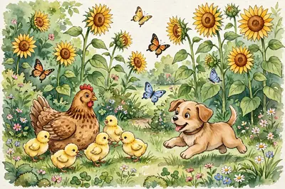
Cây xanh và con mèo khác hòn đá ở điểm nào?
Chúng là vật sống: có trao đổi chất, sinh trưởng và sinh sản.
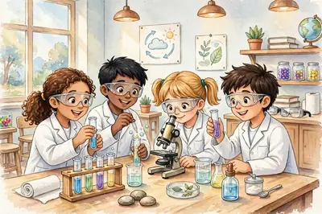
Các nhà khoa học đang làm thí nghiệm trong phòng lab — hình ảnh quen thuộc của hoạt động nghiên cứu khoa học. (Ảnh: Wikimedia Commons, CC0)
⚡ Nhớ nhanh
Nước sôi là hiện tượng thuộc lĩnh vực nào của KHTN?
Vật lí học — vì đó là sự chuyển thể của chất.
⭐ Điểm cần nhớ: Nghiên cứu vaccine = nghiên cứu khoa học • Vật sống có trao đổi chất, sinh trưởng, sinh sản • Nước sôi → lĩnh vực Vật lí học.
🧠 Sơ đồ tư duy — nhìn một lượt là nhớ cả bài:
Giới thiệu KHTN
Nghiên cứu khoa họcquan sát, thí nghiệm có phương pháp — ví dụ nghiên cứu vaccine
Vật sốngtrao đổi chất • sinh trưởng • sinh sản • cảm ứng
Vật không sốnghòn đá, than củi, bàn ghế…
Các lĩnh vựcVật lí • Hóa học • Sinh học • Thiên văn • KH Trái Đất
❓ Câu hỏi gợi nhớ — tự trả lời trong đầu trước, rồi mới bấm xem đáp án nhé:
❓ Tự kiểm tra: Hoạt động nào sau đây là hoạt động nghiên cứu khoa học: thả diều, cho mèo ăn, hay nghiên cứu vaccine phòng virus trong phòng thí nghiệm?
✅ Nghiên cứu vaccine trong phòng thí nghiệm — vì đó là hoạt động thí nghiệm, tìm tòi có phương pháp để khám phá ra cái mới.
❓ Tự kiểm tra: Than củi có phải là vật sống không? Vì sao?
✅ Không. Than củi không có các hoạt động sống như trao đổi chất, sinh trưởng hay sinh sản nên là vật không sống.
❓ Gợi nhớ: 🖼️ Nhìn hình các nhà khoa học trong phòng thí nghiệm: họ đang làm hoạt động gì? Hoạt động đó có phải là nghiên cứu khoa học không?
✅ Họ đang làm thí nghiệm, tìm tòi khám phá cái mới — đó chính là hoạt động nghiên cứu khoa học.
❓ Gợi nhớ: Kể tên 5 lĩnh vực của Khoa học tự nhiên.
✅ Vật lí học, Hóa học, Sinh học, Thiên văn học và Khoa học Trái Đất.
🃏 Flashcard của bài — bấm vào thẻ để lật mặt sau; nhớ rồi thì bấm ✔ Đã thuộc
🎯 Học xong bài này em biết: các quy tắc an toàn khi làm thí nghiệm và cách xử lí những tai nạn thường gặp.
Đọc kĩ hướng dẫn, làm đúng chỉ dẫn của giáo viên; đeo kính bảo hộ, găng tay khi thí nghiệm cần; không ăn uống, không nếm hay ngửi trực tiếp hóa chất.
Nhận biết các kí hiệu cảnh báo nguy hiểm trên nhãn hóa chất (độc, dễ cháy, ăn mòn…) để biết cách phòng tránh.
Sau khi làm thí nghiệm xong phải rửa sạch tay bằng xà phòng — vừa loại bỏ hóa chất (có thể ăn mòn da) vừa tránh vi khuẩn nguy hại.
Làm vỡ nhiệt kế thủy ngân: thủy ngân rất độc → đóng kín cửa phòng, đeo khẩu trang và găng tay, dùng chổi mềm quét gom cẩn thận và báo giáo viên. Tuyệt đối không dùng tay trần nhặt.
Hóa chất bị đổ/vỡ ra sàn: giữ bình tĩnh, báo giáo viên và trải giấy thấm lên dung dịch bị đổ để ngăn hóa chất lan rộng.
⚡ Nhớ nhanh
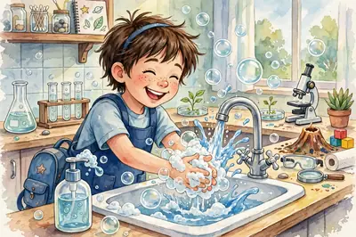
Làm xong thí nghiệm, việc đầu tiên em phải làm là gì?
Rửa sạch tay bằng xà phòng.
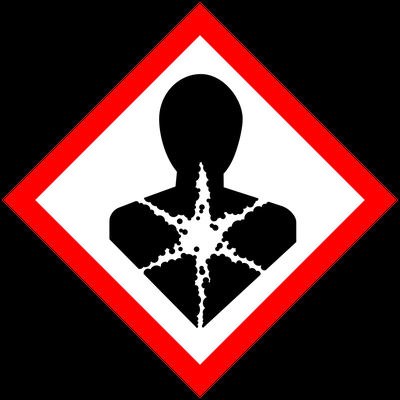
Kí hiệu cảnh báo "nguy hại cho sức khỏe" trong hệ thống GHS — loại kí hiệu em sẽ gặp trên nhãn các lọ hóa chất trong phòng thực hành. Gặp kí hiệu lạ, hãy đọc kĩ và hỏi giáo viên trước khi dùng. (Ảnh: Wikimedia Commons, Public domain)
⚡ Nhớ nhanh
Kí hiệu trong hình cảnh báo điều gì?
Chất nguy hại cho sức khỏe (hệ thống GHS) — phải đọc kĩ nhãn trước khi dùng.
⭐ Điểm cần nhớ: Xong thí nghiệm → rửa tay bằng xà phòng • Vỡ nhiệt kế thủy ngân → bảo hộ, gom cẩn thận, báo giáo viên • Hóa chất đổ → giấy thấm + báo giáo viên.
🧠 Sơ đồ tư duy — nhìn một lượt là nhớ cả bài:
An toàn phòng thực hành
Trước & trong giờđọc kĩ hướng dẫn • đeo kính, găng tay • không ăn uống, không nếm/ngửi hóa chất
Kí hiệu cảnh báođộc • dễ cháy • ăn mòn… trên nhãn hóa chất
Khi có sự cốvỡ nhiệt kế thủy ngân → bảo hộ, gom cẩn thận, báo GV • hóa chất đổ → giấy thấm
Sau giờ họcrửa sạch tay bằng xà phòng
❓ Câu hỏi gợi nhớ — tự trả lời trong đầu trước, rồi mới bấm xem đáp án nhé:
❓ Tự kiểm tra: Vì sao sau khi làm thí nghiệm xong cần rửa sạch tay bằng xà phòng?
✅ Để loại bỏ hóa chất có thể ăn mòn da tay và tránh vi khuẩn nguy hại còn bám trên tay.
❓ Tự kiểm tra: Không may làm vỡ ống hóa chất xuống sàn, em cần làm gì?
✅ Báo ngay cho giáo viên và trải giấy thấm lên dung dịch bị đổ để ngăn hóa chất lan ra xung quanh.
❓ Gợi nhớ: 🖼️ Nhìn kí hiệu cảnh báo trong hình: kí hiệu này cảnh báo điều gì? Gặp kí hiệu này trên lọ hóa chất, em phải làm gì?
✅ Kí hiệu cảnh báo chất nguy hại cho sức khỏe. Em phải đọc kĩ nhãn, làm đúng hướng dẫn và hỏi giáo viên trước khi dùng.
❓ Gợi nhớ: Nêu 2 việc tuyệt đối không được làm trong phòng thực hành.
✅ Không ăn uống trong phòng thực hành; không nếm hay ngửi trực tiếp hóa chất.
🃏 Flashcard của bài — bấm vào thẻ để lật mặt sau; nhớ rồi thì bấm ✔ Đã thuộc
🎯 Học xong bài này em biết: kính lúp phóng to được bao nhiêu lần, ý nghĩa số ghi trên vành kính và cách dùng, cách bảo quản kính lúp.
Kính lúp gồm một thấu kính lồi (miếng kính trong, phồng lên ở giữa — nhìn qua nó, vật sẽ to hơn) gắn trong khung có tay cầm, dùng để quan sát các vật nhỏ.
Số ghi trên vành kính như 3x, 5x… là số bội giác — cho biết khả năng phóng to ảnh của vật. Kính lúp thường phóng to ảnh khoảng 3 đến 20 lần.
Cách dùng đúng: đặt kính ở khoảng cách sao cho nhìn thấy vật rõ nét nhất, mắt nhìn qua kính; từ từ điều chỉnh khoảng cách giữa kính và vật đến khi ảnh rõ.
Bảo quản: lau kính bằng khăn mềm với nước sạch hoặc nước rửa kính chuyên dụng; cất nơi khô ráo, tránh làm rơi, vỡ hay trầy xước mặt kính.
⚡ Nhớ nhanh
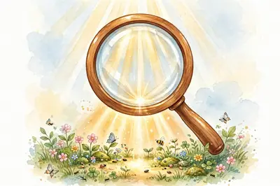
Bộ phận chính của kính lúp là gì?
Một thấu kính lồi gắn trong khung có tay cầm.
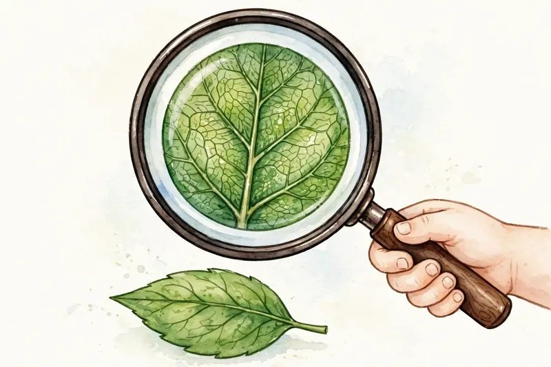
Kính lúp cầm tay — thấu kính lồi giúp ta nhìn rõ những chi tiết nhỏ mà mắt thường khó thấy. (Ảnh: Wikimedia Commons, CC BY 2.5)
⚡ Nhớ nhanh
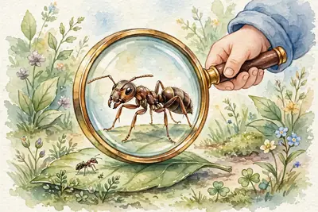
Kính lúp phóng to được khoảng bao nhiêu lần?
Khoảng 3 đến 20 lần.
⭐ Điểm cần nhớ: Số 3x, 5x = số bội giác (khả năng phóng to) • Kính lúp phóng to khoảng 3–20 lần • Dùng: điều chỉnh khoảng cách cho ảnh rõ nét.
🧠 Sơ đồ tư duy — nhìn một lượt là nhớ cả bài:
Kính lúp
Cấu tạothấu kính lồi + khung + tay cầm
Số bội giácsố ghi 3x, 5x… = khả năng phóng to • thường 3–20 lần
Cách dùngđiều chỉnh khoảng cách kính–vật cho ảnh rõ nét
Bảo quảnlau khăn mềm • cất nơi khô ráo
❓ Câu hỏi gợi nhớ — tự trả lời trong đầu trước, rồi mới bấm xem đáp án nhé:
❓ Tự kiểm tra: Trên vành một kính lúp ghi "5x". Số đó có ý nghĩa gì?
✅ Đó là số bội giác — cho biết kính có khả năng phóng to ảnh của vật lên 5 lần.
❓ Tự kiểm tra: Cách bảo quản kính lúp nào là đúng: chùi mặt kính bằng giấy nhám cho sạch, hay lau bằng khăn mềm và cất nơi khô ráo?
✅ Lau bằng khăn mềm (với nước sạch hoặc nước rửa kính chuyên dụng) và cất nơi khô ráo. Giấy nhám sẽ làm xước mặt kính.
❓ Gợi nhớ: 🖼️ Nhìn hình kính lúp: bộ phận chính giúp phóng to ảnh của vật là bộ phận nào?
✅ Thấu kính lồi ở giữa khung kính — nó làm ảnh của vật to lên để ta nhìn rõ chi tiết nhỏ.
❓ Gợi nhớ: Kính lúp thường phóng to ảnh của vật khoảng bao nhiêu lần?
✅ Khoảng 3 đến 20 lần.
🃏 Flashcard của bài — bấm vào thẻ để lật mặt sau; nhớ rồi thì bấm ✔ Đã thuộc
🎯 Học xong bài này em biết: kính hiển vi quang học phóng to được bao nhiêu lần và dùng để quan sát những vật như thế nào.
Những vật quá nhỏ (như tế bào) mắt thường và kính lúp đều không nhìn thấy — ta cần kính hiển vi quang học.
Kính hiển vi dùng hệ thống thấu kính gồm vật kính và thị kính; độ phóng đại của kính bằng độ phóng đại của vật kính nhân với thị kính.
Kính hiển vi quang học có thể phóng to ảnh của vật được quan sát khoảng 40 đến 3000 lần — lớn hơn kính lúp rất nhiều.
Nhờ kính hiển vi, con người quan sát được tế bào, vi khuẩn và cấu tạo bên trong của lá, máu… mở ra cả một thế giới vi mô.
⚡ Nhớ nhanh
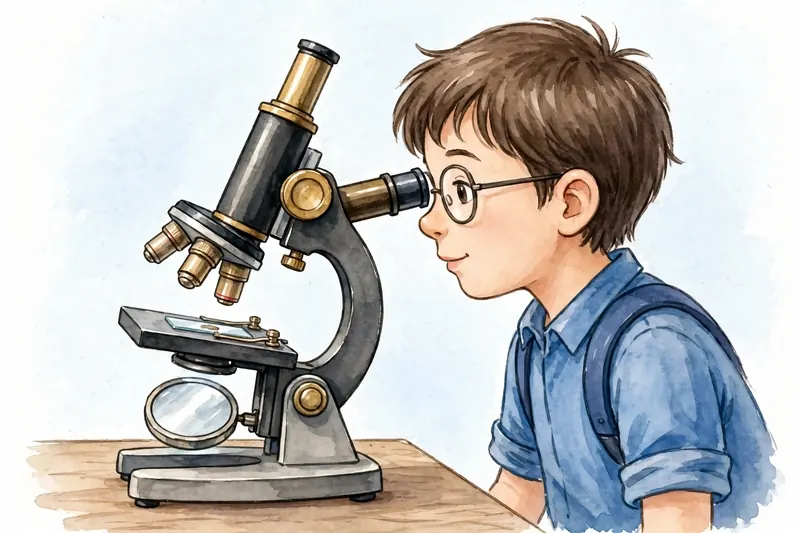
Kính hiển vi quang học phóng to khoảng bao nhiêu lần?
Khoảng 40 đến 3000 lần.
Kính hiển vi quang học — công cụ giúp quan sát thế giới vi mô: tế bào, vi sinh vật… mà mắt thường không thấy được. (Ảnh: Wikimedia Commons, CC BY-SA 4.0)
⚡ Nhớ nhanh
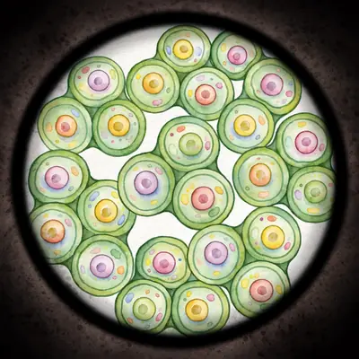
Độ phóng đại của kính hiển vi được tính thế nào?
Độ phóng đại vật kính × độ phóng đại thị kính.
⭐ Điểm cần nhớ: Kính hiển vi quang học phóng to khoảng 40–3000 lần • Gồm vật kính + thị kính • So sánh: kính lúp chỉ 3–20 lần.
🧠 Sơ đồ tư duy — nhìn một lượt là nhớ cả bài:
Kính hiển vi quang học
Cấu tạovật kính + thị kính
Độ phóng đại40–3000 lần = phóng đại vật kính × thị kính
Dùng để quan sáttế bào, vi khuẩn — vật quá nhỏ
So với kính lúpkính lúp chỉ 3–20 lần
❓ Câu hỏi gợi nhớ — tự trả lời trong đầu trước, rồi mới bấm xem đáp án nhé:
❓ Tự kiểm tra: Kính hiển vi quang học có thể phóng to ảnh của vật được quan sát khoảng bao nhiêu lần?
✅ Khoảng từ 40 đến 3000 lần.
❓ Tự kiểm tra: Muốn quan sát tế bào lá hành, em dùng kính lúp hay kính hiển vi? Vì sao?
✅ Dùng kính hiển vi, vì tế bào rất nhỏ; kính lúp chỉ phóng to 3–20 lần, không đủ để nhìn thấy tế bào.
❓ Gợi nhớ: 🖼️ Nhìn hình kính hiển vi: hai bộ phận thấu kính chính của kính tên là gì?
✅ Vật kính (gần vật quan sát) và thị kính (gần mắt người nhìn).
❓ Gợi nhớ: Độ phóng đại của kính hiển vi được tính bằng cách nào?
✅ Bằng độ phóng đại của vật kính nhân với độ phóng đại của thị kính.
🃏 Flashcard của bài — bấm vào thẻ để lật mặt sau; nhớ rồi thì bấm ✔ Đã thuộc
🎯 Học xong bài này em biết: đơn vị đo độ dài hợp pháp, cách chọn thước và đọc kết quả đo đúng cách.
Đơn vị đo độ dài hợp pháp của nước ta là mét (m) — đơn vị chuẩn trong hệ SI. Các đơn vị khác: km, dm, cm, mm… (1 km = 1000 m; 1 m = 100 cm; 1 cm = 10 mm).
Mỗi thước có giới hạn đo (GHĐ) — độ dài lớn nhất thước đo được — và độ chia nhỏ nhất (ĐCNN) — khoảng cách giữa hai vạch chia liên tiếp.
Khi đo: chọn thước có GHĐ và ĐCNN phù hợp; đặt thước dọc theo chiều dài cần đo, vạch 0 trùng với một đầu của vật; mắt nhìn vuông góc với vạch chia; đọc và ghi kết quả theo ĐCNN.
Nhớ thêm: 1 mL = 1 cm³ — đổi qua lại giữa thể tích và dung tích.
⚡ Nhớ nhanh
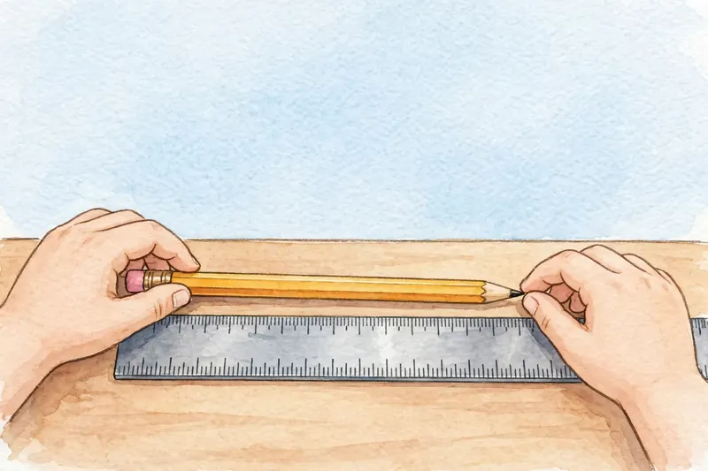
Giá trị lớn nhất mà thước đo được gọi là gì?
Giới hạn đo (GHĐ) của thước.
Thước thép với các vạch chia li — hãy chú ý khoảng cách giữa hai vạch liên tiếp, đó chính là độ chia nhỏ nhất của thước. (Ảnh: Wikimedia Commons, CC BY-SA 4.0)
⚡ Nhớ nhanh
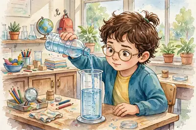
1 mL bằng bao nhiêu cm³?
1 mL = 1 cm³.
⭐ Điểm cần nhớ: Đơn vị hợp pháp = mét (m) • GHĐ = giá trị lớn nhất thước đo được • ĐCNN = khoảng cách 2 vạch liên tiếp • 1 mL = 1 cm³.
🧠 Sơ đồ tư duy — nhìn một lượt là nhớ cả bài:
Đo chiều dài
Đơn vịmét (m) — hợp pháp • km, dm, cm, mm
Hai con số của thướcGHĐ = lớn nhất đo được • ĐCNN = khoảng cách 2 vạch liên tiếp
Cách đo đúngvạch 0 trùng đầu vật • mắt nhìn vuông góc • đọc theo ĐCNN
Nhớ thêm1 mL = 1 cm³
❓ Câu hỏi gợi nhớ — tự trả lời trong đầu trước, rồi mới bấm xem đáp án nhé:
❓ Tự kiểm tra: Đơn vị nào là đơn vị đo độ dài hợp pháp của nước ta?
✅ Mét (m).
❓ Tự kiểm tra: Một thước có các vạch chia cách nhau 1 mm. ĐCNN của thước là bao nhiêu?
✅ ĐCNN = 1 mm — bằng khoảng cách giữa hai vạch chia liên tiếp trên thước.
❓ Gợi nhớ: 🖼️ Nhìn hình thước thép: khoảng cách giữa hai vạch chia liên tiếp trên thước cho biết đại lượng nào của thước?
✅ Độ chia nhỏ nhất (ĐCNN) của thước.
❓ Gợi nhớ: Đổi đơn vị: 1 m = ? cm; 1 cm = ? mm.
✅ 1 m = 100 cm; 1 cm = 10 mm.
🃏 Flashcard của bài — bấm vào thẻ để lật mặt sau; nhớ rồi thì bấm ✔ Đã thuộc
🎯 Học xong bài này em biết: cách đo khối lượng bằng cân đúng quy trình, cách chọn quả cân và đổi đơn vị khối lượng.
Đơn vị khối lượng là kilôgam (kg). Số ghi trên bao bì, ví dụ hộp sữa ghi 380 g, là khối lượng của sữa trong hộp (khối lượng tịnh).
Các bước đo khối lượng bằng cân: ước lượng khối lượng vật cần đo → chọn cân có GHĐ và ĐCNN phù hợp → hiệu chỉnh cân về vạch 0 → đặt vật nhẹ nhàng lên đĩa cân → đặt quả cân nhẹ nhàng → đọc kết quả. Không chọn cân "bất kì mình thích" và không đặt vật dứt khoát, mạnh tay.
Đổi đơn vị: 1 tấn = 1000 kg; 1 tạ = 100 kg; 1 yến = 10 kg; 1 lạng = 100 g = 0,1 kg. Ví dụ: 0,2 tạ = 20 kg (không phải 200 kg); 600 g = 0,6 kg.
Mẹo chọn quả cân: cộng dần các quả cân sao cho tổng đúng khối lượng cần cân — ví dụ cân 257,5 g dùng: 200 g + 50 g + 5 g + 2 g + 500 mg.
ĐCNN của cân đọc từ kết quả đo: cân được 15 634 g (lẻ đến 1 g) → ĐCNN của cân là 1 g.
⚡ Nhớ nhanh
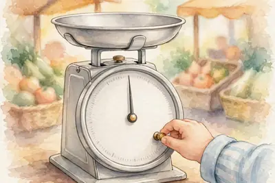
Trước khi cân, phải làm gì với cân?
Hiệu chỉnh cân về vạch 0.
➕ Kiến thức bổ sung — biết thêm để làm được bài tập: Quy trình đo khối lượng bằng cân gồm đúng 6 bước theo thứ tự đã nêu ở trên: ước lượng → chọn cân → hiệu chỉnh → đặt vật → đặt quả cân → đọc kết quả. Khi đọc kết quả, em nhìn vào vạch chia mà đầu kim đang chỉ tới và ghi lại số đo tương ứng.
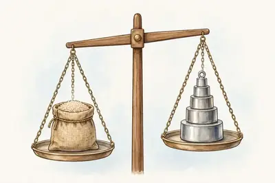
Cân đòn trong phòng thí nghiệm — khi cân, phải hiệu chỉnh về 0 trước và đặt vật thật nhẹ nhàng lên đĩa cân. (Ảnh: Wikimedia Commons, Public domain)
⚡ Nhớ nhanh
Số 380 g ghi trên hộp sữa cho biết điều gì?
Khối lượng của sữa trong hộp (khối lượng tịnh).
⭐ Điểm cần nhớ: Ước lượng → chọn cân phù hợp → hiệu chỉnh 0 → đặt nhẹ nhàng → đọc kết quả • 1 tấn = 1000 kg; 1 lạng = 0,1 kg.
🧠 Sơ đồ tư duy — nhìn một lượt là nhớ cả bài:
Đo khối lượng
Đơn vịkilôgam (kg) • tấn, tạ, yến, lạng, gam
Quy trình cânước lượng → chọn cân phù hợp → hiệu chỉnh 0 → đặt nhẹ nhàng → đọc
Đổi đơn vị1 tấn = 1000 kg • 1 tạ = 100 kg • 1 lạng = 100 g = 0,1 kg
Mẹo quả cân257,5 g = 200 + 50 + 5 + 2 + 0,5 g
❓ Câu hỏi gợi nhớ — tự trả lời trong đầu trước, rồi mới bấm xem đáp án nhé:
❓ Tự kiểm tra: Có 20 túi đường, mỗi túi 1 kg, cho thêm vào mỗi túi 2 lạng. Khối lượng của 20 túi là bao nhiêu?
✅ Mỗi túi nặng 1 kg + 0,2 kg = 1,2 kg. Vậy 20 túi nặng 1,2 × 20 = 24 kg.
❓ Tự kiểm tra: Hai phát biểu sau, phát biểu nào sai: (1) "Chọn cân nào mình thích cũng được"; (2) "Phải hiệu chỉnh cân về vạch 0 trước khi cân"?
✅ Phát biểu (1) sai — phải chọn cân có GHĐ và ĐCNN phù hợp với vật cần đo. Phát biểu (2) đúng.
❓ Gợi nhớ: 🖼️ Nhìn hình cân đòn: trước khi đặt vật lên cân, việc đầu tiên phải làm với cân là gì?
✅ Hiệu chỉnh cân về vạch 0 khi chưa có vật trên đĩa cân.
❓ Gợi nhớ: Vì sao nói 0,2 tạ = 20 kg mà không phải 200 kg?
✅ Vì 1 tạ = 100 kg, nên 0,2 tạ = 0,2 × 100 = 20 kg.
🃏 Flashcard của bài — bấm vào thẻ để lật mặt sau; nhớ rồi thì bấm ✔ Đã thuộc
🎯 Học xong bài này em biết: hai thang nhiệt độ Xen-xi-ớt (°C) và Fa-ren-hai (°F) và công thức chuyển đổi giữa chúng.
Nhiệt độ được đo bằng nhiệt kế. Thang Xen-xi-ớt (°C): nước đá đang tan ở 0 °C, nước đang sôi ở 100 °C.
Thang Fa-ren-hai (°F) dùng ở một số nước như Mỹ: nước đang sôi ở 212 °F.
Công thức chuyển đổi: T(°F) = T(°C) × 1,8 + 32. Ví dụ: 22 °C = 22 × 1,8 + 32 = 71,6 °F.
Lưu ý an toàn: nhiệt kế thủy ngân khi vỡ rất nguy hiểm — ôn lại cách xử lí ở Bài 2 nhé.
⚡ Nhớ nhanh
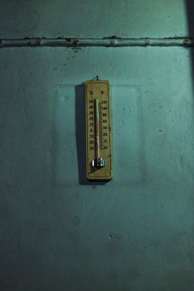
Nhiệt kế trong hình có mấy thang đo?
Hai thang: thang °C và thang °F.
Nhiệt kế treo tường có hai thang đo đặt cạnh nhau: bên trái là thang Xen-xi-ớt (°C), bên phải là thang Fa-ren-hai (°F). Cùng một lúc, nhiệt độ đọc theo hai thang cho hai con số khác nhau — khi đọc nhiệt kế, em phải chú ý mình đang đọc theo thang nào nhé! (Ảnh: JOBAER, Wikimedia Commons, giấy phép tự do)
⚡ Nhớ nhanh
Nước đang sôi ở bao nhiêu °C?
100 °C — tương ứng 212 °F.
⭐ Điểm cần nhớ: °F = °C × 1,8 + 32 • Nước sôi = 100 °C = 212 °F • Nước đá tan = 0 °C.
🧠 Sơ đồ tư duy — nhìn một lượt là nhớ cả bài:
Đo nhiệt độ
Dụng cụnhiệt kế
Thang Xen-xi-ớt °Cnước đá tan: 0 °C • nước sôi: 100 °C
Thang Fa-ren-hai °Fnước sôi: 212 °F
Công thức đổi°F = °C × 1,8 + 32
❓ Câu hỏi gợi nhớ — tự trả lời trong đầu trước, rồi mới bấm xem đáp án nhé:
❓ Tự kiểm tra: Đổi 22 °C ra độ F.
✅ 22 × 1,8 + 32 = 39,6 + 32 = 71,6 °F.
❓ Tự kiểm tra: Trong thang Fa-ren-hai, nhiệt độ của nước đang sôi là bao nhiêu?
✅ 212 °F.
❓ Gợi nhớ: 🖼️ Nhìn hình nhiệt kế treo tường: hai thang đo trên nhiệt kế là hai thang nào? Nước đang sôi ở 100 °C thì đọc theo thang Fa-ren-hai được bao nhiêu?
✅ Thang Xen-xi-ớt (°C) ở bên trái và thang Fa-ren-hai (°F) ở bên phải. 100 °C = 212 °F — đó là nhiệt độ của nước đang sôi.
❓ Gợi nhớ: Đổi 0 °C sang độ F.
✅ 0 × 1,8 + 32 = 32 °F.
🃏 Flashcard của bài — bấm vào thẻ để lật mặt sau; nhớ rồi thì bấm ✔ Đã thuộc
🎯 Học xong bài này em biết: ba thể của chất, tên gọi các sự chuyển thể và phân biệt được bay hơi với sôi.
Chất có 3 thể: rắn, lỏng, khí. Thể rắn có hình dạng và thể tích xác định; thể lỏng có thể tích xác định nhưng hình dạng theo vật chứa; thể khí không có hình dạng và thể tích xác định, lan tỏa theo mọi hướng trong không gian (vì vậy ta ngửi thấy mùi hoa hồng từ xa).
Các sự chuyển thể: nóng chảy (rắn → lỏng), đông đặc (lỏng → rắn), bay hơi (lỏng → khí), ngưng tụ (khí → lỏng), sôi (lỏng → khí trong lòng chất lỏng).
Hơi nước ngưng tụ trên cao tạo thành mây; ngưng tụ gần mặt đất tạo thành sương.
Phân biệt quan trọng: sôi xảy ra ở một nhiệt độ xác định (nhiệt độ sôi). Còn bay hơi xảy ra ở mọi nhiệt độ, chỉ trên bề mặt chất lỏng. Bay hơi nhanh hơn khi trời nắng nóng và có gió. Nghề làm muối thuận lợi vào những ngày nắng nóng vì nước biển bay hơi nhanh.
⚡ Nhớ nhanh
Mây trên trời được tạo thành nhờ hiện tượng gì?
Hơi nước ngưng tụ trên cao.
➕ Kiến thức bổ sung — biết thêm để làm được bài tập: Sự bay hơi diễn ra rất lặng lẽ trên mặt thoáng: mắt thường không nhìn thấy được quá trình nước biến thành hơi — ta chỉ nhận ra khi thấy mực chất lỏng vơi dần đi. Đó cũng là một đặc điểm nữa để nhận biết sự bay hơi.
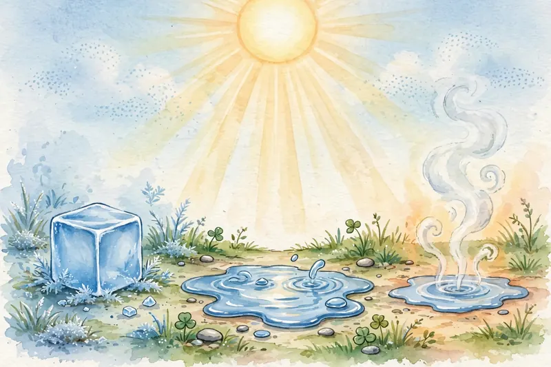
Đá (thể rắn) đang tan thành nước (thể lỏng) — hiện tượng nóng chảy em gặp hằng ngày. (Ảnh: Wikimedia Commons, CC BY-SA 2.0)
⚡ Nhớ nhanh
Viên đá tan thành nước gọi là sự gì?
Sự nóng chảy — chuyển từ thể rắn sang thể lỏng.
⭐ Điểm cần nhớ: Ngưng tụ → tạo mây • Sôi: nhiệt độ xác định • Bay hơi: mọi nhiệt độ, trên bề mặt thoáng • Khí lan tỏa mọi hướng.
🧠 Sơ đồ tư duy — nhìn một lượt là nhớ cả bài:
Các thể & sự chuyển thể
Ba thể của chấtrắn: hình dạng + thể tích xác định • lỏng: thể tích xác định • khí: lan tỏa mọi hướng
Các sự chuyển thểnóng chảy • đông đặc • bay hơi • ngưng tụ • sôi
Trong tự nhiênhơi nước ngưng tụ → mây, sương
Sôi ≠ Bay hơisôi: ở nhiệt độ xác định • bay hơi: mọi nhiệt độ, trên bề mặt
❓ Câu hỏi gợi nhớ — tự trả lời trong đầu trước, rồi mới bấm xem đáp án nhé:
❓ Tự kiểm tra: Hiện tượng tự nhiên nào sau đây do hơi nước ngưng tụ: tạo thành mây, hay nước đá tan thành nước?
✅ Tạo thành mây — hơi nước trong không khí ngưng tụ thành những giọt nước li ti. Nước đá tan là nóng chảy.
❓ Tự kiểm tra: "Bay hơi xảy ra ở một nhiệt độ xác định" — phát biểu này đúng hay sai? Vì sao?
✅ Sai. Bay hơi xảy ra ở mọi nhiệt độ; chỉ có sự sôi mới xảy ra ở một nhiệt độ xác định (nhiệt độ sôi).
❓ Gợi nhớ: 🖼️ Nhìn hình viên đá đang tan: đây là sự chuyển thể nào? Chất chuyển từ thể gì sang thể gì?
✅ Sự nóng chảy — chất chuyển từ thể rắn sang thể lỏng.
❓ Gợi nhớ: Vì sao quần áo phơi vào ngày nắng nóng và có gió lại khô nhanh hơn?
✅ Vì nước bay hơi nhanh hơn khi nhiệt độ cao và có gió thổi qua bề mặt thoáng.
❓ Gợi nhớ: Sương mù buổi sáng sớm được tạo thành do hiện tượng gì?
✅ Hơi nước trong không khí ngưng tụ gần mặt đất thành những giọt nước li ti.
🃏 Flashcard của bài — bấm vào thẻ để lật mặt sau; nhớ rồi thì bấm ✔ Đã thuộc
Bài 10. Sự đa dạng của chất — Tính chất của chất và vật liệu
🎯 Học xong bài này em biết: phân biệt tính chất vật lí và tính chất hóa học của chất; thế nào là vật liệu, nguyên liệu; ý nghĩa mô hình 3R.
Tính chất vật lí: màu, mùi, vị, tính dẫn điện, dẫn nhiệt, nhiệt độ sôi/nóng chảy… quan sát được mà chất không biến đổi thành chất khác. Ví dụ: kim loại dẫn điện tốt.
Tính chất hóa học: khả năng biến đổi thành chất khác — ví dụ đun đường đến khi cháy đen (tạo ra chất mới), sắt bị gỉ.
Vật liệu là một chất hoặc hỗn hợp được dùng làm nguyên liệu đầu vào để sản xuất sản phẩm. Nguyên liệu ví dụ: đất sét làm gạch ngói, gỗ làm giấy. Chú ý: xe đạp là sản phẩm/vật thể, không phải vật liệu.
Gang và thép đều chế biến từ quặng sắt. Gang cứng nhưng giòn hơn thép nên ít dùng trong xây dựng. Khai thác quặng cần có kế hoạch, tránh khai thác thủ công kém hiệu quả và lãng phí tài nguyên.
Mô hình 3R bảo vệ môi trường: Reduce (giảm thiểu) – Reuse (tái sử dụng) – Recycle (tái chế).
⚡ Nhớ nhanh
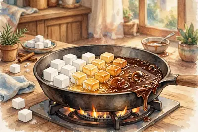
Đun đường đến cháy đen cho thấy tính chất gì của chất?
Tính chất hóa học — vì có chất mới được tạo thành.
➕ Kiến thức bổ sung — biết thêm để làm được bài tập: Khai thác quặng (như quặng sắt) giúp con người có nguyên liệu để chế biến thành những sản phẩm có giá trị như gang, thép. Khi khai thác, cần làm tiết kiệm, có kế hoạch và tránh gây ô nhiễm môi trường đất, nước và không khí xung quanh.
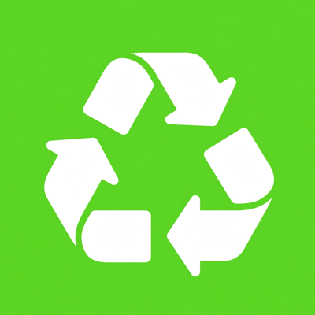
Biểu tượng tái chế quen thuộc — nhắc ta thực hành 3R: giảm thiểu rác thải, tái sử dụng và tái chế vật liệu để bảo vệ môi trường. (Ảnh: Wikimedia Commons, Public domain)
⚡ Nhớ nhanh
Biểu tượng trong hình có ý nghĩa gì?
Tái chế (Recycle) — một trong ba phần của mô hình 3R.
⭐ Điểm cần nhớ: Tạo chất mới = tính chất hóa học (đường cháy đen) • Kim loại dẫn điện tốt • 3R = Giảm thiểu – Tái sử dụng – Tái chế • Gang, thép ← quặng sắt.
🧠 Sơ đồ tư duy — nhìn một lượt là nhớ cả bài:
Chất & vật liệu
Tính chất vật límàu, mùi, dẫn điện, dẫn nhiệt… — không tạo chất mới
Tính chất hóa họcbiến đổi thành chất khác — đường cháy đen, sắt gỉ
Vật liệu & nguyên liệuđất sét → gạch ngói • gỗ → giấy • gang, thép ← quặng sắt (gang giòn hơn thép)
Mô hình 3RReduce giảm thiểu • Reuse tái sử dụng • Recycle tái chế
❓ Câu hỏi gợi nhớ — tự trả lời trong đầu trước, rồi mới bấm xem đáp án nhé:
❓ Tự kiểm tra: Quá trình nào thể hiện tính chất hóa học: nước bay hơi, hay đun nóng đường đến khi xuất hiện chất màu đen?
✅ Đun nóng đường đến khi cháy đen — vì có chất mới được tạo thành. Bay hơi chỉ là chuyển thể, tính chất vật lí.
🎯 Học xong bài này em biết: thành phần của không khí, vai trò của oxygen và cách dùng gas, xử lí cháy xăng an toàn.
Không khí là hỗn hợp khí: nitrogen chiếm khoảng 78%, oxygen chiếm khoảng 21% thể tích, còn lại là các khí khác (carbon dioxide, hơi nước…).
Oxygen rất cần cho sự sống (hô hấp) và duy trì sự cháy. Trong y tế, oxygen được nén trong các bình thép để hỗ trợ bệnh nhân thở.
Dùng gas tiết kiệm: điều chỉnh ngọn lửa phù hợp với nhu cầu và kích thước nồi, không để lửa cháy lãng phí quá to.
Can xăng bốc cháy: không dùng nước (xăng nhẹ hơn nước, sẽ loang ra và cháy lan) — cách phù hợp là dùng cát đổ trùm lên để cách li oxygen, hoặc dùng bình chữa cháy.
⚡ Nhớ nhanh
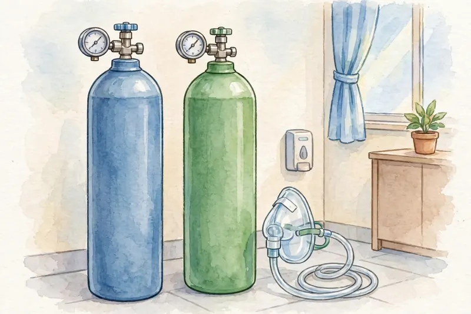
Oxygen chiếm khoảng bao nhiêu phần trăm không khí?
Khoảng 21%.
Các bình oxygen y tế tại bệnh viện — oxygen chiếm 21% không khí và là khí duy trì sự sống, được nén vào bình để cấp cho bệnh nhân khi cần. (Ảnh: Wikimedia Commons, Public domain)
⚡ Nhớ nhanh
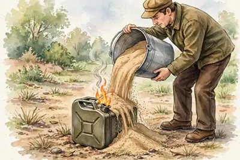
Can xăng bốc cháy thì dập lửa bằng gì?
Đổ cát trùm lên (hoặc dùng bình chữa cháy) — tuyệt đối không dùng nước.
⭐ Điểm cần nhớ: Không khí: nitrogen ≈ 78%, oxygen ≈ 21% • Cháy xăng → cát trùm lên, tuyệt đối không dùng nước.
🧠 Sơ đồ tư duy — nhìn một lượt là nhớ cả bài:
Oxygen & không khí
Thành phần không khínitrogen ≈ 78% • oxygen ≈ 21% • khí khác ≈ 1%
Vai trò của oxygenhô hấp • duy trì sự cháy • y tế (bình oxygen)
Dùng gas tiết kiệmchỉnh ngọn lửa vừa với nồi và nhu cầu
Cháy xăng dầudùng cát trùm lên • KHÔNG dùng nước
❓ Câu hỏi gợi nhớ — tự trả lời trong đầu trước, rồi mới bấm xem đáp án nhé:
❓ Tự kiểm tra: Trong không khí, oxygen và nitrogen chiếm khoảng bao nhiêu phần trăm thể tích?
✅ Oxygen khoảng 21%, nitrogen khoảng 78%.
❓ Tự kiểm tra: Can xăng bốc cháy, vì sao không nên dùng nước để dập?
✅ Vì xăng nhẹ hơn nước và không tan trong nước, đổ nước sẽ làm xăng loang ra, cháy lan rộng hơn. Cách đúng: dùng cát đổ trùm lên để cách li oxygen.
❓ Gợi nhớ: 🖼️ Nhìn hình các bình thép trong bệnh viện: trong bình chứa khí gì và dùng để làm gì?
✅ Khí oxygen, dùng để hỗ trợ bệnh nhân hô hấp khi cần.
❓ Gợi nhớ: Nêu một cách dùng bếp gas tiết kiệm mà em học được trong bài.
✅ Điều chỉnh ngọn lửa vừa phải, phù hợp với kích thước nồi và nhu cầu đun nấu, không để lửa cháy lãng phí.
🃏 Flashcard của bài — bấm vào thẻ để lật mặt sau; nhớ rồi thì bấm ✔ Đã thuộc
✅ Xong Bài 11 rồi! Ôn thẻ xong thì đi tiếp 👉 Bài 12: Tế bào
Bài 12. Tế bào — đơn vị của sự sống và các cấp độ tổ chức cơ thể
🎯 Học xong bài này em biết: tế bào là đơn vị cấu tạo của mọi sinh vật; phân biệt sinh vật đơn bào – đa bào; các cấp độ tổ chức của cơ thể.
Mọi sinh vật đều được cấu tạo từ tế bào — tế bào là đơn vị cơ bản của sự sống. Hầu hết tế bào rất nhỏ, phải dùng kính hiển vi mới quan sát được (ôn lại Bài 4).
Nhân tế bào là trung tâm điều khiển mọi hoạt động của tế bào. Lưu ý dễ nhầm: tế bào nhân thực có nhân hoàn chỉnh; "vùng nhân" là đặc điểm của tế bào nhân sơ (loại tế bào đơn giản, chưa có nhân hoàn chỉnh), không có ở tế bào nhân thực.
Cơ thể lớn lên nhờ tế bào sinh trưởng và phân chia (sinh sản) — ví dụ quả táo trên cây to dần sau nhiều ngày. Tế bào cũ chết đi cũng được thay thế liên tục: nếu dạ dày không thay thế tế bào, thành dạ dày sẽ bị acid ăn mòn gây viêm loét.
Sinh vật đơn bào: cơ thể chỉ gồm một tế bào — ví dụ tảo lục, vi khuẩn lam. Sinh vật đa bào gồm nhiều tế bào: cây thông, con bướm…
Các cấp độ tổ chức: tế bào → mô → cơ quan → hệ cơ quan → cơ thể. Ví dụ dạ dày là một cơ quan, được cấu tạo từ tế bào và mô.
Ở thực vật có hai hệ cơ quan: hệ chồi (thân, lá, hoa, quả) và hệ rễ.
⚡ Nhớ nhanh
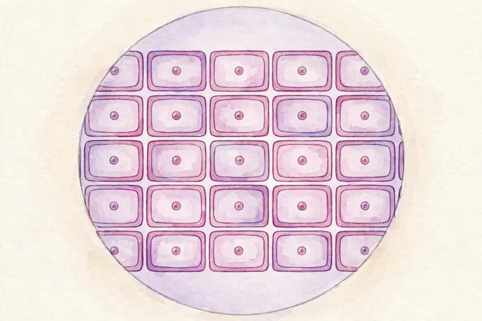
Đơn vị cấu tạo nên mọi sinh vật là gì?
Tế bào.
➕ Kiến thức bổ sung — biết thêm để làm được bài tập: Tế bào không phải lúc nào cũng có cùng một hình dạng. Tùy từng loại, tế bào có thể có hình cầu, hình đĩa, hình sợi dài hay hình đa giác… Vì vậy, nói “mọi tế bào đều có hình đa giác” là sai.
Tế bào biểu bì hành nhìn qua kính hiển vi quang học — từng "ô" nhỏ xếp khít nhau chính là từng tế bào, đơn vị cấu tạo nên mọi sinh vật. (Ảnh: Wikimedia Commons, CC BY 2.0)
⚡ Nhớ nhanh
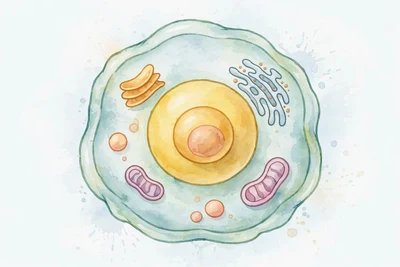
Bộ phận nào là trung tâm điều khiển của tế bào?
Nhân tế bào.
⭐ Điểm cần nhớ: Mọi sinh vật ← tế bào • Nhân = trung tâm điều khiển • Đơn bào: tảo lục, vi khuẩn lam • Thực vật: hệ chồi + hệ rễ • Tế bào → mô → cơ quan → hệ cơ quan → cơ thể.
🧠 Sơ đồ tư duy — nhìn một lượt là nhớ cả bài:
Tế bào & cấp độ tổ chức
Đơn vị của sự sốngmọi sinh vật đều cấu tạo từ tế bào
Nhân tế bàotrung tâm điều khiển • "vùng nhân" chỉ có ở tế bào nhân sơ
Đơn bào — Đa bàođơn bào: tảo lục, vi khuẩn lam • đa bào: cây thông, con bướm
Cấp độ tổ chứctế bào → mô → cơ quan → hệ cơ quan → cơ thể • thực vật: hệ chồi + hệ rễ
❓ Câu hỏi gợi nhớ — tự trả lời trong đầu trước, rồi mới bấm xem đáp án nhé:
❓ Tự kiểm tra: Trong các sinh vật: tảo lục, vi khuẩn lam, con bướm, cây thông — sinh vật nào là sinh vật đơn bào?
✅ Tảo lục và vi khuẩn lam — cơ thể của chúng chỉ gồm một tế bào duy nhất.
❓ Tự kiểm tra: Thành phần nào dưới đây không có ở tế bào nhân thực: nhân tế bào, hay vùng nhân?
✅ Vùng nhân — đó là đặc điểm của tế bào nhân sơ. Tế bào nhân thực có nhân hoàn chỉnh, là trung tâm điều khiển tế bào.
❓ Gợi nhớ: 🖼️ Nhìn hình tế bào biểu bì hành qua kính hiển vi: những "ô" nhỏ xếp khít nhau là gì?
✅ Đó là các tế bào — đơn vị cấu tạo nên cơ thể sinh vật.
❓ Gợi nhớ: Sắp xếp đúng thứ tự các cấp độ tổ chức của cơ thể: cơ quan – tế bào – cơ thể – mô – hệ cơ quan.
✅ Tế bào → mô → cơ quan → hệ cơ quan → cơ thể.
❓ Gợi nhớ: Cơ thể thực vật có hai hệ cơ quan nào?
✅ Hệ chồi (thân, lá, hoa, quả) và hệ rễ.
🃏 Flashcard của bài — bấm vào thẻ để lật mặt sau; nhớ rồi thì bấm ✔ Đã thuộc
🎯 Học xong bài này em biết: lực là gì, tác dụng của lực, lực hút của Trái Đất và cách đo lực bằng lực kế lò xo.
Lực là tác dụng đẩy, kéo của vật này lên vật khác. Lực có thể làm vật biến dạng, thay đổi chuyển động (nhanh/chậm dần, đổi hướng) hoặc cả hai.
Mỗi lực có phương và chiều xác định. Ví dụ: thợ xây kéo bao xi măng lên cao → lực kéo có phương thẳng đứng, chiều từ dưới lên trên — cùng phương nhưng ngược chiều với trọng lực.
Lực hút của Trái Đất (trọng lực) tác dụng lên mọi vật, luôn hướng xuống dưới: quả bưởi rụng xuống, quả bóng thả ra rơi càng lúc càng nhanh đều do trọng lực.
Hai lực cân bằng: cùng tác dụng lên một vật, cùng phương, ngược chiều, cùng độ lớn → vật đứng yên. Quả bóng để trên bàn đứng yên vì trọng lực và lực nâng của bàn cân bằng nhau (bạn Lan nói đúng). Ngược lại, VĐV nhảy cao đạp chân xuống đất: chân tác dụng lực lên đất và đất tác dụng lực lên chân — hai lực này tác dụng lên hai vật khác nhau nên không phải hai lực cân bằng.
Khối lượng như nhau thì trọng lượng như nhau: quyển sách 100 g và quả cân sắt 100 g có trọng lượng bằng nhau — nhưng nói "hai vật có cùng thể tích" là sai, vì khác chất thì thể tích khác nhau.
Lực kế lò xo dùng để đo lực, đơn vị là niutơn (N). Lực kế thường dùng có GHĐ 10 N, ĐCNN 0,2 N. Đọc độ dãn của lò xo để biết độ lớn của lực: treo quả cân 150 g kim chỉ vạch thứ 3 → mỗi vạch ứng với 50 g, nên 100 g sẽ chỉ vạch thứ 2.
⚡ Nhớ nhanh
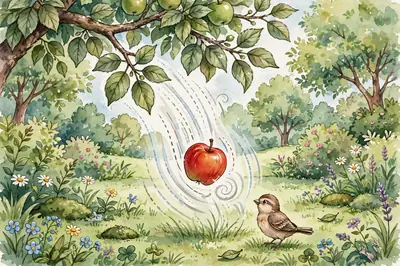
Trọng lực luôn có chiều hướng về đâu?
Hướng xuống dưới, về phía Trái Đất.
➕ Kiến thức bổ sung — biết thêm để làm được bài tập: Không chỉ Trái Đất mới hút các vật: bất kì hai vật nào có khối lượng cũng hút nhau bằng lực hấp dẫn. Quyển sách và quả cân đặt gần nhau trên bàn cũng hút nhau như thế, chỉ là lực hút quá nhỏ nên ta không cảm nhận được; còn lực hút của Trái Đất lên vật (trọng lực) thì rất rõ.
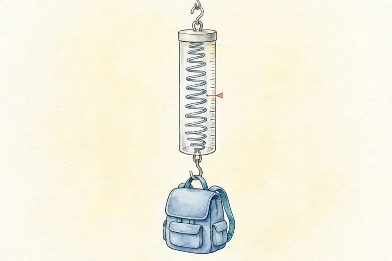
Lực kế lò xo đang treo vật — lò xo dãn ra bao nhiêu, ta đọc được độ lớn của lực bấy nhiêu trên thang chia vạch. (Ảnh: Wikimedia Commons, CC BY-SA 3.0)
⚡ Nhớ nhanh
Dụng cụ trong hình dùng để đo đại lượng nào?
Đo lực — đó là lực kế, đơn vị niutơn (N).
⭐ Điểm cần nhớ: Trọng lực luôn hướng xuống • Hai lực cân bằng phải cùng tác dụng lên một vật • Lực kế: đơn vị N, GHĐ 10 N, ĐCNN 0,2 N.
🧠 Sơ đồ tư duy — nhìn một lượt là nhớ cả bài:
Lực & lực kế
Lực là gìtác dụng đẩy/kéo • làm biến dạng hoặc thay đổi chuyển động • có phương và chiều
Trọng lựclực hút của Trái Đất • luôn hướng xuống dưới
Hai lực cân bằngcùng một vật • cùng phương • ngược chiều • cùng độ lớn
Lực kế lò xođo lực, đơn vị niutơn (N) • GHĐ 10 N • ĐCNN 0,2 N
❓ Câu hỏi gợi nhớ — tự trả lời trong đầu trước, rồi mới bấm xem đáp án nhé:
❓ Tự kiểm tra: Quả bóng đặt yên trên bàn: Bình nói "không có lực nào tác dụng", Lan nói "có hai lực cân bằng tác dụng". Ai đúng?
✅ Lan đúng. Quả bóng chịu trọng lực (hướng xuống) và lực nâng của mặt bàn (hướng lên); hai lực cân bằng nên bóng đứng yên.
❓ Tự kiểm tra: Treo quả cân 150 g vào lực kế thì kim chỉ vạch thứ 3. Treo quả cân 100 g thì kim chỉ vạch thứ mấy?
✅ 150 g ứng với 3 vạch → mỗi vạch 50 g → 100 g ứng với vạch thứ 2.
❓ Gợi nhớ: 🖼️ Nhìn hình lực kế đang treo vật: treo vật càng nặng thì lò xo thế nào? Điều đó giúp ta biết điều gì?
✅ Lò xo dãn ra càng nhiều. Độ dãn của lò xo cho biết độ lớn của lực cần đo.
❓ Gợi nhớ: Hai lực được gọi là cân bằng khi thỏa mãn đủ những điều kiện nào?
✅ Cùng tác dụng lên một vật, cùng phương, ngược chiều và cùng độ lớn.
❓ Gợi nhớ: Trọng lực (lực hút của Trái Đất) có phương và chiều như thế nào?
✅ Phương thẳng đứng, chiều hướng xuống dưới (về phía Trái Đất).
🃏 Flashcard của bài — bấm vào thẻ để lật mặt sau; nhớ rồi thì bấm ✔ Đã thuộc
Nguyên liệu là thứ để làm ra sản phẩm, còn nhiên liệu là thứ đốt cháy để lấy nhiệt và năng lượng.
⭐ Điểm cần nhớ: Là vật liệu lấy từ tự nhiên, dùng để sản xuất ra sản phẩm khác.… • Để luyện gang và thép, là vật liệu làm cầu, nhà, xe. • Là nguyên liệu chính để sản xuất xi măng, dùng xây nhà. • Là nguyên liệu có thể trồng lại hoặc tạo lại được. Ví dụ: gỗ từ…
🧠 Sơ đồ tư duy — nhìn một lượt là nhớ cả bài:
Nguyên liệu
Nguyên liệuLà vật liệu lấy từ tự nhiên, dùng để sản xuất ra sản phẩm khác. Ví dụ: quặng sắt dùng để luyện gang, thép.
Quặng sắt dùng để làm gìĐể luyện gang và thép, là vật liệu làm cầu, nhà, xe.
Đá vôi dùng để làm gìLà nguyên liệu chính để sản xuất xi măng, dùng xây nhà.
Nguyên liệu tái tạoLà nguyên liệu có thể trồng lại hoặc tạo lại được. Ví dụ: gỗ từ rừng trồng, cây mía.
❓ Câu hỏi gợi nhớ — tự trả lời trong đầu trước, rồi mới bấm xem đáp án nhé:
❓ Tự kiểm tra: Nguyên liệu là gì?
✅ Vật liệu lấy từ tự nhiên để sản xuất sản phẩm khác. — Nguyên liệu là vật liệu lấy từ tự nhiên để sản xuất ra sản phẩm khác, ví dụ quặng sắt dùng để luyện gang, thép.
❓ Tự kiểm tra: Đâu là nguyên liệu để luyện gang, thép?
✅ Quặng sắt. — Quặng sắt là nguyên liệu luyện gang, thép vì trong quặng có chứa sắt.
Hình minh họa: Một số nguyên liệu.
🃏 Flashcard của bài — bấm vào thẻ để lật mặt sau; nhớ rồi thì bấm ✔ Đã thuộc
🎯 Học xong bài này em biết: Nhiên liệu; Kể 3 dạng nhiên liệu và ví dụ mỗi dạng; Nhiên liệu hóa thạch; Vì sao than đá, dầu mỏ gọi là không tái tạo; Dùng bếp gas an toàn cần nhớ gì.
Nhiên liệu là chất khi cháy sẽ tỏa ra năng lượng, chủ yếu là nhiệt. Ví dụ: than, xăng, gas khi cháy đều tỏa nhiệt để đun nấu, chạy máy.
Nhiên liệu hóa thạch là nhiên liệu hình thành từ xác sinh vật bị vùi lấp hàng triệu năm. Ví dụ: than đá, dầu mỏ, khí thiên nhiên.
Vì sao than đá, dầu mỏ gọi là không tái tạo: Vì chúng hình thành rất lâu, con người dùng hết thì không có lại trong thời gian ngắn.
Dùng bếp gas an toàn cần nhớ gì: Dùng xong phải khóa van gas, vì gas rò rỉ gặp lửa có thể gây cháy nổ.
⚡ Nhớ nhanh
Đốt nhiều nhiên liệu hóa thạch gây hại gì?
Thải khí làm ô nhiễm không khí và làm Trái Đất nóng lên.
⚡ Nhớ nhanh
Kể 2 cách tiết kiệm nhiên liệu ở nhà?
Tắt bếp ngay khi nấu xong; đi xe đạp hoặc đi chung xe thay vì đi xe máy một mình.
⭐ Điểm cần nhớ: Là chất khi cháy sẽ tỏa ra năng lượng, chủ yếu là nhiệt. Ví dụ:… • Rắn: than, củi; lỏng: xăng, dầu; khí: gas, biogas. • Là nhiên liệu hình thành từ xác sinh vật bị vùi lấp hàng triệu… • Vì chúng hình thành rất lâu, con người dùng hết thì không có…
🧠 Sơ đồ tư duy — nhìn một lượt là nhớ cả bài:
Nhiên liệu
Nhiên liệuLà chất khi cháy sẽ tỏa ra năng lượng, chủ yếu là nhiệt. Ví dụ: than, xăng, gas khi cháy đều tỏa nhiệt để đun…
Nhiên liệu hóa thạchLà nhiên liệu hình thành từ xác sinh vật bị vùi lấp hàng triệu năm. Ví dụ: than đá, dầu mỏ, khí thiên nhiên.
Vì sao than đá, dầu mỏ gọi là không tái tạoVì chúng hình thành rất lâu, con người dùng hết thì không có lại trong thời gian ngắn.
❓ Câu hỏi gợi nhớ — tự trả lời trong đầu trước, rồi mới bấm xem đáp án nhé:
❓ Tự kiểm tra: Nhiên liệu là gì?
✅ Chất khi cháy tỏa ra năng lượng, chủ yếu là nhiệt. — Nhiên liệu là chất khi cháy sẽ tỏa ra năng lượng, chủ yếu là nhiệt, ví dụ than, xăng, gas cháy đều tỏa nhiệt để đun nấu, chạy máy.
❓ Tự kiểm tra: Đâu là nhiên liệu rắn?
✅ Than, củi. — Nhiên liệu rắn là nhiên liệu ở thể rắn, ví dụ than, củi.
Hình minh họa: Một số nhiên liệu.
🃏 Flashcard của bài — bấm vào thẻ để lật mặt sau; nhớ rồi thì bấm ✔ Đã thuộc
🎯 Học xong bài này em biết: Lương thực; Thực phẩm; Chất đạm có nhiều ở đâu, để làm gì; Vì sao phải ăn rau, quả mỗi ngày; Chọn thực phẩm an toàn cần nhớ gì.
Lương thực là thức ăn giàu tinh bột, dùng làm thức ăn chính hằng ngày. Ví dụ: gạo, ngô, khoai, sắn.
Thực phẩm là tên gọi chung các thức ăn cung cấp chất dinh dưỡng cho cơ thể. Ví dụ: thịt, cá, trứng, rau, quả.
Chất đạm có nhiều ở đâu, để làm gì: Có nhiều trong thịt, cá, trứng, sữa, đậu; giúp cơ thể lớn lên và khỏe mạnh.
Vì sao phải ăn rau, quả mỗi ngày: Vì rau, quả có nhiều vitamin, chất khoáng và chất xơ, giúp cơ thể khỏe và tiêu hóa tốt.
Chọn thực phẩm an toàn cần nhớ gì: Chọn đồ tươi, còn hạn dùng, rõ nguồn gốc và rửa sạch trước khi ăn.
⚡ Nhớ nhanh
Kể 4 nhóm chất dinh dưỡng chính?
Chất bột đường, chất đạm, chất béo, vitamin và chất khoáng.
⚡ Nhớ nhanh
Ăn uống thế nào là đủ chất?
Ăn đủ các nhóm chất, ăn nhiều rau quả, uống đủ nước, không ăn quá nhiều đồ ngọt và đồ chiên rán.
⭐ Điểm cần nhớ: Là thức ăn giàu tinh bột, dùng làm thức ăn chính hằng ngày. Ví… • Là tên gọi chung các thức ăn cung cấp chất dinh dưỡng cho cơ… • Có nhiều trong thịt, cá, trứng, sữa, đậu; giúp cơ thể lớn lên… • Vì rau, quả có nhiều vitamin, chất khoáng và chất xơ, giúp cơ…
🧠 Sơ đồ tư duy — nhìn một lượt là nhớ cả bài:
Lương thực, thực phẩm
Lương thựcLà thức ăn giàu tinh bột, dùng làm thức ăn chính hằng ngày. Ví dụ: gạo, ngô, khoai, sắn.
Thực phẩmLà tên gọi chung các thức ăn cung cấp chất dinh dưỡng cho cơ thể. Ví dụ: thịt, cá, trứng, rau, quả.
Chất đạm có nhiều ở đâu, để làm gìCó nhiều trong thịt, cá, trứng, sữa, đậu; giúp cơ thể lớn lên và khỏe mạnh.
Vì sao phải ăn rau, quả mỗi ngàyVì rau, quả có nhiều vitamin, chất khoáng và chất xơ, giúp cơ thể khỏe và tiêu hóa tốt.
❓ Câu hỏi gợi nhớ — tự trả lời trong đầu trước, rồi mới bấm xem đáp án nhé:
❓ Tự kiểm tra: Lương thực là gì?
✅ Thức ăn giàu tinh bột, dùng làm thức ăn chính hằng ngày. — Lương thực là thức ăn giàu tinh bột, dùng làm thức ăn chính hằng ngày, ví dụ gạo, ngô, khoai, sắn.
❓ Tự kiểm tra: Đâu là lương thực?
✅ Gạo. — Gạo giàu tinh bột và là thức ăn chính hằng ngày nên gạo là lương thực; thịt, cá là thực phẩm, rau là thực phẩm bổ sung.
Hình minh họa: Một số lương thực, thực phẩm.
🃏 Flashcard của bài — bấm vào thẻ để lật mặt sau; nhớ rồi thì bấm ✔ Đã thuộc
🎯 Học xong bài này em biết: Hỗn hợp; Hỗn hợp đồng nhất; Hỗn hợp không đồng nhất; Dung dịch; Vì sao có thể tách các chất ra khỏi hỗn hợp.
Hỗn hợp là hai hay nhiều chất trộn lẫn với nhau, mỗi chất vẫn giữ tính chất riêng. Ví dụ: nước muối là hỗn hợp của muối và nước.
Hỗn hợp đồng nhất là hỗn hợp trộn đều, không nhìn rõ từng chất riêng. Ví dụ: nước đường đã khuấy tan, không khí.
Hỗn hợp không đồng nhất là hỗn hợp nhìn rõ từng chất riêng. Ví dụ: nước pha dầu, nước lẫn cát.
Dung dịch là hỗn hợp đồng nhất của chất tan trong dung môi. Ví dụ: nước muối thì muối là chất tan, nước là dung môi.
Vì sao có thể tách các chất ra khỏi hỗn hợp: Vì mỗi chất trong hỗn hợp vẫn giữ tính chất riêng, nên có thể dùng cách vật lí như lọc, cô cạn để tách chúng ra.
⚡ Nhớ nhanh
Phân biệt hỗn hợp đồng nhất và không đồng nhất?
Đồng nhất: trộn đều, không nhìn rõ từng chất (nước muối). Không đồng nhất: nhìn rõ từng chất (nước pha dầu).
⚡ Nhớ nhanh
Trong nước đường, chất tan và dung môi là gì?
Đường là chất tan, nước là dung môi.
⭐ Điểm cần nhớ: Là hai hay nhiều chất trộn lẫn với nhau, mỗi chất vẫn giữ tính… • Là hỗn hợp trộn đều, không nhìn rõ từng chất riêng. Ví dụ: nước… • Là hỗn hợp nhìn rõ từng chất riêng. Ví dụ: nước pha dầu, nước… • Là hỗn hợp đồng nhất của chất tan trong dung môi. Ví dụ: nước…
🧠 Sơ đồ tư duy — nhìn một lượt là nhớ cả bài:
Hỗn hợp các chất
Hỗn hợpLà hai hay nhiều chất trộn lẫn với nhau, mỗi chất vẫn giữ tính chất riêng. Ví dụ: nước muối là hỗn hợp của…
Hỗn hợp đồng nhấtLà hỗn hợp trộn đều, không nhìn rõ từng chất riêng. Ví dụ: nước đường đã khuấy tan, không khí.
Hỗn hợp không đồng nhấtLà hỗn hợp nhìn rõ từng chất riêng. Ví dụ: nước pha dầu, nước lẫn cát.
Dung dịchLà hỗn hợp đồng nhất của chất tan trong dung môi. Ví dụ: nước muối thì muối là chất tan, nước là dung môi.
❓ Câu hỏi gợi nhớ — tự trả lời trong đầu trước, rồi mới bấm xem đáp án nhé:
❓ Tự kiểm tra: Hỗn hợp là gì?
✅ Hai hay nhiều chất trộn lẫn, mỗi chất giữ tính chất riêng. — Hỗn hợp là hai hay nhiều chất trộn lẫn với nhau, mỗi chất vẫn giữ tính chất riêng, ví dụ nước muối gồm muối và nước.
❓ Tự kiểm tra: Đâu là hỗn hợp?
✅ Nước muối. — Nước muối gồm muối tan trong nước nên là hỗn hợp; nước cất, sắt nguyên chất, khí oxygen tinh khiết chỉ là một chất.
Hình minh họa: Hỗn hợp các chất.
🃏 Flashcard của bài — bấm vào thẻ để lật mặt sau; nhớ rồi thì bấm ✔ Đã thuộc
🎯 Học xong bài này em biết: Lọc dùng để tách hỗn hợp nào; Cô cạn; Dùng nam châm tách được hỗn hợp nào; Muốn tách dầu khỏi nước thì làm sao; Chọn cách tách dựa vào đâu.
Lọc dùng để tách hỗn hợp nào: Để tách chất rắn không tan ra khỏi chất lỏng. Ví dụ: lọc nước lẫn cát bằng giấy lọc, cát bị giữ lại, nước chảy qua.
Cô cạn là cách đun nóng cho chất lỏng bay hơi, còn lại chất tan. Ví dụ: cô cạn nước muối thì nước bay hơi, muối ở lại.
Dùng nam châm tách được hỗn hợp nào: Tách được hỗn hợp có chất bị nam châm hút. Ví dụ: mạt sắt lẫn trong cát, nam châm hút sắt ra.
Muốn tách dầu khỏi nước thì làm sao: Để yên cho dầu nổi lên trên rồi gạn lấy lớp dầu, vì dầu nhẹ hơn nước và không tan trong nước.
Chọn cách tách dựa vào đâu: Dựa vào tính chất khác nhau của các chất: chất nào không tan thì lọc, chất tan thì cô cạn, chất bị hút thì dùng nam châm.
⚡ Nhớ nhanh
Nước lẫn cát, tách bằng cách nào?
Lọc qua giấy lọc: cát bị giữ lại, nước chảy qua.
⚡ Nhớ nhanh
Nước muối, lấy muối bằng cách nào?
Cô cạn: đun nóng cho nước bay hơi, muối ở lại.
⭐ Điểm cần nhớ: Để tách chất rắn không tan ra khỏi chất lỏng. Ví dụ: lọc nước… • Là cách đun nóng cho chất lỏng bay hơi, còn lại chất tan. Ví… • Tách được hỗn hợp có chất bị nam châm hút. Ví dụ: mạt sắt lẫn… • Để yên cho dầu nổi lên trên rồi gạn lấy lớp dầu, vì dầu nhẹ hơn…
🧠 Sơ đồ tư duy — nhìn một lượt là nhớ cả bài:
Tách chất khỏi hỗn hợp
Lọc dùng để tách hỗn hợp nàoĐể tách chất rắn không tan ra khỏi chất lỏng. Ví dụ: lọc nước lẫn cát bằng giấy lọc, cát bị giữ lại, nước…
Cô cạnLà cách đun nóng cho chất lỏng bay hơi, còn lại chất tan. Ví dụ: cô cạn nước muối thì nước bay hơi, muối ở…
Dùng nam châm tách được hỗn hợp nàoTách được hỗn hợp có chất bị nam châm hút. Ví dụ: mạt sắt lẫn trong cát, nam châm hút sắt ra.
Muốn tách dầu khỏi nước thì làm saoĐể yên cho dầu nổi lên trên rồi gạn lấy lớp dầu, vì dầu nhẹ hơn nước và không tan trong nước.
❓ Câu hỏi gợi nhớ — tự trả lời trong đầu trước, rồi mới bấm xem đáp án nhé:
❓ Tự kiểm tra: Để tách cát khỏi nước, dùng cách nào?
✅ Lọc qua giấy lọc. — Cát không tan trong nước nên lọc qua giấy lọc sẽ giữ cát lại, chỉ cho nước chảy qua.
❓ Tự kiểm tra: Vì sao lọc tách được cát khỏi nước?
✅ Vì giấy lọc giữ cát lại, chỉ cho nước chảy qua. — Giấy lọc có lỗ rất nhỏ, chỉ cho nước chảy qua và giữ cát lại trên giấy.
Hình minh họa: Tách các chất khỏi hỗn hợp.
🃏 Flashcard của bài — bấm vào thẻ để lật mặt sau; nhớ rồi thì bấm ✔ Đã thuộc
Bài 19. Cấu tạo và chức năng các thành phần của tế bào
🎯 Học xong bài này em biết: Tế bào; Màng tế bào làm gì; Nhân tế bào làm gì; Lục lạp; Tế bào thực vật khác tế bào động vật thế nào.
Tế bào là đơn vị nhỏ nhất cấu tạo nên cơ thể sống và thực hiện chức năng sống. Ví dụ: cơ thể người được tạo nên từ rất nhiều tế bào.
Màng tế bào làm gì: Bao bọc, bảo vệ tế bào và kiểm soát các chất đi ra, đi vào tế bào.
Nhân tế bào làm gì: Điều khiển mọi hoạt động sống của tế bào và chứa thông tin di truyền.
Lục lạp là thành phần chứa chất diệp lục giúp cây quang hợp, chỉ có ở tế bào thực vật.
Tế bào thực vật khác tế bào động vật thế nào: Tế bào thực vật có thành tế bào, lục lạp và không bào lớn; tế bào động vật không có ba thành phần này.
⚡ Nhớ nhanh
Kể 3 thành phần chính của tế bào?
Màng tế bào, chất tế bào và nhân tế bào.
⚡ Nhớ nhanh
Nhìn dưới kính hiển vi, tế bào lá cây có gì màu xanh?
Lục lạp chứa chất diệp lục, giúp cây quang hợp.
⭐ Điểm cần nhớ: Là đơn vị nhỏ nhất cấu tạo nên cơ thể sống và thực hiện chức… • Bao bọc, bảo vệ tế bào và kiểm soát các chất đi ra, đi vào tế… • Điều khiển mọi hoạt động sống của tế bào và chứa thông tin di… • Là thành phần chứa chất diệp lục giúp cây quang hợp, chỉ có ở…
🧠 Sơ đồ tư duy — nhìn một lượt là nhớ cả bài:
Cấu tạo tế bào
Tế bàoLà đơn vị nhỏ nhất cấu tạo nên cơ thể sống và thực hiện chức năng sống. Ví dụ: cơ thể người được tạo nên từ…
Màng tế bào làm gìBao bọc, bảo vệ tế bào và kiểm soát các chất đi ra, đi vào tế bào.
Nhân tế bào làm gìĐiều khiển mọi hoạt động sống của tế bào và chứa thông tin di truyền.
Lục lạpLà thành phần chứa chất diệp lục giúp cây quang hợp, chỉ có ở tế bào thực vật.
❓ Câu hỏi gợi nhớ — tự trả lời trong đầu trước, rồi mới bấm xem đáp án nhé:
❓ Tự kiểm tra: Tế bào là gì?
✅ Đơn vị nhỏ nhất cấu tạo và thực hiện chức năng sống. — Tế bào là đơn vị nhỏ nhất cấu tạo nên cơ thể sống và thực hiện chức năng sống, ví dụ cơ thể người gồm rất nhiều tế bào.
❓ Tự kiểm tra: Thành phần nào bao bọc và bảo vệ tế bào?
✅ Màng tế bào. — Màng tế bào bao bọc bên ngoài, bảo vệ tế bào và kiểm soát các chất đi ra, đi vào.
Hình minh họa: Cấu tạo và chức năng các thành phần của tế bào.
🃏 Flashcard của bài — bấm vào thẻ để lật mặt sau; nhớ rồi thì bấm ✔ Đã thuộc
🎯 Học xong bài này em biết: Tế bào lớn lên; Tế bào sinh sản bằng cách nào; Khi phân chia, phần nào chia trước; Tế bào con sau khi sinh ra sẽ thế nào; Nhờ phân chia tế bào mà cơ thể được gì.
Tế bào lớn lên là tế bào tăng kích thước và khối lượng nhờ lấy chất dinh dưỡng từ môi trường.
Tế bào sinh sản bằng cách nào: Bằng cách phân chia: một tế bào mẹ phân chia thành hai tế bào con giống nhau.
Khi phân chia, phần nào chia trước: Nhân tế bào phân chia trước, sau đó chất tế bào phân chia.
Tế bào con sau khi sinh ra sẽ thế nào: Tế bào con lớn lên, rồi lại phân chia thành tế bào mới.
Nhờ phân chia tế bào mà cơ thể được gì: Cơ thể lớn lên và thay thế các tế bào già, tế bào hỏng, ví dụ vết thương ngoài da lành lại.
⚡ Nhớ nhanh
Một tế bào mẹ phân chia được mấy tế bào con?
Được 2 tế bào con giống nhau.
⚡ Nhớ nhanh
Cơ thể đa bào bắt đầu từ đâu?
Từ một tế bào đầu tiên rồi phân chia nhiều lần.
⭐ Điểm cần nhớ: Là tế bào tăng kích thước và khối lượng nhờ lấy chất dinh dưỡng… • Bằng cách phân chia: một tế bào mẹ phân chia thành hai tế bào… • Nhân tế bào phân chia trước, sau đó chất tế bào phân chia. • Tế bào con lớn lên, rồi lại phân chia thành tế bào mới.
🧠 Sơ đồ tư duy — nhìn một lượt là nhớ cả bài:
Lớn lên và sinh sản của tế bào
Tế bào lớn lênLà tế bào tăng kích thước và khối lượng nhờ lấy chất dinh dưỡng từ môi trường.
Tế bào sinh sản bằng cách nàoBằng cách phân chia: một tế bào mẹ phân chia thành hai tế bào con giống nhau.
Khi phân chia, phần nào chia trướcNhân tế bào phân chia trước, sau đó chất tế bào phân chia.
Tế bào con sau khi sinh ra sẽ thế nàoTế bào con lớn lên, rồi lại phân chia thành tế bào mới.
❓ Câu hỏi gợi nhớ — tự trả lời trong đầu trước, rồi mới bấm xem đáp án nhé:
❓ Tự kiểm tra: Tế bào lớn lên là gì?
✅ Tế bào tăng kích thước và khối lượng nhờ lấy chất dinh dưỡng. — Tế bào lớn lên là tế bào tăng kích thước và khối lượng nhờ lấy chất dinh dưỡng từ môi trường.
❓ Tự kiểm tra: Tế bào sinh sản bằng cách nào?
✅ Một tế bào mẹ phân chia thành hai tế bào con. — Tế bào sinh sản bằng cách phân chia: một tế bào mẹ phân chia thành hai tế bào con giống nhau.
Hình minh họa: Sự lớn lên và sinh sản của tế bào.
🃏 Flashcard của bài — bấm vào thẻ để lật mặt sau; nhớ rồi thì bấm ✔ Đã thuộc
Bài 21. Thực hành: Quan sát và phân biệt một số loại tế bào
🎯 Học xong bài này em biết: Quan sát tế bào cần dụng cụ chính nào; Mẫu thực vật thường dùng; Mẫu động vật thường dùng; Đậy lamen thế nào cho đúng; Phân biệt tế bào thực vật và động vật khi quan sát.
Quan sát tế bào cần dụng cụ chính nào: Kính hiển vi, vì tế bào rất nhỏ, mắt thường không nhìn thấy được.
Mẫu thực vật thường dùng: Biểu bì hành tây, là lớp màng mỏng bóc từ củ hành, tế bào xếp sát nhau.
Mẫu động vật thường dùng: Tế bào niêm mạc miệng, lấy nhẹ ở mặt trong má.
Đậy lamen thế nào cho đúng: Đặt nghiêng từ từ xuống mẫu, để tránh bọt khí lọt vào làm mờ hình ảnh.
Phân biệt tế bào thực vật và động vật khi quan sát: Tế bào thực vật có thành tế bào rõ, hình đa giác xếp sát nhau; tế bào động vật không có thành tế bào.
⚡ Nhớ nhanh
Các bước quan sát tế bào là gì?
Nhỏ nước lên lam kính → đặt mẫu → đậy lamen nghiêng → quan sát từ vật kính nhỏ đến lớn.
⚡ Nhớ nhanh
An toàn khi thực hành cần nhớ gì?
Cẩn thận lam kính dễ vỡ, không đưa tay bẩn vào miệng, rửa tay sạch sau khi làm xong.
⭐ Điểm cần nhớ: Kính hiển vi, vì tế bào rất nhỏ, mắt thường không nhìn thấy… • Biểu bì hành tây, là lớp màng mỏng bóc từ củ hành, tế bào xếp… • Tế bào niêm mạc miệng, lấy nhẹ ở mặt trong má. • Đặt nghiêng từ từ xuống mẫu, để tránh bọt khí lọt vào làm mờ…
🧠 Sơ đồ tư duy — nhìn một lượt là nhớ cả bài:
TH: Quan sát tế bào
Quan sát tế bào cần dụng cụ chính nàoKính hiển vi, vì tế bào rất nhỏ, mắt thường không nhìn thấy được.
Mẫu thực vật thường dùngBiểu bì hành tây, là lớp màng mỏng bóc từ củ hành, tế bào xếp sát nhau.
Mẫu động vật thường dùngTế bào niêm mạc miệng, lấy nhẹ ở mặt trong má.
Đậy lamen thế nào cho đúngĐặt nghiêng từ từ xuống mẫu, để tránh bọt khí lọt vào làm mờ hình ảnh.
❓ Câu hỏi gợi nhớ — tự trả lời trong đầu trước, rồi mới bấm xem đáp án nhé:
❓ Tự kiểm tra: Quan sát tế bào cần dụng cụ chính nào?
✅ Kính hiển vi. — Tế bào rất nhỏ, mắt thường không nhìn thấy được nên phải dùng kính hiển vi phóng to lên mới quan sát được.
❓ Tự kiểm tra: Mẫu thực vật thường dùng để quan sát tế bào là gì?
✅ Biểu bì hành tây, lớp màng mỏng của củ hành. — Biểu bì hành tây là lớp màng mỏng bóc từ củ hành, tế bào xếp sát nhau nên dễ quan sát dưới kính hiển vi.
Hình minh họa: Thực hành: Quan sát và phân biệt một số loại tế bào.
🃏 Flashcard của bài — bấm vào thẻ để lật mặt sau; nhớ rồi thì bấm ✔ Đã thuộc
Bài 22. Thực hành: Quan sát và mô tả cơ thể đơn bào và cơ thể đa bào
🎯 Học xong bài này em biết: Cơ thể đơn bào; Cơ thể đa bào; Trùng giày di chuyển bằng gì; Đa bào khác đơn bào ở điểm nào; Quan sát trùng giày lấy mẫu ở đâu.
Cơ thể đơn bào là cơ thể chỉ gồm một tế bào duy nhất, ví dụ trùng giày, vi khuẩn.
Cơ thể đa bào là cơ thể gồm nhiều tế bào phối hợp với nhau, ví dụ người, cây lúa, con gà.
Trùng giày di chuyển bằng gì: Bằng lông bơi rung động quanh cơ thể, giúp nó bơi trong nước.
Đa bào khác đơn bào ở điểm nào: Đa bào có nhiều loại tế bào, mỗi loại làm một nhiệm vụ riêng; đơn bào chỉ có một tế bào làm mọi việc.
Quan sát trùng giày lấy mẫu ở đâu: Lấy mẫu nước ao, hồ có váng xanh hoặc rơm rạ ngâm, vì trùng giày sống trong nước đó.
⚡ Nhớ nhanh
Kể 2 sinh vật đơn bào và 2 sinh vật đa bào?
Đơn bào: trùng giày, vi khuẩn. Đa bào: cây ngô, con người.
⚡ Nhớ nhanh
An toàn khi quan sát mẫu nước ao?
Không uống mẫu nước, rửa tay sạch sau khi làm xong.
⭐ Điểm cần nhớ: Là cơ thể chỉ gồm một tế bào duy nhất, ví dụ trùng giày, vi… • Là cơ thể gồm nhiều tế bào phối hợp với nhau, ví dụ người, cây… • Bằng lông bơi rung động quanh cơ thể, giúp nó bơi trong nước. • Đa bào có nhiều loại tế bào, mỗi loại làm một nhiệm vụ riêng;…
🧠 Sơ đồ tư duy — nhìn một lượt là nhớ cả bài:
TH: Đơn bào – Đa bào
Cơ thể đơn bàoLà cơ thể chỉ gồm một tế bào duy nhất, ví dụ trùng giày, vi khuẩn.
Cơ thể đa bàoLà cơ thể gồm nhiều tế bào phối hợp với nhau, ví dụ người, cây lúa, con gà.
Trùng giày di chuyển bằng gìBằng lông bơi rung động quanh cơ thể, giúp nó bơi trong nước.
Đa bào khác đơn bào ở điểm nàoĐa bào có nhiều loại tế bào, mỗi loại làm một nhiệm vụ riêng; đơn bào chỉ có một tế bào làm mọi việc.
❓ Câu hỏi gợi nhớ — tự trả lời trong đầu trước, rồi mới bấm xem đáp án nhé:
❓ Tự kiểm tra: Cơ thể đơn bào là gì?
✅ Cơ thể chỉ gồm một tế bào duy nhất. — Cơ thể đơn bào chỉ gồm một tế bào duy nhất nhưng vẫn thực hiện được mọi chức năng sống.
❓ Tự kiểm tra: Đâu là sinh vật đơn bào?
✅ Trùng giày. — Trùng giày chỉ gồm một tế bào, còn cây lúa, con gà, con người đều gồm nhiều tế bào.
Hình minh họa: Thực hành: Quan sát và mô tả cơ thể đơn bào và cơ thể đa bào.
🃏 Flashcard của bài — bấm vào thẻ để lật mặt sau; nhớ rồi thì bấm ✔ Đã thuộc
🎯 Học xong bài này em biết: Phân loại sinh vật; Bậc phân loại lớn nhất; Bậc phân loại nhỏ nhất; Tên khoa học của loài gồm những gì; Kể tên 5 giới sinh vật..
Phân loại sinh vật: Xếp sinh vật vào các nhóm theo đặc điểm chung.
Bậc phân loại lớn nhất: Giới.
Bậc phân loại nhỏ nhất: Loài.
Tên khoa học của loài gồm những gì: Tên chi + tên loài, ví dụ Homo sapiens.
Kể tên 5 giới sinh vật.: Khởi sinh, Nguyên sinh, Nấm, Thực vật, Động vật.
⚡ Nhớ nhanh
Thứ tự các bậc phân loại từ lớn đến nhỏ là gì?
Giới, ngành, lớp, bộ, họ, chi, loài.
⚡ Nhớ nhanh
Tên khoa học viết như thế nào?
Bằng tiếng La-tinh, in nghiêng; tên chi viết hoa chữ cái đầu.
⭐ Điểm cần nhớ: Xếp sinh vật vào các nhóm theo đặc điểm chung. • Giới. • Loài. • Tên chi + tên loài, ví dụ Homo sapiens.
🧠 Sơ đồ tư duy — nhìn một lượt là nhớ cả bài:
Phân loại sinh vật
Phân loại sinh vậtXếp sinh vật vào các nhóm theo đặc điểm chung.
Bậc phân loại lớn nhấtGiới.
Bậc phân loại nhỏ nhấtLoài.
Tên khoa học của loài gồm những gìTên chi + tên loài, ví dụ Homo sapiens.
❓ Câu hỏi gợi nhớ — tự trả lời trong đầu trước, rồi mới bấm xem đáp án nhé:
❓ Tự kiểm tra: Phân loại sinh vật chủ yếu dựa vào đâu?
✅ Đặc điểm chung về cấu tạo và hoạt động sống — Sinh vật giống nhau về cấu tạo và hoạt động sống thì xếp chung một nhóm, ví dụ cá đều có vây và sống dưới nước.
❓ Tự kiểm tra: Bậc phân loại lớn nhất trong các bậc chính là gì?
✅ Giới — Thứ tự từ lớn đến nhỏ là: giới, ngành, lớp, bộ, họ, chi, loài. Giới là bậc lớn nhất.
Hình minh họa: Hệ thống phân loại sinh vật.
🃏 Flashcard của bài — bấm vào thẻ để lật mặt sau; nhớ rồi thì bấm ✔ Đã thuộc
🎯 Học xong bài này em biết: Khóa lưỡng phân; Mỗi bước của khóa có mấy lựa chọn; Dùng khóa lưỡng phân bắt đầu từ đâu; Chọn sai một bước thì sao; Chữ lưỡng trong lưỡng phân nghĩa.
Khóa lưỡng phân: Bảng các cặp đặc điểm đối lập nhau, dùng để nhận biết sinh vật.
Mỗi bước của khóa có mấy lựa chọn: 2 lựa chọn đối lập nhau.
Dùng khóa lưỡng phân bắt đầu từ đâu: Từ bước đầu tiên, chọn đặc điểm đúng với mẫu vật rồi đi tiếp.
Chọn sai một bước thì sao: Đi nhầm nhánh, ra tên loài sai.
Chữ lưỡng trong lưỡng phân nghĩa là hai: mỗi bước chia hai nhánh.
⚡ Nhớ nhanh
Muốn nhận biết một cây lạ ngoài vườn, em dùng công cụ gì?
Khóa lưỡng phân.
⚡ Nhớ nhanh
Khóa lưỡng phân giúp em việc gì?
Gọi tên sinh vật lạ bằng cách đối chiếu đặc điểm.
⭐ Điểm cần nhớ: Bảng các cặp đặc điểm đối lập nhau, dùng để nhận biết sinh vật. • 2 lựa chọn đối lập nhau. • Từ bước đầu tiên, chọn đặc điểm đúng với mẫu vật rồi đi tiếp. • Đi nhầm nhánh, ra tên loài sai.
🧠 Sơ đồ tư duy — nhìn một lượt là nhớ cả bài:
Khóa lưỡng phân
Khóa lưỡng phânBảng các cặp đặc điểm đối lập nhau, dùng để nhận biết sinh vật.
Mỗi bước của khóa có mấy lựa chọn2 lựa chọn đối lập nhau.
Dùng khóa lưỡng phân bắt đầu từ đâuTừ bước đầu tiên, chọn đặc điểm đúng với mẫu vật rồi đi tiếp.
Chọn sai một bước thì saoĐi nhầm nhánh, ra tên loài sai.
❓ Câu hỏi gợi nhớ — tự trả lời trong đầu trước, rồi mới bấm xem đáp án nhé:
❓ Tự kiểm tra: Khóa lưỡng phân là gì?
✅ Bảng gồm các cặp đặc điểm đối lập nhau, dùng để nhận biết sinh vật — Khóa lưỡng phân giúp gọi tên sinh vật lạ bằng cách so sánh đặc điểm của nó với từng cặp đặc điểm trong khóa.
❓ Tự kiểm tra: Mỗi bước của khóa lưỡng phân có mấy lựa chọn?
✅ 2 lựa chọn đối lập nhau — Vì vậy mới gọi là lưỡng phân: lưỡng nghĩa là hai, mỗi lần chia thành hai nhánh.
Hình minh họa: Khóa lưỡng phân.
🃏 Flashcard của bài — bấm vào thẻ để lật mặt sau; nhớ rồi thì bấm ✔ Đã thuộc
🎯 Học xong bài này em biết: Vi khuẩn có nhân hoàn chỉnh không; Vi khuẩn sinh sản bằng cách nào; Kể 3 dạng hình của vi khuẩn.; Vi khuẩn lactic dùng để làm gì; Vì sao phải rửa tay trước khi ăn.
Vi khuẩn có nhân hoàn chỉnh không: Không, vi khuẩn chưa có nhân hoàn chỉnh.
Vi khuẩn sinh sản bằng cách nào: Phân đôi: một tế bào tách thành hai.
Kể 3 dạng hình của vi khuẩn.: Hình cầu, hình que, hình xoắn.
Vi khuẩn lactic dùng để làm gì: Làm sữa chua, muối dưa.
Vì sao phải rửa tay trước khi ăn: Để giảm vi khuẩn gây bệnh từ tay vào thức ăn.
⚡ Nhớ nhanh
Vi khuẩn có lợi hay chỉ toàn có hại?
Có cả lợi và hại: làm sữa chua, nhưng cũng gây bệnh.
⚡ Nhớ nhanh
Nhìn bằng mắt thường có thấy vi khuẩn không?
Không, phải dùng kính hiển vi.
⭐ Điểm cần nhớ: Không, vi khuẩn chưa có nhân hoàn chỉnh. • Phân đôi: một tế bào tách thành hai. • Hình cầu, hình que, hình xoắn. • Làm sữa chua, muối dưa.
🧠 Sơ đồ tư duy — nhìn một lượt là nhớ cả bài:
Vi khuẩn
Vi khuẩn có nhân hoàn chỉnh khôngKhông, vi khuẩn chưa có nhân hoàn chỉnh.
Vi khuẩn sinh sản bằng cách nàoPhân đôi: một tế bào tách thành hai.
Kể 3 dạng hình của vi khuẩn.Hình cầu, hình que, hình xoắn.
Vi khuẩn lactic dùng để làm gìLàm sữa chua, muối dưa.
❓ Câu hỏi gợi nhớ — tự trả lời trong đầu trước, rồi mới bấm xem đáp án nhé:
❓ Tự kiểm tra: Vi khuẩn có cấu tạo tế bào như thế nào?
✅ Đơn bào, chưa có nhân hoàn chỉnh — Vi khuẩn chỉ gồm một tế bào đơn giản, vật chất di truyền nằm trực tiếp trong tế bào chất.
❓ Tự kiểm tra: Kích thước của vi khuẩn như thế nào?
✅ Rất nhỏ, phải dùng kính hiển vi mới nhìn thấy — Vi khuẩn chỉ dài khoảng vài micrômét, nhỏ hơn nhiều so với mắt thường nhìn được.
Hình minh họa: Vi khuẩn.
🃏 Flashcard của bài — bấm vào thẻ để lật mặt sau; nhớ rồi thì bấm ✔ Đã thuộc
Bài 29. Thực hành: Làm sữa chua và quan sát vi khuẩn
🎯 Học xong bài này em biết: Sữa chua chua là do chất nào; Ủ sữa chua ở nhiệt độ nào; Quan sát vi khuẩn bằng dụng cụ gì; Sữa chua làm xong để ở đâu; Vì sao không được nếm mẫu quan sát.
Sữa chua chua là do chất nào: Axit lactic do vi khuẩn lactic tạo ra.
Ủ sữa chua ở nhiệt độ nào: Ấm khoảng 40°C.
Quan sát vi khuẩn bằng dụng cụ gì: Kính hiển vi.
Sữa chua làm xong để ở đâu: Ngăn mát tủ lạnh.
Vì sao không được nếm mẫu quan sát: Vì mẫu có thể chứa vi khuẩn lạ gây bệnh.
⚡ Nhớ nhanh
Men làm sữa chua thực chất là gì?
Vi khuẩn lactic sống.
⚡ Nhớ nhanh
Ủ sữa chua quá nóng thì sao?
Vi khuẩn chết, sữa không chua được.
⭐ Điểm cần nhớ: Axit lactic do vi khuẩn lactic tạo ra. • Ấm khoảng 40°C. • Kính hiển vi. • Ngăn mát tủ lạnh.
🧠 Sơ đồ tư duy — nhìn một lượt là nhớ cả bài:
TH: Sữa chua, vi khuẩn
Sữa chua chua là do chất nàoAxit lactic do vi khuẩn lactic tạo ra.
Ủ sữa chua ở nhiệt độ nàoẤm khoảng 40°C.
Quan sát vi khuẩn bằng dụng cụ gìKính hiển vi.
Sữa chua làm xong để ở đâuNgăn mát tủ lạnh.
❓ Câu hỏi gợi nhớ — tự trả lời trong đầu trước, rồi mới bấm xem đáp án nhé:
❓ Tự kiểm tra: Sữa chua được tạo ra nhờ hoạt động nào của vi khuẩn?
✅ Vi khuẩn lactic lên men đường trong sữa thành axit lactic — Axit lactic làm sữa chua có vị chua và sánh đặc lại.
❓ Tự kiểm tra: Vì sao sữa chua lại có vị chua?
✅ Vì có axit lactic do vi khuẩn lactic tạo ra — Trong quá trình ủ, vi khuẩn lactic biến đường trong sữa thành axit lactic.
Hình minh họa: Thực hành: Làm sữa chua và quan sát vi khuẩn.
🃏 Flashcard của bài — bấm vào thẻ để lật mặt sau; nhớ rồi thì bấm ✔ Đã thuộc
✅ Xong Bài 29 rồi! Ôn thẻ xong thì đi tiếp 👉 Bài 30: Virus
Bài 30. Virus
🎯 Học xong bài này em biết: Virus có phải là tế bào không; Virus gồm những thành phần nào; Virus nhân lên ở đâu; Kể 2 bệnh do virus gây ra.; Vì sao cảm cúm không nên uống kháng sinh.
Virus có phải là tế bào không: Không, virus chưa có cấu tạo tế bào hoàn chỉnh.
Virus gồm những thành phần nào: Vỏ protein và lõi axit nucleic.
Virus nhân lên ở đâu: Trong tế bào chủ, nhờ bộ máy của tế bào chủ.
Kể 2 bệnh do virus gây ra.: Cúm và sởi (hoặc COVID-19, thủy đậu).
Vì sao cảm cúm không nên uống kháng sinh: Vì kháng sinh không diệt được virus.
⚡ Nhớ nhanh
Vắc-xin có tác dụng gì?
Giúp cơ thể nhận biết và chống lại virus khi gặp thật.
⚡ Nhớ nhanh
Virus sống được ngoài tế bào chủ không?
Không, ngoài tế bào chủ virus không nhân lên được.
⭐ Điểm cần nhớ: Không, virus chưa có cấu tạo tế bào hoàn chỉnh. • Vỏ protein và lõi axit nucleic. • Trong tế bào chủ, nhờ bộ máy của tế bào chủ. • Cúm và sởi (hoặc COVID-19, thủy đậu).
🧠 Sơ đồ tư duy — nhìn một lượt là nhớ cả bài:
Virus
Virus có phải là tế bào khôngKhông, virus chưa có cấu tạo tế bào hoàn chỉnh.
Virus gồm những thành phần nàoVỏ protein và lõi axit nucleic.
Virus nhân lên ở đâuTrong tế bào chủ, nhờ bộ máy của tế bào chủ.
Kể 2 bệnh do virus gây ra.Cúm và sởi (hoặc COVID-19, thủy đậu).
❓ Câu hỏi gợi nhớ — tự trả lời trong đầu trước, rồi mới bấm xem đáp án nhé:
❓ Tự kiểm tra: Virus có phải là một tế bào không?
✅ Không, virus chưa có cấu tạo tế bào hoàn chỉnh — Virus chỉ gồm vỏ protein và lõi axit nucleic, không có đủ bộ máy của một tế bào.
❓ Tự kiểm tra: Virus được cấu tạo từ những thành phần nào?
✅ Vỏ protein bao ngoài và lõi là axit nucleic — Lõi axit nucleic mang thông tin di truyền, vỏ protein bảo vệ lõi.
Hình minh họa: Virus.
🃏 Flashcard của bài — bấm vào thẻ để lật mặt sau; nhớ rồi thì bấm ✔ Đã thuộc
🎯 Học xong bài này em biết: Nguyên sinh vật là đơn bào hay đa bào; Trùng giày di chuyển bằng gì; Tảo đơn bào có ích gì; Trùng sốt rét lây sang người qua đâu; Nguyên sinh vật có nhân hoàn chỉnh không.
Nguyên sinh vật là đơn bào hay đa bào: Đơn bào, có nhân hoàn chỉnh.
Trùng giày di chuyển bằng gì: Lông bơi phủ quanh cơ thể.
Tảo đơn bào có ích gì: Quang hợp tạo oxygen, làm thức ăn cho sinh vật nước.
Trùng sốt rét lây sang người qua đâu: Qua muỗi đốt.
Nguyên sinh vật có nhân hoàn chỉnh không: Có, đó là tế bào nhân thực.
⚡ Nhớ nhanh
Kể tên 2 nguyên sinh vật.
Trùng giày và trùng roi (hoặc tảo đơn bào).
⚡ Nhớ nhanh
Nguyên sinh vật thường sống ở đâu?
Nước, đất ẩm và cơ thể sinh vật khác.
⭐ Điểm cần nhớ: Đơn bào, có nhân hoàn chỉnh. • Lông bơi phủ quanh cơ thể. • Quang hợp tạo oxygen, làm thức ăn cho sinh vật nước. • Qua muỗi đốt.
🧠 Sơ đồ tư duy — nhìn một lượt là nhớ cả bài:
Nguyên sinh vật
Nguyên sinh vật là đơn bào hay đa bàoĐơn bào, có nhân hoàn chỉnh.
Trùng giày di chuyển bằng gìLông bơi phủ quanh cơ thể.
Tảo đơn bào có ích gìQuang hợp tạo oxygen, làm thức ăn cho sinh vật nước.
Trùng sốt rét lây sang người qua đâuQua muỗi đốt.
❓ Câu hỏi gợi nhớ — tự trả lời trong đầu trước, rồi mới bấm xem đáp án nhé:
❓ Tự kiểm tra: Nguyên sinh vật có cấu tạo tế bào như thế nào?
✅ Đơn bào, có nhân hoàn chỉnh (tế bào nhân thực) — Mỗi nguyên sinh vật chỉ là một tế bào, nhưng tế bào đó đã có nhân hoàn chỉnh.
❓ Tự kiểm tra: Nguyên sinh vật thường sống ở đâu?
✅ Nước, đất ẩm và cơ thể sinh vật khác — Chúng cần môi trường ẩm ướt để sống, phổ biến nhất là ao, hồ, vũng nước.
Hình minh họa: Nguyên sinh vật.
🃏 Flashcard của bài — bấm vào thẻ để lật mặt sau; nhớ rồi thì bấm ✔ Đã thuộc
🎯 Học xong bài này em biết: Lấy mẫu nguyên sinh vật ở đâu; Quan sát nguyên sinh vật bằng dụng cụ gì; Trùng giày bơi bằng gì; Quan sát xong phải làm gì; Lấy mẫu nước ao cần chú ý gì.
Lấy mẫu nguyên sinh vật ở đâu: Nước ao, hồ hoặc vũng nước đọng có váng.
Quan sát nguyên sinh vật bằng dụng cụ gì: Kính hiển vi, nhỏ mẫu lên lam kính.
Trùng giày bơi bằng gì: Lông bơi phủ quanh cơ thể.
Quan sát xong phải làm gì: Đổ bỏ mẫu đúng chỗ, rửa tay, vệ sinh dụng cụ.
Lấy mẫu nước ao cần chú ý gì: Đi cùng người lớn, không lội sâu, không uống nước mẫu.
⚡ Nhớ nhanh
Vì sao phải dùng kính hiển vi mà không dùng kính lúp?
Vì nguyên sinh vật quá nhỏ, kính lúp không đủ độ phóng đại.
⚡ Nhớ nhanh
Vẽ mẫu quan sát để làm gì?
Ghi lại đặc điểm để đối chiếu và gọi tên sinh vật.
⭐ Điểm cần nhớ: Nước ao, hồ hoặc vũng nước đọng có váng. • Kính hiển vi, nhỏ mẫu lên lam kính. • Lông bơi phủ quanh cơ thể. • Đổ bỏ mẫu đúng chỗ, rửa tay, vệ sinh dụng cụ.
🧠 Sơ đồ tư duy — nhìn một lượt là nhớ cả bài:
TH: Nguyên sinh vật
Lấy mẫu nguyên sinh vật ở đâuNước ao, hồ hoặc vũng nước đọng có váng.
Quan sát nguyên sinh vật bằng dụng cụ gìKính hiển vi, nhỏ mẫu lên lam kính.
Trùng giày bơi bằng gìLông bơi phủ quanh cơ thể.
Quan sát xong phải làm gìĐổ bỏ mẫu đúng chỗ, rửa tay, vệ sinh dụng cụ.
❓ Câu hỏi gợi nhớ — tự trả lời trong đầu trước, rồi mới bấm xem đáp án nhé:
❓ Tự kiểm tra: Muốn quan sát nguyên sinh vật, em lấy mẫu ở đâu?
✅ Nước ao, hồ hoặc vũng nước đọng có váng — Nước ao hồ tù đọng giàu sinh vật nhỏ, dễ lấy mẫu và dễ quan sát.
❓ Tự kiểm tra: Quan sát nguyên sinh vật cần dụng cụ gì?
✅ Kính hiển vi, nhỏ mẫu lên lam kính — Nguyên sinh vật quá nhỏ, kính lúp không đủ độ phóng đại như kính hiển vi.
Hình minh họa: Thực hành: Quan sát nguyên sinh vật.
🃏 Flashcard của bài — bấm vào thẻ để lật mặt sau; nhớ rồi thì bấm ✔ Đã thuộc
✅ Xong Bài 32 rồi! Ôn thẻ xong thì đi tiếp 👉 Bài 33: Nấm
Bài 33. Nấm
🎯 Học xong bài này em biết: Nấm có quang hợp không; Nấm mũ gồm những bộ phận nào; Nấm sinh sản bằng gì; Nấm men dùng để làm gì; Vì sao không được ăn nấm lạ.
Nấm có quang hợp không: Không, nấm không có chất diệp lục nên không quang hợp.
Nấm mũ gồm những bộ phận nào: Mũ, phiến, cuống và sợi nấm.
Nấm sinh sản bằng gì: Bào tử; nấm men thì nảy chồi.
Nấm men dùng để làm gì: Làm bánh mì nở và ủ rượu.
Vì sao không được ăn nấm lạ: Vì nấm độc giống nấm ăn, ăn nhầm gây ngộ độc chết người.
⚡ Nhớ nhanh
Nấm lấy thức ăn bằng cách nào?
Hoại sinh, kí sinh hoặc cộng sinh.
⚡ Nhớ nhanh
Nấm có ích gì trong tự nhiên?
Phân giải xác sinh vật thành chất dinh dưỡng cho đất.
⭐ Điểm cần nhớ: Không, nấm không có chất diệp lục nên không quang hợp. • Mũ, phiến, cuống và sợi nấm. • Bào tử; nấm men thì nảy chồi. • Làm bánh mì nở và ủ rượu.
🧠 Sơ đồ tư duy — nhìn một lượt là nhớ cả bài:
Nấm
Nấm có quang hợp khôngKhông, nấm không có chất diệp lục nên không quang hợp.
Nấm mũ gồm những bộ phận nàoMũ, phiến, cuống và sợi nấm.
Nấm sinh sản bằng gìBào tử; nấm men thì nảy chồi.
Nấm men dùng để làm gìLàm bánh mì nở và ủ rượu.
❓ Câu hỏi gợi nhớ — tự trả lời trong đầu trước, rồi mới bấm xem đáp án nhé:
❓ Tự kiểm tra: Nấm có cấu tạo tế bào như thế nào?
✅ Tế bào nhân thực, đa bào, không quang hợp (trừ nấm men đơn bào) — Nấm đã có nhân hoàn chỉnh nhưng không có chất diệp lục nên không tự tạo thức ăn như cây.
❓ Tự kiểm tra: Nấm lấy thức ăn bằng cách nào?
✅ Hoại sinh, kí sinh hoặc cộng sinh với sinh vật khác — Nấm hoại sinh phân giải xác sinh vật, nấm kí sinh sống nhờ sinh vật khác, nấm cộng sinh cùng có lợi.
Hình minh họa: Nấm.
🃏 Flashcard của bài — bấm vào thẻ để lật mặt sau; nhớ rồi thì bấm ✔ Đã thuộc
🎯 Học xong bài này em biết: Nấm mũ có những phần nào; Sợi nấm để làm gì; Phiến nấm chứa gì; Vì sao nấm mọc nhiều sau mưa; Có phân biệt nấm độc bằng mắt được không.
Nấm mũ có những phần nào: Mũ, phiến dưới mũ, cuống và sợi nấm.
Sợi nấm để làm gì: Hút chất dinh dưỡng nuôi nấm.
Phiến nấm chứa gì: Bào tử để sinh sản.
Vì sao nấm mọc nhiều sau mưa: Vì ẩm ướt giúp bào tử nảy mầm.
Có phân biệt nấm độc bằng mắt được không: Không chắc chắn được, không tự hái nấm lạ về ăn.
⚡ Nhớ nhanh
Quan sát nấm mốc bằng dụng cụ gì?
Kính lúp hoặc kính hiển vi.
⚡ Nhớ nhanh
Quan sát nấm xong phải làm gì?
Không ăn thử, rửa tay sạch.
⭐ Điểm cần nhớ: Mũ, phiến dưới mũ, cuống và sợi nấm. • Hút chất dinh dưỡng nuôi nấm. • Bào tử để sinh sản. • Vì ẩm ướt giúp bào tử nảy mầm.
🧠 Sơ đồ tư duy — nhìn một lượt là nhớ cả bài:
TH: Các loại nấm
Nấm mũ có những phần nàoMũ, phiến dưới mũ, cuống và sợi nấm.
Sợi nấm để làm gìHút chất dinh dưỡng nuôi nấm.
Phiến nấm chứa gìBào tử để sinh sản.
Vì sao nấm mọc nhiều sau mưaVì ẩm ướt giúp bào tử nảy mầm.
❓ Câu hỏi gợi nhớ — tự trả lời trong đầu trước, rồi mới bấm xem đáp án nhé:
❓ Tự kiểm tra: Quan sát nấm mũ, em thấy những bộ phận nào?
✅ Mũ, phiến dưới mũ và cuống — Lật mũ nấm lên sẽ thấy các phiến mỏng xếp như nan quạt, nơi chứa bào tử.
❓ Tự kiểm tra: Quan sát nấm mốc trên bánh mì cần dụng cụ gì?
✅ Kính lúp hoặc kính hiển vi để thấy sợi nấm — Sợi nấm rất mảnh, mắt thường chỉ thấy lớp mốc mờ, phải phóng đại mới thấy rõ.
Hình minh họa: Thực hành: Quan sát các loại nấm.
🃏 Flashcard của bài — bấm vào thẻ để lật mặt sau; nhớ rồi thì bấm ✔ Đã thuộc
🎯 Học xong bài này em biết: Thực vật tự dưỡng bằng cách nào; Quang hợp cần những gì; Kể 4 nhóm thực vật.; Hạt trần khác hạt kín thế nào; Thực vật có vai trò gì.
Thực vật tự dưỡng bằng cách nào: Nhờ quang hợp ở lá.
Quang hợp cần những gì: Ánh sáng, nước và khí carbon dioxide; tạo ra oxygen.
Hạt trần khác hạt kín thế nào: Hạt trần nằm trần trên lá noãn; hạt kín nằm trong quả.
Thực vật có vai trò gì: Tạo oxygen, thức ăn, nơi ở và giữ đất.
⚡ Nhớ nhanh
Cơ quan của cây có hoa gồm những gì?
Rễ, thân, lá, hoa, quả, hạt.
⚡ Nhớ nhanh
Vì sao cần bảo vệ rừng?
Vì rừng là nơi ở của sinh vật, giữ đất và tạo oxygen.
⭐ Điểm cần nhớ: Nhờ quang hợp ở lá. • Ánh sáng, nước và khí carbon dioxide; tạo ra oxygen. • Rêu, dương xỉ, hạt trần, hạt kín. • Hạt trần nằm trần trên lá noãn; hạt kín nằm trong quả.
🧠 Sơ đồ tư duy — nhìn một lượt là nhớ cả bài:
Thực vật
Thực vật tự dưỡng bằng cách nàoNhờ quang hợp ở lá.
Quang hợp cần những gìÁnh sáng, nước và khí carbon dioxide; tạo ra oxygen.
Hạt trần khác hạt kín thế nàoHạt trần nằm trần trên lá noãn; hạt kín nằm trong quả.
❓ Câu hỏi gợi nhớ — tự trả lời trong đầu trước, rồi mới bấm xem đáp án nhé:
❓ Tự kiểm tra: Thực vật có đặc điểm chung nào?
✅ Đa bào, nhân thực, tự dưỡng nhờ quang hợp — Thực vật tự tạo thức ăn từ ánh sáng nên gọi là sinh vật tự dưỡng.
❓ Tự kiểm tra: Quang hợp là gì?
✅ Lá dùng ánh sáng tổng hợp chất dinh dưỡng từ nước và khí carbon dioxide, thải ra oxygen — Nhờ quang hợp, cây có thức ăn để lớn và thải oxygen cho sinh vật khác thở.
Hình minh họa: Thực vật.
🃏 Flashcard của bài — bấm vào thẻ để lật mặt sau; nhớ rồi thì bấm ✔ Đã thuộc
Bài 36. Thực hành: Quan sát và phân biệt một số nhóm thực vật
🎯 Học xong bài này em biết: Rêu có rễ thật không; Dương xỉ sinh sản bằng gì; Thông thuộc nhóm nào; Lúa thuộc nhóm nào; Phân biệt nhóm thực vật dựa vào đâu.
Rêu có rễ thật không: Không, rêu chỉ có rễ giả.
Dương xỉ sinh sản bằng gì: Bào tử ở mặt dưới lá.
Thông thuộc nhóm nào: Hạt trần.
Lúa thuộc nhóm nào: Hạt kín.
Phân biệt nhóm thực vật dựa vào đâu: Rễ, thân, lá, hoa, quả, hạt và cách sinh sản.
⚡ Nhớ nhanh
Rêu thường sống ở đâu?
Nơi ẩm ướt như tường ẩm, gốc cây, bờ suối.
⚡ Nhớ nhanh
Bào tử dương xỉ nằm ở đâu?
Ổ túi bào tử ở mặt dưới lá.
⭐ Điểm cần nhớ: Không, rêu chỉ có rễ giả. • Bào tử ở mặt dưới lá. • Hạt trần. • Hạt kín.
🧠 Sơ đồ tư duy — nhìn một lượt là nhớ cả bài:
TH: Các nhóm thực vật
Rêu có rễ thật khôngKhông, rêu chỉ có rễ giả.
Dương xỉ sinh sản bằng gìBào tử ở mặt dưới lá.
Thông thuộc nhóm nàoHạt trần.
Lúa thuộc nhóm nàoHạt kín.
❓ Câu hỏi gợi nhớ — tự trả lời trong đầu trước, rồi mới bấm xem đáp án nhé:
❓ Tự kiểm tra: Rêu có đặc điểm nào?
✅ Nhỏ bé, chưa có rễ thật, sống nơi ẩm ướt — Rêu chỉ có rễ giả bám vào mặt đất ẩm, thân thấp vì chưa có mạch dẫn.
❓ Tự kiểm tra: Dương xỉ có đặc điểm nào?
✅ Lá xẻ thùy, sinh sản bằng bào tử ở mặt dưới lá — Nhìn mặt dưới lá dương xỉ sẽ thấy các đốm nâu là ổ túi bào tử.
Hình minh họa: Thực hành: Quan sát và phân biệt một số nhóm thực vật.
🃏 Flashcard của bài — bấm vào thẻ để lật mặt sau; nhớ rồi thì bấm ✔ Đã thuộc
🎯 Học xong bài này em biết: Động vật khác thực vật ở điểm nào; Kể 3 nhóm động vật không xương sống.; Kể 5 lớp động vật có xương sống.; Cá thở bằng gì; Thú nuôi con bằng gì.
Động vật khác thực vật ở điểm nào: Động vật dị dưỡng và di chuyển được; thực vật tự dưỡng và sống cố định.
Kể 3 nhóm động vật không xương sống.: Giun, thân mềm (ốc), chân khớp (tôm, cua, côn trùng).
Kể 5 lớp động vật có xương sống.: Cá, lưỡng cư, bò sát, chim, thú.
Cá thở bằng gì: Bằng mang.
Thú nuôi con bằng gì: Bằng sữa.
⚡ Nhớ nhanh
Ếch thuộc lớp nào?
Lớp lưỡng cư.
⚡ Nhớ nhanh
Động vật di chuyển để làm gì?
Tìm thức ăn, tránh kẻ thù, tìm nơi ở.
⭐ Điểm cần nhớ: Động vật dị dưỡng và di chuyển được; thực vật tự dưỡng và sống… • Giun, thân mềm (ốc), chân khớp (tôm, cua, côn trùng). • Cá, lưỡng cư, bò sát, chim, thú. • Bằng mang.
🧠 Sơ đồ tư duy — nhìn một lượt là nhớ cả bài:
Động vật
Động vật khác thực vật ở điểm nàoĐộng vật dị dưỡng và di chuyển được; thực vật tự dưỡng và sống cố định.
Kể 3 nhóm động vật không xương sống.Giun, thân mềm (ốc), chân khớp (tôm, cua, côn trùng).
Kể 5 lớp động vật có xương sống.Cá, lưỡng cư, bò sát, chim, thú.
Cá thở bằng gìBằng mang.
❓ Câu hỏi gợi nhớ — tự trả lời trong đầu trước, rồi mới bấm xem đáp án nhé:
❓ Tự kiểm tra: Động vật có đặc điểm chung nào?
✅ Đa bào, nhân thực, dị dưỡng, có khả năng di chuyển và cảm ứng — Động vật không tự tạo thức ăn mà ăn sinh vật khác, và phản ứng lại kích thích từ môi trường.
❓ Tự kiểm tra: Nhóm động vật không xương sống gồm những loài nào?
✅ Giun, ốc, tôm, cua, côn trùng, nhện — Nhóm này không có cột sống, chiếm phần lớn số loài động vật.
Hình minh họa: Động vật.
🃏 Flashcard của bài — bấm vào thẻ để lật mặt sau; nhớ rồi thì bấm ✔ Đã thuộc
Bài 38. Thực hành: Quan sát và nhận biết một số nhóm động vật ngoài thiên nhiên
🎯 Học xong bài này em biết: Quan sát động vật ngoài thiên nhiên bằng cách nào; Chim khác dơi ở điểm nào; Thấy tổ chim thì làm gì; Ghi chép những gì khi quan sát; Quan sát động vật cần chú ý an toàn gì.
Quan sát động vật ngoài thiên nhiên bằng cách nào: Quan sát trực tiếp, ghi chép, chụp ảnh, không bắt giữ.
Chim khác dơi ở điểm nào: Chim có lông vũ, đẻ trứng; dơi là thú, có lông mao, đẻ con.
Thấy tổ chim thì làm gì: Đứng xa quan sát, không chạm vào tổ, không phá tổ.
Ghi chép những gì khi quan sát: Tên, nơi gặp, đặc điểm, số lượng, hành vi.
Quan sát động vật cần chú ý an toàn gì: Đi cùng người lớn, tránh thú dữ, rắn, tổ ong.
⚡ Nhớ nhanh
Vì sao không bắt động vật hoang dã về nhà?
Vì làm chúng sợ, có thể chết và phá vỡ cân bằng tự nhiên.
⚡ Nhớ nhanh
Côn trùng có mấy chân?
6 chân, tức 3 đôi chân.
⭐ Điểm cần nhớ: Quan sát trực tiếp, ghi chép, chụp ảnh, không bắt giữ. • Chim có lông vũ, đẻ trứng; dơi là thú, có lông mao, đẻ con. • Đứng xa quan sát, không chạm vào tổ, không phá tổ. • Tên, nơi gặp, đặc điểm, số lượng, hành vi.
🧠 Sơ đồ tư duy — nhìn một lượt là nhớ cả bài:
TH: Động vật ngoài thiên nhiên
Quan sát động vật ngoài thiên nhiên bằng cách nàoQuan sát trực tiếp, ghi chép, chụp ảnh, không bắt giữ.
Chim khác dơi ở điểm nàoChim có lông vũ, đẻ trứng; dơi là thú, có lông mao, đẻ con.
Thấy tổ chim thì làm gìĐứng xa quan sát, không chạm vào tổ, không phá tổ.
Ghi chép những gì khi quan sátTên, nơi gặp, đặc điểm, số lượng, hành vi.
❓ Câu hỏi gợi nhớ — tự trả lời trong đầu trước, rồi mới bấm xem đáp án nhé:
❓ Tự kiểm tra: Quan sát động vật ngoài thiên nhiên bằng cách nào là đúng?
✅ Quan sát trực tiếp, ghi chép và chụp ảnh, không bắt giữ — Quan sát từ xa không làm động vật sợ hãi và giữ nguyên môi trường sống của chúng.
❓ Tự kiểm tra: Chim khác dơi ở điểm nào?
✅ Chim có lông vũ và đẻ trứng; dơi là thú, có lông mao và đẻ con — Dơi bay bằng màng da giữa các ngón, nhưng vẫn là thú vì đẻ con và cho con bú.
Hình minh họa: Thực hành: Quan sát và nhận biết một số nhóm động vật ngoài thiên nhiên.
🃏 Flashcard của bài — bấm vào thẻ để lật mặt sau; nhớ rồi thì bấm ✔ Đã thuộc
🎯 Học xong bài này em biết: Đa dạng sinh học; Vì sao đa dạng sinh học suy giảm; Kể 2 cách bảo vệ đa dạng sinh học.; Loài đặc hữu; Em có thể làm gì để bảo vệ.
Đa dạng sinh học: Sự phong phú về số loài, số cá thể và môi trường sống.
Vì sao đa dạng sinh học suy giảm: Phá rừng, ô nhiễm, săn bắt quá mức, biến đổi khí hậu.
Kể 2 cách bảo vệ đa dạng sinh học.: Lập khu bảo tồn và trồng rừng (hoặc cấm săn bắt loài quý hiếm).
Loài đặc hữu: Loài chỉ sống ở một nơi nhất định.
Em có thể làm gì để bảo vệ: Không mua bán động vật hoang dã, không xả rác, trồng cây.
⚡ Nhớ nhanh
Việt Nam có đa dạng sinh học cao không?
Có, có nhiều loài đặc hữu như voọc Cát Bà, sao la.
⚡ Nhớ nhanh
Phá rừng ảnh hưởng gì đến đa dạng sinh học?
Sinh vật mất nơi ở, nhiều loài suy giảm.
⭐ Điểm cần nhớ: Sự phong phú về số loài, số cá thể và môi trường sống. • Phá rừng, ô nhiễm, săn bắt quá mức, biến đổi khí hậu. • Lập khu bảo tồn và trồng rừng (hoặc cấm săn bắt loài quý hiếm). • Loài chỉ sống ở một nơi nhất định.
🧠 Sơ đồ tư duy — nhìn một lượt là nhớ cả bài:
Đa dạng sinh học
Đa dạng sinh họcSự phong phú về số loài, số cá thể và môi trường sống.
Vì sao đa dạng sinh học suy giảmPhá rừng, ô nhiễm, săn bắt quá mức, biến đổi khí hậu.
Kể 2 cách bảo vệ đa dạng sinh học.Lập khu bảo tồn và trồng rừng (hoặc cấm săn bắt loài quý hiếm).
Loài đặc hữuLoài chỉ sống ở một nơi nhất định.
❓ Câu hỏi gợi nhớ — tự trả lời trong đầu trước, rồi mới bấm xem đáp án nhé:
❓ Tự kiểm tra: Đa dạng sinh học là gì?
✅ Sự phong phú về số loài, số cá thể và môi trường sống — Nơi nào càng nhiều loài, nhiều môi trường sống khác nhau thì đa dạng sinh học càng cao.
❓ Tự kiểm tra: Việt Nam có đa dạng sinh học cao không?
✅ Có, rừng nhiệt đới Việt Nam có nhiều loài, kể cả loài đặc hữu — Voọc Cát Bà, sao la là những loài đặc hữu chỉ có ở Việt Nam.
Hình minh họa: Đa dạng sinh học.
🃏 Flashcard của bài — bấm vào thẻ để lật mặt sau; nhớ rồi thì bấm ✔ Đã thuộc
🎯 Học xong bài này em biết: Tìm hiểu sinh vật ngoài thiên nhiên gồm mấy bước; Không biết tên sinh vật thì làm sao; Báo cáo gồm những gì; Cần chuẩn bị gì khi đi tìm hiểu; Vì sao không phá hoại khi tìm hiểu.
Tìm hiểu sinh vật ngoài thiên nhiên gồm mấy bước: Chọn địa điểm, quan sát, ghi chép, báo cáo.
Không biết tên sinh vật thì làm sao: Dùng khóa lưỡng phân, hỏi thầy cô, đối chiếu sách.
Báo cáo gồm những gì: Tên sinh vật, nơi gặp, đặc điểm, hình vẽ hoặc ảnh.
Cần chuẩn bị gì khi đi tìm hiểu: Sổ, bút, kính lúp, máy ảnh, mũ, nước uống.
Vì sao không phá hoại khi tìm hiểu: Vì sinh vật mất nơi sống, lần sau không còn gì quan sát.
⚡ Nhớ nhanh
Quan sát cần ghi chép gì?
Tên, nơi sống, đặc điểm, hành vi.
⚡ Nhớ nhanh
Đi tìm hiểu cần đi cùng ai?
Người lớn.
⭐ Điểm cần nhớ: Chọn địa điểm, quan sát, ghi chép, báo cáo. • Dùng khóa lưỡng phân, hỏi thầy cô, đối chiếu sách. • Tên sinh vật, nơi gặp, đặc điểm, hình vẽ hoặc ảnh. • Sổ, bút, kính lúp, máy ảnh, mũ, nước uống.
🧠 Sơ đồ tư duy — nhìn một lượt là nhớ cả bài:
Tìm hiểu sinh vật ngoài thiên nhiên
Tìm hiểu sinh vật ngoài thiên nhiên gồm mấy bướcChọn địa điểm, quan sát, ghi chép, báo cáo.
Không biết tên sinh vật thì làm saoDùng khóa lưỡng phân, hỏi thầy cô, đối chiếu sách.
Báo cáo gồm những gìTên sinh vật, nơi gặp, đặc điểm, hình vẽ hoặc ảnh.
Cần chuẩn bị gì khi đi tìm hiểuSổ, bút, kính lúp, máy ảnh, mũ, nước uống.
❓ Câu hỏi gợi nhớ — tự trả lời trong đầu trước, rồi mới bấm xem đáp án nhé:
❓ Tự kiểm tra: Tìm hiểu sinh vật ngoài thiên nhiên gồm những bước nào?
✅ Chọn địa điểm, quan sát, ghi chép rồi làm báo cáo — Làm đúng trình tự thì kết quả chính xác và không bỏ sót sinh vật gặp được.
❓ Tự kiểm tra: Khi tìm hiểu sinh vật ngoài thiên nhiên, em ghi chép những gì vào sổ?
✅ Tên, nơi sống, đặc điểm và hành vi của sinh vật — Ghi chép đầy đủ giúp đối chiếu với sách và viết báo cáo sau chuyến đi.
Hình minh họa: Tìm hiểu sinh vật ngoài thiên nhiên.
🃏 Flashcard của bài — bấm vào thẻ để lật mặt sau; nhớ rồi thì bấm ✔ Đã thuộc
🎯 Học xong bài này em biết: Lực được mô tả bằng mấy yếu tố; Biểu diễn lực bằng hình gì; Gốc mũi tên cho biết gì; Độ dài mũi tên cho biết gì; Tỉ lệ xích dùng để làm gì.
Lực được mô tả bằng mấy yếu tố: 4 yếu tố: điểm đặt, phương, chiều, độ lớn.
Biểu diễn lực bằng hình gì: Mũi tên.
Gốc mũi tên cho biết gì: Điểm đặt của lực.
Độ dài mũi tên cho biết gì: Độ lớn của lực theo tỉ lệ xích.
Tỉ lệ xích dùng để làm gì: Quy đổi độ dài mũi tên ra độ lớn của lực, ví dụ 1 cm ứng với 5 N.
⚡ Nhớ nhanh
Muốn vẽ mũi tên biểu diễn lực cần biết những gì?
Điểm đặt, phương, chiều, độ lớn và tỉ lệ xích.
⚡ Nhớ nhanh
Mũi tên biểu diễn lực gồm những thông tin nào?
Điểm đặt (gốc), chiều (hướng), độ lớn (độ dài).
⭐ Điểm cần nhớ: 4 yếu tố: điểm đặt, phương, chiều, độ lớn. • Mũi tên. • Điểm đặt của lực. • Độ lớn của lực theo tỉ lệ xích.
🧠 Sơ đồ tư duy — nhìn một lượt là nhớ cả bài:
Biểu diễn lực
Lực được mô tả bằng mấy yếu tố4 yếu tố: điểm đặt, phương, chiều, độ lớn.
Biểu diễn lực bằng hình gìMũi tên.
Gốc mũi tên cho biết gìĐiểm đặt của lực.
Độ dài mũi tên cho biết gìĐộ lớn của lực theo tỉ lệ xích.
❓ Câu hỏi gợi nhớ — tự trả lời trong đầu trước, rồi mới bấm xem đáp án nhé:
❓ Tự kiểm tra: Lực được mô tả đầy đủ bằng những yếu tố nào?
✅ Điểm đặt, phương, chiều và độ lớn — Thiếu một yếu tố là chưa mô tả đúng lực: cùng độ lớn nhưng khác chiều thì tác dụng đã khác.
❓ Tự kiểm tra: Người ta biểu diễn lực bằng hình gì?
✅ Mũi tên — Mũi tên vừa chỉ hướng vừa cho biết độ lớn qua độ dài của nó.
Hình minh họa: Biểu diễn lực.
🃏 Flashcard của bài — bấm vào thẻ để lật mặt sau; nhớ rồi thì bấm ✔ Đã thuộc
🎯 Học xong bài này em biết: Lò xo chịu lực thì thế nào; Biến dạng đàn hồi; Độ dãn của lò xo tỉ lệ với gì; Vượt quá giới hạn đàn hồi thì sao; Lực kế dùng để đo gì.
Lò xo chịu lực thì thế nào: Biến dạng: dãn ra hoặc nén lại.
Biến dạng đàn hồi: Thôi lực, vật trở lại hình dạng ban đầu.
Độ dãn của lò xo tỉ lệ với gì: Tỉ lệ với lực kéo trong giới hạn đàn hồi.
Vượt quá giới hạn đàn hồi thì sao: Lò xo không trở lại hình dạng cũ được nữa.
Lực kế dùng để đo gì: Đo độ lớn của lực, đơn vị niutơn.
⚡ Nhớ nhanh
Treo quả nặng càng nặng, lò xo dãn thế nào?
Dãn càng nhiều.
⚡ Nhớ nhanh
Lực kế có những bộ phận nào?
Lò xo, kim chỉ, bảng chia độ.
⭐ Điểm cần nhớ: Biến dạng: dãn ra hoặc nén lại. • Thôi lực, vật trở lại hình dạng ban đầu. • Tỉ lệ với lực kéo trong giới hạn đàn hồi. • Lò xo không trở lại hình dạng cũ được nữa.
🧠 Sơ đồ tư duy — nhìn một lượt là nhớ cả bài:
Biến dạng lò xo
Lò xo chịu lực thì thế nàoBiến dạng: dãn ra hoặc nén lại.
Biến dạng đàn hồiThôi lực, vật trở lại hình dạng ban đầu.
Độ dãn của lò xo tỉ lệ với gìTỉ lệ với lực kéo trong giới hạn đàn hồi.
Vượt quá giới hạn đàn hồi thì saoLò xo không trở lại hình dạng cũ được nữa.
❓ Câu hỏi gợi nhớ — tự trả lời trong đầu trước, rồi mới bấm xem đáp án nhé:
❓ Tự kiểm tra: Khi chịu lực kéo hoặc nén, lò xo sẽ thế nào?
✅ Biến dạng: dãn ra hoặc nén lại — Lò xo là vật đàn hồi nên thay đổi hình dạng khi có lực tác dụng.
❓ Tự kiểm tra: Biến dạng đàn hồi là gì?
✅ Thôi tác dụng lực, vật trở lại hình dạng ban đầu — Lò xo kéo dãn rồi buông tay sẽ co lại như cũ, đó là biến dạng đàn hồi.
Hình minh họa: Biến dạng của lò xo.
🃏 Flashcard của bài — bấm vào thẻ để lật mặt sau; nhớ rồi thì bấm ✔ Đã thuộc
🎯 Học xong bài này em biết: Lực hấp dẫn; Trọng lượng; Khối lượng khác trọng lượng thế nào; Công thức tính trọng lượng gần đúng; Vật 5 kg có trọng lượng khoảng bao nhiêu.
Lực hấp dẫn: Lực hút giữa mọi vật có khối lượng.
Trọng lượng: Độ lớn lực hút của Trái Đất tác dụng lên vật.
Khối lượng khác trọng lượng thế nào: Khối lượng không đổi mọi nơi; trọng lượng thay đổi theo nơi.
Công thức tính trọng lượng gần đúng: P = 10 × m (m bằng kg, P bằng N).
Vật 5 kg có trọng lượng khoảng bao nhiêu: 50 N.
⚡ Nhớ nhanh
Vì sao vật rơi xuống đất?
Vì trọng lực hút vật về phía Trái Đất.
⚡ Nhớ nhanh
Trên Mặt Trăng, vật nặng hơn hay nhẹ hơn trên Trái Đất?
Nhẹ hơn, vì lực hút của Mặt Trăng yếu hơn.
⭐ Điểm cần nhớ: Lực hút giữa mọi vật có khối lượng. • Độ lớn lực hút của Trái Đất tác dụng lên vật. • Khối lượng không đổi mọi nơi; trọng lượng thay đổi theo nơi. • P = 10 × m (m bằng kg, P bằng N).
🧠 Sơ đồ tư duy — nhìn một lượt là nhớ cả bài:
Trọng lượng, lực hấp dẫn
Lực hấp dẫnLực hút giữa mọi vật có khối lượng.
Trọng lượngĐộ lớn lực hút của Trái Đất tác dụng lên vật.
Khối lượng khác trọng lượng thế nàoKhối lượng không đổi mọi nơi; trọng lượng thay đổi theo nơi.
Công thức tính trọng lượng gần đúngP = 10 × m (m bằng kg, P bằng N).
❓ Câu hỏi gợi nhớ — tự trả lời trong đầu trước, rồi mới bấm xem đáp án nhé:
❓ Tự kiểm tra: Lực hấp dẫn là gì?
✅ Lực hút giữa mọi vật có khối lượng — Trái Đất hút quả táo, Mặt Trời hút các hành tinh đều là lực hấp dẫn.
❓ Tự kiểm tra: Trọng lượng của một vật là gì?
✅ Độ lớn của lực hút mà Trái Đất tác dụng lên vật đó — Trọng lượng đo bằng niutơn, khác với khối lượng đo bằng kilôgam.
Hình minh họa: Trọng lượng. Lực hấp dẫn.
🃏 Flashcard của bài — bấm vào thẻ để lật mặt sau; nhớ rồi thì bấm ✔ Đã thuộc
🎯 Học xong bài này em biết: Lực ma sát; Ma sát trượt; Ma sát lăn lớn hay nhỏ hơn ma sát trượt; Kể 1 lợi ích của ma sát.; Làm sao để giảm ma sát.
Lực ma sát: Lực cản khi hai vật tiếp xúc và chuyển động tương đối.
Ma sát trượt: Ma sát khi vật trượt trên mặt vật khác.
Ma sát lăn lớn hay nhỏ hơn ma sát trượt: Nhỏ hơn.
Kể 1 lợi ích của ma sát.: Đi lại không trượt ngã, phanh xe dừng được.
Làm sao để giảm ma sát: Tra dầu bôi trơn, dùng ổ bi, làm mặt nhẵn.
⚡ Nhớ nhanh
Rãnh lốp xe để làm gì?
Tăng ma sát để xe bám đường, ít trượt.
⚡ Nhớ nhanh
Vì sao đường ướt dễ ngã?
Vì nước làm ma sát giảm, chân dễ trượt.
⭐ Điểm cần nhớ: Lực cản khi hai vật tiếp xúc và chuyển động tương đối. • Ma sát khi vật trượt trên mặt vật khác. • Nhỏ hơn. • Đi lại không trượt ngã, phanh xe dừng được.
🧠 Sơ đồ tư duy — nhìn một lượt là nhớ cả bài:
Lực ma sát
Lực ma sátLực cản khi hai vật tiếp xúc và chuyển động tương đối.
Ma sát trượtMa sát khi vật trượt trên mặt vật khác.
Ma sát lăn lớn hay nhỏ hơn ma sát trượtNhỏ hơn.
Kể 1 lợi ích của ma sát.Đi lại không trượt ngã, phanh xe dừng được.
❓ Câu hỏi gợi nhớ — tự trả lời trong đầu trước, rồi mới bấm xem đáp án nhé:
❓ Tự kiểm tra: Lực ma sát là gì?
✅ Lực cản xuất hiện khi hai vật tiếp xúc và chuyển động tương đối với nhau — Kéo hộp trên sàn thấy nặng tay chính vì lực ma sát cản lại.
❓ Tự kiểm tra: Ma sát trượt xuất hiện khi nào?
✅ Khi một vật trượt trên mặt của vật khác — Ví dụ kéo thùng hàng trượt trên sàn nhà.
Hình minh họa: Lực ma sát.
🃏 Flashcard của bài — bấm vào thẻ để lật mặt sau; nhớ rồi thì bấm ✔ Đã thuộc
🎯 Học xong bài này em biết: Lực cản của nước; Vật càng nhanh thì lực cản càng thế nào; Hình dạng nào giảm lực cản của nước; Vì sao cá bơi nhanh; Lực cản của nước lớn hơn không khí không.
Lực cản của nước: Lực nước cản vật chuyển động trong nước.
Vật càng nhanh thì lực cản càng thế nào: Càng lớn.
Hình dạng nào giảm lực cản của nước: Hình thuôn dài như cá, tàu ngầm.
Vì sao cá bơi nhanh: Thân thuôn, da trơn làm giảm lực cản.
Lực cản của nước lớn hơn không khí không: Lớn hơn nhiều.
⚡ Nhớ nhanh
Tàu ngầm có hình gì?
Hình thuôn dài để giảm lực cản.
⚡ Nhớ nhanh
Bơi trong nước khó hơn chạy trên cạn vì sao?
Vì lực cản của nước lớn hơn nhiều.
⭐ Điểm cần nhớ: Lực nước cản vật chuyển động trong nước. • Càng lớn. • Hình thuôn dài như cá, tàu ngầm. • Thân thuôn, da trơn làm giảm lực cản.
🧠 Sơ đồ tư duy — nhìn một lượt là nhớ cả bài:
Lực cản của nước
Lực cản của nướcLực nước cản vật chuyển động trong nước.
Vật càng nhanh thì lực cản càng thế nàoCàng lớn.
Hình dạng nào giảm lực cản của nướcHình thuôn dài như cá, tàu ngầm.
Vì sao cá bơi nhanhThân thuôn, da trơn làm giảm lực cản.
❓ Câu hỏi gợi nhớ — tự trả lời trong đầu trước, rồi mới bấm xem đáp án nhé:
❓ Tự kiểm tra: Lực cản của nước là gì?
✅ Lực nước tác dụng cản trở vật chuyển động trong nước — Bơi trong nước thấy nặng và chậm hơn chạy trên cạn vì nước cản lại.
❓ Tự kiểm tra: Vật chuyển động trong nước càng nhanh thì lực cản thế nào?
✅ Càng lớn — Bơi càng nhanh càng thấy nước cản mạnh, càng tốn sức.
Hình minh họa: Lực cản của nước.
🃏 Flashcard của bài — bấm vào thẻ để lật mặt sau; nhớ rồi thì bấm ✔ Đã thuộc
🎯 Học xong bài này em biết: Năng lượng; Đơn vị đo năng lượng; Năng lượng truyền bằng cách nào; Năng lượng có tự mất đi không; Mặt Trời truyền năng lượng bằng gì.
Năng lượng: Khả năng thực hiện công: làm vật chuyển động, nóng lên, phát sáng.
Đơn vị đo năng lượng: Jun (J).
Năng lượng truyền bằng cách nào: Qua đun nóng, chiếu sáng, va chạm, dòng điện.
Năng lượng có tự mất đi không: Không, chỉ chuyển dạng hoặc truyền đi.
Mặt Trời truyền năng lượng bằng gì: Bằng ánh sáng qua không gian.
⚡ Nhớ nhanh
Đun nước, năng lượng đi từ đâu sang đâu?
Từ bếp sang nồi rồi sang nước.
⚡ Nhớ nhanh
Pin cấp năng lượng cho đèn bằng cách nào?
Năng lượng trong pin chuyển thành ánh sáng của bóng đèn.
⭐ Điểm cần nhớ: Khả năng thực hiện công: làm vật chuyển động, nóng lên, phát… • Jun (J). • Qua đun nóng, chiếu sáng, va chạm, dòng điện. • Không, chỉ chuyển dạng hoặc truyền đi.
🧠 Sơ đồ tư duy — nhìn một lượt là nhớ cả bài:
Năng lượng
Năng lượngKhả năng thực hiện công: làm vật chuyển động, nóng lên, phát sáng.
Đơn vị đo năng lượngJun (J).
Năng lượng truyền bằng cách nàoQua đun nóng, chiếu sáng, va chạm, dòng điện.
Năng lượng có tự mất đi khôngKhông, chỉ chuyển dạng hoặc truyền đi.
❓ Câu hỏi gợi nhớ — tự trả lời trong đầu trước, rồi mới bấm xem đáp án nhé:
❓ Tự kiểm tra: Năng lượng là gì?
✅ Khả năng thực hiện công: làm vật chuyển động, nóng lên hoặc phát sáng — Vật có năng lượng thì có thể làm biến đổi vật khác, ví dụ nước chảy làm quay tua-bin.
❓ Tự kiểm tra: Đơn vị đo năng lượng là gì?
✅ Jun, kí hiệu J — Niutơn là đơn vị lực, jun là đơn vị năng lượng, hai đơn vị khác nhau.
Hình minh họa: Năng lượng và sự truyền năng lượng.
🃏 Flashcard của bài — bấm vào thẻ để lật mặt sau; nhớ rồi thì bấm ✔ Đã thuộc
🎯 Học xong bài này em biết: Động năng; Thế năng; Hóa năng chứa ở đâu; Quang năng; Điện năng.
Động năng: Năng lượng do vật chuyển động mà có.
Thế năng: Năng lượng do vị trí của vật mà có.
Hóa năng chứa ở đâu: Trong thức ăn, pin, xăng dầu, chất đốt.
Quang năng: Năng lượng của ánh sáng.
Điện năng: Năng lượng của dòng điện.
⚡ Nhớ nhanh
Vật ở càng cao thì thế năng càng thế nào?
Càng lớn.
⚡ Nhớ nhanh
Vật chuyển động càng nhanh thì động năng càng thế nào?
Càng lớn.
⭐ Điểm cần nhớ: Năng lượng do vật chuyển động mà có. • Năng lượng do vị trí của vật mà có. • Trong thức ăn, pin, xăng dầu, chất đốt. • Năng lượng của ánh sáng.
🧠 Sơ đồ tư duy — nhìn một lượt là nhớ cả bài:
Các dạng năng lượng
Động năngNăng lượng do vật chuyển động mà có.
Thế năngNăng lượng do vị trí của vật mà có.
Hóa năng chứa ở đâuTrong thức ăn, pin, xăng dầu, chất đốt.
Quang năngNăng lượng của ánh sáng.
❓ Câu hỏi gợi nhớ — tự trả lời trong đầu trước, rồi mới bấm xem đáp án nhé:
❓ Tự kiểm tra: Động năng là gì?
✅ Năng lượng do vật chuyển động mà có — Xe đang chạy, nước đang chảy đều có động năng.
❓ Tự kiểm tra: Thế năng là gì?
✅ Năng lượng do vị trí của vật mà có — Gồm thế năng trọng trường (vật ở cao) và thế năng đàn hồi (lò xo bị nén hoặc dãn).
Hình minh họa: Một số dạng năng lượng.
🃏 Flashcard của bài — bấm vào thẻ để lật mặt sau; nhớ rồi thì bấm ✔ Đã thuộc
🎯 Học xong bài này em biết: Chuyển hóa năng lượng; Đèn pin chuyển hóa năng lượng thế nào; Xe đạp xuống dốc chuyển hóa thế nào; Quang hợp chuyển hóa thế nào; Chuyển hóa có làm mất năng lượng không.
Chuyển hóa năng lượng: Năng lượng chuyển từ dạng này sang dạng khác.
Đèn pin chuyển hóa năng lượng thế nào: Hóa năng thành điện năng rồi thành quang năng.
Xe đạp xuống dốc chuyển hóa thế nào: Thế năng thành động năng.
Quang hợp chuyển hóa thế nào: Quang năng thành hóa năng trong lá.
Chuyển hóa có làm mất năng lượng không: Không, tổng năng lượng không đổi, chỉ đổi dạng.
⚡ Nhớ nhanh
Quạt điện chuyển hóa năng lượng thế nào?
Điện năng thành động năng của cánh quạt.
⚡ Nhớ nhanh
Nhà máy thủy điện chuyển hóa thế nào?
Thế năng của nước thành động năng rồi thành điện năng.
⭐ Điểm cần nhớ: Năng lượng chuyển từ dạng này sang dạng khác. • Hóa năng thành điện năng rồi thành quang năng. • Thế năng thành động năng. • Quang năng thành hóa năng trong lá.
🧠 Sơ đồ tư duy — nhìn một lượt là nhớ cả bài:
Chuyển hóa năng lượng
Chuyển hóa năng lượngNăng lượng chuyển từ dạng này sang dạng khác.
Đèn pin chuyển hóa năng lượng thế nàoHóa năng thành điện năng rồi thành quang năng.
Xe đạp xuống dốc chuyển hóa thế nàoThế năng thành động năng.
Quang hợp chuyển hóa thế nàoQuang năng thành hóa năng trong lá.
❓ Câu hỏi gợi nhớ — tự trả lời trong đầu trước, rồi mới bấm xem đáp án nhé:
❓ Tự kiểm tra: Sự chuyển hóa năng lượng là gì?
✅ Năng lượng chuyển từ dạng này sang dạng khác — Ví dụ đèn pin: hóa năng trong pin thành điện năng rồi thành quang năng.
❓ Tự kiểm tra: Trong đèn pin, năng lượng chuyển hóa thế nào?
✅ Hóa năng trong pin thành điện năng, rồi thành quang năng của bóng đèn — Pin chứa hóa năng, dòng điện mang năng lượng tới bóng đèn phát sáng.
Hình minh họa: Sự chuyển hóa năng lượng.
🃏 Flashcard của bài — bấm vào thẻ để lật mặt sau; nhớ rồi thì bấm ✔ Đã thuộc
🎯 Học xong bài này em biết: Năng lượng hao phí; Động cơ xe hao phí ở đâu; Bóng đèn dây tóc hao phí thế nào; Giảm hao phí bằng cách nào; Đèn LED tiết kiệm vì sao.
Năng lượng hao phí: Năng lượng chuyển thành dạng không có ích khi sử dụng.
Động cơ xe hao phí ở đâu: Một phần thành nhiệt năng làm nóng máy.
Bóng đèn dây tóc hao phí thế nào: Phần lớn điện năng thành nhiệt, ít thành ánh sáng.
Giảm hao phí bằng cách nào: Bôi trơn, cách nhiệt, dùng thiết bị hiệu suất cao.
Đèn LED tiết kiệm vì sao: Hầu hết điện năng thành ánh sáng, ít thành nhiệt.
⚡ Nhớ nhanh
Năng lượng hao phí có tránh hết được không?
Không, chỉ giảm được.
⚡ Nhớ nhanh
Nấu ăn không đậy vung thì sao?
Nhiệt hao phí ra ngoài, nấu lâu và tốn năng lượng hơn.
⭐ Điểm cần nhớ: Năng lượng chuyển thành dạng không có ích khi sử dụng. • Một phần thành nhiệt năng làm nóng máy. • Phần lớn điện năng thành nhiệt, ít thành ánh sáng. • Bôi trơn, cách nhiệt, dùng thiết bị hiệu suất cao.
🧠 Sơ đồ tư duy — nhìn một lượt là nhớ cả bài:
Năng lượng hao phí
Năng lượng hao phíNăng lượng chuyển thành dạng không có ích khi sử dụng.
Động cơ xe hao phí ở đâuMột phần thành nhiệt năng làm nóng máy.
Bóng đèn dây tóc hao phí thế nàoPhần lớn điện năng thành nhiệt, ít thành ánh sáng.
Giảm hao phí bằng cách nàoBôi trơn, cách nhiệt, dùng thiết bị hiệu suất cao.
❓ Câu hỏi gợi nhớ — tự trả lời trong đầu trước, rồi mới bấm xem đáp án nhé:
❓ Tự kiểm tra: Năng lượng hao phí là gì?
✅ Năng lượng chuyển thành dạng không có ích trong quá trình sử dụng — Ví dụ quạt chạy: phần lớn điện năng thành động năng quay cánh, phần nhỏ thành nhiệt năng làm nóng động cơ là hao phí.
❓ Tự kiểm tra: Động cơ xe máy hao phí năng lượng ở đâu?
✅ Một phần năng lượng thành nhiệt năng làm nóng máy, không giúp xe chạy — Máy xe chạy càng lâu càng nóng lên chính vì một phần năng lượng bị hao phí thành nhiệt.
Hình minh họa: Năng lượng hao phí.
🃏 Flashcard của bài — bấm vào thẻ để lật mặt sau; nhớ rồi thì bấm ✔ Đã thuộc
🎯 Học xong bài này em biết: Năng lượng tái tạo; Kể 3 nguồn năng lượng tái tạo.; Pin mặt trời làm gì; Ưu điểm của năng lượng tái tạo; Hạn chế của năng lượng tái tạo.
Năng lượng tái tạo: Năng lượng từ nguồn tự nhiên bổ sung liên tục, không cạn kiệt.
Kể 3 nguồn năng lượng tái tạo.: Gió, ánh sáng Mặt Trời, nước chảy (hoặc địa nhiệt, sinh khối).
Pin mặt trời làm gì: Biến quang năng thành điện năng.
Ưu điểm của năng lượng tái tạo: Không cạn kiệt, ít ô nhiễm.
Hạn chế của năng lượng tái tạo: Phụ thuộc thời tiết, chi phí đầu tư ban đầu cao.
⚡ Nhớ nhanh
Sinh khối là gì?
Năng lượng từ cây trồng, rác hữu cơ, phân động vật.
⚡ Nhớ nhanh
Vì sao cần năng lượng tái tạo?
Vì than, dầu sắp cạn và gây ô nhiễm; tái tạo bền vững hơn.
⭐ Điểm cần nhớ: Năng lượng từ nguồn tự nhiên bổ sung liên tục, không cạn kiệt. • Gió, ánh sáng Mặt Trời, nước chảy (hoặc địa nhiệt, sinh khối). • Biến quang năng thành điện năng. • Không cạn kiệt, ít ô nhiễm.
🧠 Sơ đồ tư duy — nhìn một lượt là nhớ cả bài:
Năng lượng tái tạo
Năng lượng tái tạoNăng lượng từ nguồn tự nhiên bổ sung liên tục, không cạn kiệt.
Kể 3 nguồn năng lượng tái tạo.Gió, ánh sáng Mặt Trời, nước chảy (hoặc địa nhiệt, sinh khối).
Pin mặt trời làm gìBiến quang năng thành điện năng.
Ưu điểm của năng lượng tái tạoKhông cạn kiệt, ít ô nhiễm.
❓ Câu hỏi gợi nhớ — tự trả lời trong đầu trước, rồi mới bấm xem đáp án nhé:
❓ Tự kiểm tra: Năng lượng tái tạo là gì?
✅ Năng lượng từ nguồn tự nhiên được bổ sung liên tục, không cạn kiệt — Gió, ánh sáng Mặt Trời, nước chảy đều tự có lại mỗi ngày nên không lo cạn kiệt.
❓ Tự kiểm tra: Pin mặt trời làm gì?
✅ Biến quang năng của ánh sáng Mặt Trời thành điện năng — Tấm pin trên mái nhà hứng ánh sáng và phát ra điện dùng trong nhà.
Hình minh họa: Năng lượng tái tạo.
🃏 Flashcard của bài — bấm vào thẻ để lật mặt sau; nhớ rồi thì bấm ✔ Đã thuộc
🎯 Học xong bài này em biết: Tiết kiệm năng lượng; Ở nhà tiết kiệm điện bằng cách nào; Đi quãng ngắn nên đi bằng gì; Đèn LED tiết kiệm hơn vì sao; Tiết kiệm năng lượng để làm gì.
Tiết kiệm năng lượng: Dùng ít năng lượng hơn mà vẫn đủ nhu cầu.
Ở nhà tiết kiệm điện bằng cách nào: Tắt đèn, quạt khi ra khỏi phòng, dùng đèn LED.
Đi quãng ngắn nên đi bằng gì: Đi bộ hoặc xe đạp thay cho xe máy.
Đèn LED tiết kiệm hơn vì sao: Sáng như đèn thường mà tốn ít điện hơn.
Tiết kiệm năng lượng để làm gì: Giảm chi phí, giảm ô nhiễm, giữ nguồn cho tương lai.
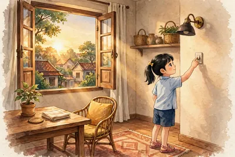
Tắt đèn khi không cần thiết và tận dụng ánh sáng tự nhiên là cách tiết kiệm năng lượng đơn giản nhất ở nhà.
⚡ Nhớ nhanh
Dùng tủ lạnh tiết kiệm bằng cách nào?
Không mở cửa lâu, không cho đồ nóng vào.
⚡ Nhớ nhanh
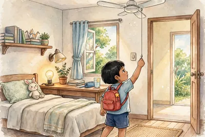
Vì sao nên mở cửa sổ ban ngày?
Để tận dụng ánh sáng tự nhiên, khỏi bật đèn.
⭐ Điểm cần nhớ: Dùng ít năng lượng hơn mà vẫn đủ nhu cầu. • Tắt đèn, quạt khi ra khỏi phòng, dùng đèn LED. • Đi bộ hoặc xe đạp thay cho xe máy. • Sáng như đèn thường mà tốn ít điện hơn.
🧠 Sơ đồ tư duy — nhìn một lượt là nhớ cả bài:
Tiết kiệm năng lượng
Tiết kiệm năng lượngDùng ít năng lượng hơn mà vẫn đủ nhu cầu.
Ở nhà tiết kiệm điện bằng cách nàoTắt đèn, quạt khi ra khỏi phòng, dùng đèn LED.
Đi quãng ngắn nên đi bằng gìĐi bộ hoặc xe đạp thay cho xe máy.
Đèn LED tiết kiệm hơn vì saoSáng như đèn thường mà tốn ít điện hơn.
❓ Câu hỏi gợi nhớ — tự trả lời trong đầu trước, rồi mới bấm xem đáp án nhé:
❓ Tự kiểm tra: Tiết kiệm năng lượng là gì?
✅ Dùng ít năng lượng hơn mà vẫn đủ nhu cầu sinh hoạt và học tập — Tắt đèn khi ra khỏi phòng là tiết kiệm, còn ngồi trong bóng tối học bài thì không phải.
❓ Tự kiểm tra: Ở nhà, tiết kiệm điện bằng cách nào?
✅ Tắt đèn, quạt khi ra khỏi phòng và dùng đèn LED — Đèn LED sáng như đèn thường mà tốn ít điện hơn nhiều.
🃏 Flashcard của bài — bấm vào thẻ để lật mặt sau; nhớ rồi thì bấm ✔ Đã thuộc
Bài 52. Chuyển động nhìn thấy của Mặt Trời. Thiên thể
🎯 Học xong bài này em biết: Mặt Trời mọc hướng nào, lặn hướng nào; Vì sao có ngày và đêm; Trái Đất tự quay một vòng mất bao lâu; Thiên thể; Mặt Trời là sao hay hành tinh.
Mặt Trời mọc hướng nào, lặn hướng nào: Mọc ở đông, lặn ở tây.
Vì sao có ngày và đêm: Vì Trái Đất tự quay quanh trục từ tây sang đông.
Trái Đất tự quay một vòng mất bao lâu: Một ngày, khoảng 24 giờ.
Thiên thể: Sao, hành tinh, vệ tinh, sao chổi trên bầu trời.
Mặt Trời là sao hay hành tinh: Là sao, ngôi sao gần Trái Đất nhất.
Mặt Trời mọc ở hướng đông và lặn ở hướng tây — chuyển động nhìn thấy mỗi ngày.
⚡ Nhớ nhanh
Ban ngày là khi nào?
Khi nơi em ở quay về phía Mặt Trời.
⚡ Nhớ nhanh
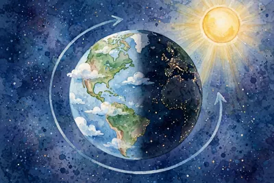
Vì sao ban ngày không thấy sao?
Vì ánh sáng Mặt Trời át ánh sáng yếu của các sao.
⭐ Điểm cần nhớ: Mọc ở đông, lặn ở tây. • Vì Trái Đất tự quay quanh trục từ tây sang đông. • Một ngày, khoảng 24 giờ. • Sao, hành tinh, vệ tinh, sao chổi trên bầu trời.
🧠 Sơ đồ tư duy — nhìn một lượt là nhớ cả bài:
Mặt Trời, thiên thể
Mặt Trời mọc hướng nào, lặn hướng nàoMọc ở đông, lặn ở tây.
Vì sao có ngày và đêmVì Trái Đất tự quay quanh trục từ tây sang đông.
Trái Đất tự quay một vòng mất bao lâuMột ngày, khoảng 24 giờ.
Thiên thểSao, hành tinh, vệ tinh, sao chổi trên bầu trời.
❓ Câu hỏi gợi nhớ — tự trả lời trong đầu trước, rồi mới bấm xem đáp án nhé:
❓ Tự kiểm tra: Mặt Trời mọc ở hướng nào và lặn ở hướng nào?
✅ Mọc ở hướng đông, lặn ở hướng tây — Người xưa dựa vào đó để định hướng khi chưa có la bàn.
❓ Tự kiểm tra: Vì sao ta thấy Mặt Trời mọc rồi lặn mỗi ngày?
✅ Vì Trái Đất tự quay quanh trục của nó từ tây sang đông — Trái Đất quay làm nơi ta đứng lần lượt hướng về phía Mặt Trời rồi quay đi, tạo ra ngày và đêm.
🃏 Flashcard của bài — bấm vào thẻ để lật mặt sau; nhớ rồi thì bấm ✔ Đã thuộc
🎯 Học xong bài này em biết: Mặt Trăng; Mặt Trăng quay quanh Trái Đất mất bao lâu; Mặt Trăng có tự phát sáng không; Trăng tròn là khi nào; Nguyệt thực.
Mặt Trăng: Vệ tinh tự nhiên duy nhất.
Mặt Trăng quay quanh Trái Đất mất bao lâu: Khoảng 27,3 ngày.
Mặt Trăng có tự phát sáng không: Không, Mặt Trăng phản chiếu ánh sáng Mặt Trời.
Trăng tròn là khi nào: Khi ta thấy toàn bộ mặt sáng của Mặt Trăng (ngày rằm).
Nguyệt thực: Trái Đất che ánh sáng Mặt Trời tới Mặt Trăng.
⚡ Nhớ nhanh
Nhật thực là gì?
Mặt Trăng che ánh sáng Mặt Trời tới Trái Đất.
⚡ Nhớ nhanh
Vì sao Mặt Trăng lúc tròn lúc khuyết?
Vì phần sáng ta nhìn thấy thay đổi theo vị trí tương đối của ba thiên thể.
⭐ Điểm cần nhớ: Vệ tinh tự nhiên duy nhất. • Khoảng 27,3 ngày. • Không, Mặt Trăng phản chiếu ánh sáng Mặt Trời. • Khi ta thấy toàn bộ mặt sáng của Mặt Trăng (ngày rằm).
🧠 Sơ đồ tư duy — nhìn một lượt là nhớ cả bài:
Mặt Trăng
Mặt TrăngVệ tinh tự nhiên duy nhất.
Mặt Trăng quay quanh Trái Đất mất bao lâuKhoảng 27,3 ngày.
Mặt Trăng có tự phát sáng khôngKhông, Mặt Trăng phản chiếu ánh sáng Mặt Trời.
Trăng tròn là khi nàoKhi ta thấy toàn bộ mặt sáng của Mặt Trăng (ngày rằm).
❓ Câu hỏi gợi nhớ — tự trả lời trong đầu trước, rồi mới bấm xem đáp án nhé:
❓ Tự kiểm tra: Mặt Trăng là gì của Trái Đất?
✅ Vệ tinh tự nhiên duy nhất của Trái Đất — Vệ tinh là thiên thể quay quanh một hành tinh; Mặt Trăng quay quanh Trái Đất.
❓ Tự kiểm tra: Mặt Trăng quay một vòng quanh Trái Đất hết bao lâu?
✅ Khoảng 27,3 ngày — Gần một tháng, vì vậy ngày xưa người ta dùng Mặt Trăng để tính tháng âm lịch.
Hình minh họa: Mặt Trăng.
🃏 Flashcard của bài — bấm vào thẻ để lật mặt sau; nhớ rồi thì bấm ✔ Đã thuộc
🎯 Học xong bài này em biết: Hệ Mặt Trời gồm những gì; Kể tên 8 hành tinh.; Hành tinh vòng trong khác vòng ngoài thế nào; Hành tinh nào đã biết có sự sống; Sao Thổ nổi bật vì gì.
Hệ Mặt Trời gồm những gì: Mặt Trời và các thiên thể quay quanh nó.
Kể tên 8 hành tinh.: Thủy, Kim, Trái Đất, Hỏa, Mộc, Thổ, Thiên Vương, Hải Vương.
Hành tinh vòng trong khác vòng ngoài thế nào: Vòng trong nhỏ, bằng đá; vòng ngoài lớn, bằng khí.
Hành tinh nào đã biết có sự sống: Trái Đất.
Sao Thổ nổi bật vì gì: Có vành đai lớn bao quanh.
⚡ Nhớ nhanh
Hành tinh lớn nhất là hành tinh nào?
Mộc tinh (sao Mộc).
⚡ Nhớ nhanh
Trái Đất quay quanh Mặt Trời mất bao lâu?
Một năm, khoảng 365 ngày.
⭐ Điểm cần nhớ: Mặt Trời và các thiên thể quay quanh nó. • Thủy, Kim, Trái Đất, Hỏa, Mộc, Thổ, Thiên Vương, Hải Vương. • Vòng trong nhỏ, bằng đá; vòng ngoài lớn, bằng khí. • Trái Đất.
🧠 Sơ đồ tư duy — nhìn một lượt là nhớ cả bài:
Hệ Mặt Trời
Hệ Mặt Trời gồm những gìMặt Trời và các thiên thể quay quanh nó.
Kể tên 8 hành tinh.Thủy, Kim, Trái Đất, Hỏa, Mộc, Thổ, Thiên Vương, Hải Vương.
Hành tinh vòng trong khác vòng ngoài thế nàoVòng trong nhỏ, bằng đá; vòng ngoài lớn, bằng khí.
Hành tinh nào đã biết có sự sốngTrái Đất.
❓ Câu hỏi gợi nhớ — tự trả lời trong đầu trước, rồi mới bấm xem đáp án nhé:
❓ Tự kiểm tra: Hệ Mặt Trời gồm những gì?
✅ Mặt Trời và các thiên thể quay quanh nó: 8 hành tinh, vệ tinh, sao chổi — Mọi thiên thể trong hệ đều chịu lực hấp dẫn của Mặt Trời và quay quanh nó.
❓ Tự kiểm tra: Kể tên 8 hành tinh theo thứ tự từ gần Mặt Trời nhất.
✅ Thủy, Kim, Trái Đất, Hỏa, Mộc, Thổ, Thiên Vương, Hải Vương — Nhớ bằng câu vần: Thủy Kim Trái Hỏa, Mộc Thổ Thiên Hải.
Hình minh họa: Hệ Mặt Trời.
🃏 Flashcard của bài — bấm vào thẻ để lật mặt sau; nhớ rồi thì bấm ✔ Đã thuộc
✅ Xong Bài 54 rồi! Ôn thẻ xong thì đi tiếp 👉 Bài 55: Ngân Hà
Bài 55. Ngân Hà
🎯 Học xong bài này em biết: Ngân Hà; Ngân Hà có hình gì; Hệ Mặt Trời nằm ở đâu trong Ngân Hà; Năm ánh sáng; Ngoài Ngân Hà còn có gì.
Ngân Hà: Thiên hà chứa Hệ Mặt Trời, gồm hàng trăm tỉ ngôi sao.
Ngân Hà có hình gì: Hình xoắn ốc.
Hệ Mặt Trời nằm ở đâu trong Ngân Hà: Ở rìa một nhánh xoắn, cách trung tâm rất xa.
Năm ánh sáng: Quãng đường ánh sáng đi trong một năm, đơn vị đo khoảng cách vũ trụ.
Ngoài Ngân Hà còn có gì: Vô số thiên hà khác.
⚡ Nhớ nhanh
Dải sáng mờ trên trời đêm là gì?
Ánh sáng gộp của vô số sao trong Ngân Hà.
⚡ Nhớ nhanh
Con người tìm hiểu vũ trụ bằng gì?
Kính thiên văn, tàu vũ trụ, vệ tinh.
⭐ Điểm cần nhớ: Thiên hà chứa Hệ Mặt Trời, gồm hàng trăm tỉ ngôi sao. • Hình xoắn ốc. • Ở rìa một nhánh xoắn, cách trung tâm rất xa. • Quãng đường ánh sáng đi trong một năm, đơn vị đo khoảng cách vũ…
🧠 Sơ đồ tư duy — nhìn một lượt là nhớ cả bài:
Ngân Hà
Ngân HàThiên hà chứa Hệ Mặt Trời, gồm hàng trăm tỉ ngôi sao.
Ngân Hà có hình gìHình xoắn ốc.
Hệ Mặt Trời nằm ở đâu trong Ngân HàỞ rìa một nhánh xoắn, cách trung tâm rất xa.
Năm ánh sángQuãng đường ánh sáng đi trong một năm, đơn vị đo khoảng cách vũ trụ.
❓ Câu hỏi gợi nhớ — tự trả lời trong đầu trước, rồi mới bấm xem đáp án nhé:
❓ Tự kiểm tra: Ngân Hà là gì?
✅ Thiên hà chứa Hệ Mặt Trời, gồm hàng trăm tỉ ngôi sao, khí và bụi — Hệ Mặt Trời chỉ là một phần rất nhỏ trong Ngân Hà.
❓ Tự kiểm tra: Nhìn từ xa, Ngân Hà có hình dạng gì?
✅ Hình xoắn ốc, giống chiếc đĩa xoắn — Các ngôi sao trong Ngân Hà tập trung thành nhiều nhánh xoắn quanh trung tâm.
Hình minh họa: Ngân Hà.
🃏 Flashcard của bài — bấm vào thẻ để lật mặt sau; nhớ rồi thì bấm ✔ Đã thuộc
✅ Xong Bài 55 — bài cuối cùng! Xuống Phần Tổng kết để ôn lại toàn bộ nhé 👇
🎓 Phần Tổng kết — Ôn lại cả năm học
Học xong 52 bài rồi! Xem lại sơ đồ tư duy tổng và lật một lượt toàn bộ flashcard để kiểm tra mình đã thuộc hết chưa, rồi mới sang Phần 2 làm trắc nghiệm.
🧠 Sơ đồ tư duy tổng — nhìn một lượt là nhớ cả bài:
KHTN 6 — Cả năm học
Mở đầu & đo lườngnghiên cứu khoa học • an toàn phòng thực hành • kính lúp, kính hiển vi • đo dài, khối lượng, thời gian, nhiệt độ
Chất quanh taba thể & sự chuyển thể • tính chất vật lí/hóa học • vật liệu & 3R
Oxygen – Không khínitrogen 78% • oxygen 21% • an toàn khi cháy xăng
Tế bàođơn vị của sự sống • nhân điều khiển • đơn bào/đa bào • các cấp độ tổ chức
Lựclực & trọng lực • hai lực cân bằng • lực kế (N)
Vật liệu – Nguyên liệunguyên liệu, nhiên liệu, lương thực – thực phẩm • hỗn hợp và cách tách chất
Tế bào (tiếp)cấu tạo tế bào • lớn lên và sinh sản • đơn bào – đa bào
Đa dạng thế giới sốngphân loại, vi khuẩn, virus, nguyên sinh vật, nấm, thực vật, động vật • bảo vệ đa dạng sinh học
Lực trong đời sốngbiểu diễn lực bằng mũi tên • lò xo • trọng lượng • ma sát • lực cản của nước
Năng lượngcác dạng năng lượng • chuyển hóa • hao phí • tái tạo • tiết kiệm
Trái Đất và bầu trờiMặt Trời, Mặt Trăng, Hệ Mặt Trời, Ngân Hà
🃏 Flashcard TỔNG ÔN — toàn bộ thẻ của 52 bài (trạng thái Đã thuộc dùng chung với từng bài)
✍️ Phần 2 — Trắc nghiệm
Học xong Phần 1 rồi thì vào làm bài kiểm tra thử sức nhé.
⚠️ Đáp án trắc nghiệm do người soạn biên soạn từ kiến thức sách giáo khoa, chưa đối chiếu đáp án chính thức. Nếu gặp câu nào thấy chưa đúng, hãy hỏi lại thầy cô nhé.

![Hình gợi nhớ](data:image/svg+xml;utf8,%3Csvg%20viewBox%3D%220%200%20300%20120%22%20style%3D%22width%3A100%25%3Bmax-width%3A400px%3Bheight%3Aauto%3Bdisplay%3Ablock%3Bmargin%3A0%20auto%22%20xmlns%3D%22http%3A%2F%2Fwww.w3.org%2F2000%2Fsvg%22%3E%3Cg%20transform%3D%22translate%2830%2C10%29%20scale%280.9%29%22%3E%3Cpolygon%20points%3D%2224%2C76%2034%2C44%2054%2C32%2074%2C46%2080%2C76%22%20fill%3D%22%2390a4ae%22%20stroke%3D%22%2337474f%22%20stroke-width%3D%222%22%2F%3E%3Cpolygon%20points%3D%2244%2C76%2050%2C52%2062%2C76%22%20fill%3D%22%2378909c%22%2F%3E%3C%2Fg%3E%3Cg%20transform%3D%22translate%28180%2C15%29%20scale%280.7%29%22%3E%3Cpath%20d%3D%22M%2028%2C18%20L%2028%2C62%20Q%2028%2C82%2050%2C82%20Q%2072%2C82%2072%2C62%20L%2072%2C18%20L%2056%2C18%20L%2056%2C58%20Q%2056%2C66%2050%2C66%20Q%2044%2C66%2044%2C58%20L%2044%2C18%20Z%22%20fill%3D%22%23ef5350%22%20stroke%3D%22%23c62828%22%20stroke-width%3D%222%22%2F%3E%3Crect%20x%3D%2228%22%20y%3D%2218%22%20width%3D%2216%22%20height%3D%2212%22%20fill%3D%22%23ffffff%22%2F%3E%3Crect%20x%3D%2256%22%20y%3D%2218%22%20width%3D%2216%22%20height%3D%2212%22%20fill%3D%22%23ffffff%22%2F%3E%3C%2Fg%3E%3C%2Fsvg%3E)

![Hình gợi nhớ](data:image/svg+xml;utf8,%3Csvg%20viewBox%3D%220%200%20300%20120%22%20style%3D%22width%3A100%25%3Bmax-width%3A400px%3Bheight%3Aauto%3Bdisplay%3Ablock%3Bmargin%3A0%20auto%22%20xmlns%3D%22http%3A%2F%2Fwww.w3.org%2F2000%2Fsvg%22%3E%3Cg%20transform%3D%22translate%285%2C10%29%20scale%280.85%29%22%3E%3Cpolygon%20points%3D%2224%2C76%2034%2C44%2054%2C32%2074%2C46%2080%2C76%22%20fill%3D%22%2390a4ae%22%20stroke%3D%22%2337474f%22%20stroke-width%3D%222%22%2F%3E%3Cpolygon%20points%3D%2244%2C76%2050%2C52%2062%2C76%22%20fill%3D%22%2378909c%22%2F%3E%3C%2Fg%3E%3Cg%20transform%3D%22translate%28105%2C10%29%20scale%280.85%29%22%3E%3Cpath%20d%3D%22M%2050%2C12%20Q%2074%2C44%2074%2C62%20A%2024%2C24%200%200%201%2026%2C62%20Q%2026%2C44%2050%2C12%20Z%22%20fill%3D%22%2342a5f5%22%20stroke%3D%22%231565c0%22%20stroke-width%3D%222%22%2F%3E%3C%2Fg%3E%3Cg%20transform%3D%22translate%28205%2C10%29%20scale%280.85%29%22%3E%3Cpath%20d%3D%22M%2050%2C10%20Q%2066%2C30%2070%2C48%20Q%2074%2C66%2062%2C80%20Q%2050%2C90%2038%2C80%20Q%2026%2C66%2030%2C48%20Q%2034%2C30%2050%2C10%20Z%22%20fill%3D%22%23ff9800%22%20stroke%3D%22%23e65100%22%20stroke-width%3D%222%22%2F%3E%3Cpath%20d%3D%22M%2050%2C40%20Q%2058%2C52%2058%2C62%20Q%2058%2C74%2050%2C78%20Q%2042%2C74%2042%2C62%20Q%2042%2C52%2050%2C40%20Z%22%20fill%3D%22%23ffca28%22%2F%3E%3C%2Fg%3E%3C%2Fsvg%3E)


![Hình gợi nhớ](data:image/svg+xml;utf8,%3Csvg%20viewBox%3D%220%200%20300%20120%22%20style%3D%22width%3A100%25%3Bmax-width%3A400px%3Bheight%3Aauto%3Bdisplay%3Ablock%3Bmargin%3A0%20auto%22%20xmlns%3D%22http%3A%2F%2Fwww.w3.org%2F2000%2Fsvg%22%3E%3Cg%20transform%3D%22translate%2810%2C20%29%20scale%280.8%29%22%3E%3Cellipse%20cx%3D%2250%22%20cy%3D%2250%22%20rx%3D%2238%22%20ry%3D%2230%22%20fill%3D%22%23e3f2fd%22%20stroke%3D%22%231565c0%22%20stroke-width%3D%222%22%2F%3E%3Ccircle%20cx%3D%2250%22%20cy%3D%2250%22%20r%3D%2213%22%20fill%3D%22%237e57c2%22%20stroke%3D%22%234527a0%22%20stroke-width%3D%222%22%2F%3E%3Ccircle%20cx%3D%2272%22%20cy%3D%2234%22%20r%3D%225%22%20fill%3D%22%2366bb6a%22%2F%3E%3Ccircle%20cx%3D%2230%22%20cy%3D%2266%22%20r%3D%225%22%20fill%3D%22%23ffa726%22%2F%3E%3C%2Fg%3E%3Cg%20transform%3D%22translate%28110%2C20%29%20scale%280.8%29%22%3E%3Cline%20x1%3D%2214%22%20y1%3D%2250%22%20x2%3D%2276%22%20y2%3D%2250%22%20stroke%3D%22%23e65100%22%20stroke-width%3D%226%22%2F%3E%3Cpolygon%20points%3D%2276%2C50%2058%2C34%2058%2C66%22%20fill%3D%22%23e65100%22%2F%3E%3C%2Fg%3E%3Cg%20transform%3D%22translate%28200%2C20%29%20scale%280.55%29%22%3E%3Cellipse%20cx%3D%2250%22%20cy%3D%2250%22%20rx%3D%2238%22%20ry%3D%2230%22%20fill%3D%22%23e3f2fd%22%20stroke%3D%22%231565c0%22%20stroke-width%3D%222%22%2F%3E%3Ccircle%20cx%3D%2250%22%20cy%3D%2250%22%20r%3D%2213%22%20fill%3D%22%237e57c2%22%20stroke%3D%22%234527a0%22%20stroke-width%3D%222%22%2F%3E%3Ccircle%20cx%3D%2272%22%20cy%3D%2234%22%20r%3D%225%22%20fill%3D%22%2366bb6a%22%2F%3E%3Ccircle%20cx%3D%2230%22%20cy%3D%2266%22%20r%3D%225%22%20fill%3D%22%23ffa726%22%2F%3E%3C%2Fg%3E%3Cg%20transform%3D%22translate%28200%2C62%29%20scale%280.4%29%22%3E%3Cellipse%20cx%3D%2250%22%20cy%3D%2250%22%20rx%3D%2238%22%20ry%3D%2230%22%20fill%3D%22%23e3f2fd%22%20stroke%3D%22%231565c0%22%20stroke-width%3D%222%22%2F%3E%3Ccircle%20cx%3D%2250%22%20cy%3D%2250%22%20r%3D%2213%22%20fill%3D%22%237e57c2%22%20stroke%3D%22%234527a0%22%20stroke-width%3D%222%22%2F%3E%3Ccircle%20cx%3D%2272%22%20cy%3D%2234%22%20r%3D%225%22%20fill%3D%22%2366bb6a%22%2F%3E%3Ccircle%20cx%3D%2230%22%20cy%3D%2266%22%20r%3D%225%22%20fill%3D%22%23ffa726%22%2F%3E%3C%2Fg%3E%3C%2Fsvg%3E)


![Hình gợi nhớ](data:image/svg+xml;utf8,%3Csvg%20viewBox%3D%220%200%20300%20120%22%20style%3D%22width%3A100%25%3Bmax-width%3A400px%3Bheight%3Aauto%3Bdisplay%3Ablock%3Bmargin%3A0%20auto%22%20xmlns%3D%22http%3A%2F%2Fwww.w3.org%2F2000%2Fsvg%22%3E%3Cg%20transform%3D%22translate%28100%2C10%29%20scale%281.0%29%22%3E%3Cellipse%20cx%3D%2250%22%20cy%3D%2250%22%20rx%3D%2230%22%20ry%3D%2238%22%20fill%3D%22%23e3f2fd%22%20stroke%3D%22%231565c0%22%20stroke-width%3D%222%22%2F%3E%3Cg%20stroke%3D%22%231565c0%22%20stroke-width%3D%222%22%20stroke-linecap%3D%22round%22%3E%3Cline%20x1%3D%2222%22%20y1%3D%2234%22%20x2%3D%2212%22%20y2%3D%2228%22%2F%3E%3Cline%20x1%3D%2220%22%20y1%3D%2252%22%20x2%3D%2210%22%20y2%3D%2252%22%2F%3E%3Cline%20x1%3D%2222%22%20y1%3D%2270%22%20x2%3D%2212%22%20y2%3D%2276%22%2F%3E%3Cline%20x1%3D%2278%22%20y1%3D%2234%22%20x2%3D%2288%22%20y2%3D%2228%22%2F%3E%3Cline%20x1%3D%2280%22%20y1%3D%2252%22%20x2%3D%2290%22%20y2%3D%2252%22%2F%3E%3Cline%20x1%3D%2278%22%20y1%3D%2270%22%20x2%3D%2288%22%20y2%3D%2276%22%2F%3E%3C%2Fg%3E%3Ccircle%20cx%3D%2250%22%20cy%3D%2250%22%20r%3D%229%22%20fill%3D%22%237e57c2%22%2F%3E%3C%2Fg%3E%3C%2Fsvg%3E)
![Hình gợi nhớ](data:image/svg+xml;utf8,%3Csvg%20viewBox%3D%220%200%20300%20120%22%20style%3D%22width%3A100%25%3Bmax-width%3A400px%3Bheight%3Aauto%3Bdisplay%3Ablock%3Bmargin%3A0%20auto%22%20xmlns%3D%22http%3A%2F%2Fwww.w3.org%2F2000%2Fsvg%22%3E%3Cg%20transform%3D%22translate%285%2C10%29%20scale%280.9%29%22%3E%3Cellipse%20cx%3D%2250%22%20cy%3D%2250%22%20rx%3D%2238%22%20ry%3D%2230%22%20fill%3D%22%23e3f2fd%22%20stroke%3D%22%231565c0%22%20stroke-width%3D%222%22%2F%3E%3Ccircle%20cx%3D%2250%22%20cy%3D%2250%22%20r%3D%2213%22%20fill%3D%22%237e57c2%22%20stroke%3D%22%234527a0%22%20stroke-width%3D%222%22%2F%3E%3Ccircle%20cx%3D%2272%22%20cy%3D%2234%22%20r%3D%225%22%20fill%3D%22%2366bb6a%22%2F%3E%3Ccircle%20cx%3D%2230%22%20cy%3D%2266%22%20r%3D%225%22%20fill%3D%22%23ffa726%22%2F%3E%3C%2Fg%3E%3Cg%20transform%3D%22translate%28105%2C10%29%20scale%280.9%29%22%3E%3Cellipse%20cx%3D%2250%22%20cy%3D%2250%22%20rx%3D%2238%22%20ry%3D%2230%22%20fill%3D%22%23e3f2fd%22%20stroke%3D%22%231565c0%22%20stroke-width%3D%222%22%2F%3E%3Ccircle%20cx%3D%2250%22%20cy%3D%2250%22%20r%3D%2213%22%20fill%3D%22%237e57c2%22%20stroke%3D%22%234527a0%22%20stroke-width%3D%222%22%2F%3E%3Ccircle%20cx%3D%2272%22%20cy%3D%2234%22%20r%3D%225%22%20fill%3D%22%2366bb6a%22%2F%3E%3Ccircle%20cx%3D%2230%22%20cy%3D%2266%22%20r%3D%225%22%20fill%3D%22%23ffa726%22%2F%3E%3C%2Fg%3E%3Cg%20transform%3D%22translate%28205%2C10%29%20scale%280.9%29%22%3E%3Cellipse%20cx%3D%2250%22%20cy%3D%2250%22%20rx%3D%2238%22%20ry%3D%2230%22%20fill%3D%22%23e3f2fd%22%20stroke%3D%22%231565c0%22%20stroke-width%3D%222%22%2F%3E%3Ccircle%20cx%3D%2250%22%20cy%3D%2250%22%20r%3D%2213%22%20fill%3D%22%237e57c2%22%20stroke%3D%22%234527a0%22%20stroke-width%3D%222%22%2F%3E%3Ccircle%20cx%3D%2272%22%20cy%3D%2234%22%20r%3D%225%22%20fill%3D%22%2366bb6a%22%2F%3E%3Ccircle%20cx%3D%2230%22%20cy%3D%2266%22%20r%3D%225%22%20fill%3D%22%23ffa726%22%2F%3E%3C%2Fg%3E%3C%2Fsvg%3E)


![Hình gợi nhớ](data:image/svg+xml;utf8,%3Csvg%20viewBox%3D%220%200%20300%20120%22%20style%3D%22width%3A100%25%3Bmax-width%3A400px%3Bheight%3Aauto%3Bdisplay%3Ablock%3Bmargin%3A0%20auto%22%20xmlns%3D%22http%3A%2F%2Fwww.w3.org%2F2000%2Fsvg%22%3E%3Cg%20transform%3D%22translate%28100%2C10%29%20scale%281.0%29%22%3E%3Ccircle%20cx%3D%2250%22%20cy%3D%2250%22%20r%3D%2222%22%20fill%3D%22%23ef5350%22%20stroke%3D%22%23c62828%22%20stroke-width%3D%222%22%2F%3E%3Cg%20stroke%3D%22%23c62828%22%20stroke-width%3D%223%22%20stroke-linecap%3D%22round%22%3E%3Cline%20x1%3D%2250%22%20y1%3D%2228%22%20x2%3D%2250%22%20y2%3D%2214%22%2F%3E%3Cline%20x1%3D%2250%22%20y1%3D%2272%22%20x2%3D%2250%22%20y2%3D%2286%22%2F%3E%3Cline%20x1%3D%2228%22%20y1%3D%2250%22%20x2%3D%2214%22%20y2%3D%2250%22%2F%3E%3Cline%20x1%3D%2272%22%20y1%3D%2250%22%20x2%3D%2286%22%20y2%3D%2250%22%2F%3E%3Cline%20x1%3D%2234%22%20y1%3D%2234%22%20x2%3D%2224%22%20y2%3D%2224%22%2F%3E%3Cline%20x1%3D%2266%22%20y1%3D%2266%22%20x2%3D%2276%22%20y2%3D%2276%22%2F%3E%3C%2Fg%3E%3Ccircle%20cx%3D%2250%22%20cy%3D%2250%22%20r%3D%229%22%20fill%3D%22%23ffcdd2%22%2F%3E%3C%2Fg%3E%3C%2Fsvg%3E)


![Hình gợi nhớ](data:image/svg+xml;utf8,%3Csvg%20viewBox%3D%220%200%20300%20120%22%20style%3D%22width%3A100%25%3Bmax-width%3A400px%3Bheight%3Aauto%3Bdisplay%3Ablock%3Bmargin%3A0%20auto%22%20xmlns%3D%22http%3A%2F%2Fwww.w3.org%2F2000%2Fsvg%22%3E%3Cg%20transform%3D%22translate%2830%2C10%29%20scale%281.0%29%22%3E%3Cpath%20d%3D%22M%2050%2C8%20Q%2088%2C30%2082%2C66%20Q%2076%2C92%2050%2C92%20Q%2024%2C92%2018%2C66%20Q%2012%2C30%2050%2C8%20Z%22%20fill%3D%22%2366bb6a%22%20stroke%3D%22%232e7d32%22%20stroke-width%3D%222%22%2F%3E%3Cline%20x1%3D%2250%22%20y1%3D%2214%22%20x2%3D%2250%22%20y2%3D%2288%22%20stroke%3D%22%232e7d32%22%20stroke-width%3D%222%22%2F%3E%3C%2Fg%3E%3Cg%20transform%3D%22translate%28170%2C10%29%20scale%281.0%29%22%3E%3Ccircle%20cx%3D%2250%22%20cy%3D%2250%22%20r%3D%2222%22%20fill%3D%22%23ffca28%22%20stroke%3D%22%23e65100%22%20stroke-width%3D%222%22%2F%3E%3Cg%20stroke%3D%22%23e65100%22%20stroke-width%3D%223%22%20stroke-linecap%3D%22round%22%3E%3Cline%20x1%3D%2250%22%20y1%3D%228%22%20x2%3D%2250%22%20y2%3D%2218%22%2F%3E%3Cline%20x1%3D%2250%22%20y1%3D%2282%22%20x2%3D%2250%22%20y2%3D%2292%22%2F%3E%3Cline%20x1%3D%228%22%20y1%3D%2250%22%20x2%3D%2218%22%20y2%3D%2250%22%2F%3E%3Cline%20x1%3D%2282%22%20y1%3D%2250%22%20x2%3D%2292%22%20y2%3D%2250%22%2F%3E%3Cline%20x1%3D%2220%22%20y1%3D%2220%22%20x2%3D%2227%22%20y2%3D%2227%22%2F%3E%3Cline%20x1%3D%2273%22%20y1%3D%2273%22%20x2%3D%2280%22%20y2%3D%2280%22%2F%3E%3Cline%20x1%3D%2280%22%20y1%3D%2220%22%20x2%3D%2273%22%20y2%3D%2227%22%2F%3E%3Cline%20x1%3D%2227%22%20y1%3D%2273%22%20x2%3D%2220%22%20y2%3D%2280%22%2F%3E%3C%2Fg%3E%3C%2Fg%3E%3C%2Fsvg%3E)
![Hình gợi nhớ](data:image/svg+xml;utf8,%3Csvg%20viewBox%3D%220%200%20300%20120%22%20style%3D%22width%3A100%25%3Bmax-width%3A400px%3Bheight%3Aauto%3Bdisplay%3Ablock%3Bmargin%3A0%20auto%22%20xmlns%3D%22http%3A%2F%2Fwww.w3.org%2F2000%2Fsvg%22%3E%3Cg%20transform%3D%22translate%2810%2C10%29%20scale%280.9%29%22%3E%3Cpath%20d%3D%22M%2050%2C8%20Q%2088%2C30%2082%2C66%20Q%2076%2C92%2050%2C92%20Q%2024%2C92%2018%2C66%20Q%2012%2C30%2050%2C8%20Z%22%20fill%3D%22%2366bb6a%22%20stroke%3D%22%232e7d32%22%20stroke-width%3D%222%22%2F%3E%3Cline%20x1%3D%2250%22%20y1%3D%2214%22%20x2%3D%2250%22%20y2%3D%2288%22%20stroke%3D%22%232e7d32%22%20stroke-width%3D%222%22%2F%3E%3C%2Fg%3E%3Cg%20transform%3D%22translate%28110%2C10%29%20scale%280.9%29%22%3E%3Ccircle%20cx%3D%2250%22%20cy%3D%2250%22%20r%3D%2222%22%20fill%3D%22%23ffca28%22%20stroke%3D%22%23e65100%22%20stroke-width%3D%222%22%2F%3E%3Cg%20stroke%3D%22%23e65100%22%20stroke-width%3D%223%22%20stroke-linecap%3D%22round%22%3E%3Cline%20x1%3D%2250%22%20y1%3D%228%22%20x2%3D%2250%22%20y2%3D%2218%22%2F%3E%3Cline%20x1%3D%2250%22%20y1%3D%2282%22%20x2%3D%2250%22%20y2%3D%2292%22%2F%3E%3Cline%20x1%3D%228%22%20y1%3D%2250%22%20x2%3D%2218%22%20y2%3D%2250%22%2F%3E%3Cline%20x1%3D%2282%22%20y1%3D%2250%22%20x2%3D%2292%22%20y2%3D%2250%22%2F%3E%3Cline%20x1%3D%2220%22%20y1%3D%2220%22%20x2%3D%2227%22%20y2%3D%2227%22%2F%3E%3Cline%20x1%3D%2273%22%20y1%3D%2273%22%20x2%3D%2280%22%20y2%3D%2280%22%2F%3E%3Cline%20x1%3D%2280%22%20y1%3D%2220%22%20x2%3D%2273%22%20y2%3D%2227%22%2F%3E%3Cline%20x1%3D%2227%22%20y1%3D%2273%22%20x2%3D%2220%22%20y2%3D%2280%22%2F%3E%3C%2Fg%3E%3C%2Fg%3E%3Cg%20transform%3D%22translate%28215%2C15%29%20scale%280.8%29%22%3E%3Cpath%20d%3D%22M%2050%2C12%20Q%2074%2C44%2074%2C62%20A%2024%2C24%200%200%201%2026%2C62%20Q%2026%2C44%2050%2C12%20Z%22%20fill%3D%22%2342a5f5%22%20stroke%3D%22%231565c0%22%20stroke-width%3D%222%22%2F%3E%3C%2Fg%3E%3C%2Fsvg%3E)
![Hình gợi nhớ](data:image/svg+xml;utf8,%3Csvg%20viewBox%3D%220%200%20300%20120%22%20style%3D%22width%3A100%25%3Bmax-width%3A400px%3Bheight%3Aauto%3Bdisplay%3Ablock%3Bmargin%3A0%20auto%22%20xmlns%3D%22http%3A%2F%2Fwww.w3.org%2F2000%2Fsvg%22%3E%3Cg%20transform%3D%22translate%28100%2C10%29%20scale%281.0%29%22%3E%3Cellipse%20cx%3D%2228%22%20cy%3D%2278%22%20rx%3D%2220%22%20ry%3D%2210%22%20fill%3D%22%2366bb6a%22%2F%3E%3Cellipse%20cx%3D%2258%22%20cy%3D%2282%22%20rx%3D%2222%22%20ry%3D%229%22%20fill%3D%22%2343a047%22%2F%3E%3Cellipse%20cx%3D%2280%22%20cy%3D%2276%22%20rx%3D%2214%22%20ry%3D%228%22%20fill%3D%22%2366bb6a%22%2F%3E%3Cg%20stroke%3D%22%232e7d32%22%20stroke-width%3D%222%22%20stroke-linecap%3D%22round%22%3E%3Cline%20x1%3D%2228%22%20y1%3D%2270%22%20x2%3D%2228%22%20y2%3D%2258%22%2F%3E%3Cline%20x1%3D%2258%22%20y1%3D%2274%22%20x2%3D%2258%22%20y2%3D%2260%22%2F%3E%3Cline%20x1%3D%2280%22%20y1%3D%2268%22%20x2%3D%2280%22%20y2%3D%2258%22%2F%3E%3C%2Fg%3E%3C%2Fg%3E%3Cg%20stroke%3D%22%23c62828%22%20stroke-width%3D%226%22%20stroke-linecap%3D%22round%22%3E%3Cline%20x1%3D%22125%22%20y1%3D%2235%22%20x2%3D%22175%22%20y2%3D%2285%22%2F%3E%3Cline%20x1%3D%22175%22%20y1%3D%2235%22%20x2%3D%22125%22%20y2%3D%2285%22%2F%3E%3C%2Fg%3E%3C%2Fsvg%3E)
![Hình gợi nhớ](data:image/svg+xml;utf8,%3Csvg%20viewBox%3D%220%200%20300%20120%22%20style%3D%22width%3A100%25%3Bmax-width%3A400px%3Bheight%3Aauto%3Bdisplay%3Ablock%3Bmargin%3A0%20auto%22%20xmlns%3D%22http%3A%2F%2Fwww.w3.org%2F2000%2Fsvg%22%3E%3Cg%20transform%3D%22translate%28100%2C10%29%20scale%281.0%29%22%3E%3Cline%20x1%3D%2250%22%20y1%3D%2292%22%20x2%3D%2250%22%20y2%3D%2212%22%20stroke%3D%22%232e7d32%22%20stroke-width%3D%223%22%2F%3E%3Cg%20stroke%3D%22%2343a047%22%20stroke-width%3D%223%22%20stroke-linecap%3D%22round%22%3E%3Cline%20x1%3D%2250%22%20y1%3D%2226%22%20x2%3D%2230%22%20y2%3D%2216%22%2F%3E%3Cline%20x1%3D%2250%22%20y1%3D%2226%22%20x2%3D%2270%22%20y2%3D%2216%22%2F%3E%3Cline%20x1%3D%2250%22%20y1%3D%2242%22%20x2%3D%2228%22%20y2%3D%2232%22%2F%3E%3Cline%20x1%3D%2250%22%20y1%3D%2242%22%20x2%3D%2272%22%20y2%3D%2232%22%2F%3E%3Cline%20x1%3D%2250%22%20y1%3D%2258%22%20x2%3D%2230%22%20y2%3D%2248%22%2F%3E%3Cline%20x1%3D%2250%22%20y1%3D%2258%22%20x2%3D%2270%22%20y2%3D%2248%22%2F%3E%3C%2Fg%3E%3C%2Fg%3E%3Cg%20fill%3D%22%23ffca28%22%3E%3Ccircle%20cx%3D%22120%22%20cy%3D%2230%22%20r%3D%224%22%2F%3E%3Ccircle%20cx%3D%22180%22%20cy%3D%2230%22%20r%3D%224%22%2F%3E%3Ccircle%20cx%3D%22120%22%20cy%3D%2270%22%20r%3D%224%22%2F%3E%3Ccircle%20cx%3D%22180%22%20cy%3D%2270%22%20r%3D%224%22%2F%3E%3C%2Fg%3E%3C%2Fsvg%3E)
![Hình gợi nhớ](data:image/svg+xml;utf8,%3Csvg%20viewBox%3D%220%200%20300%20120%22%20style%3D%22width%3A100%25%3Bmax-width%3A400px%3Bheight%3Aauto%3Bdisplay%3Ablock%3Bmargin%3A0%20auto%22%20xmlns%3D%22http%3A%2F%2Fwww.w3.org%2F2000%2Fsvg%22%3E%3Cg%20transform%3D%22translate%2830%2C10%29%20scale%281.0%29%22%3E%3Cellipse%20cx%3D%2246%22%20cy%3D%2250%22%20rx%3D%2228%22%20ry%3D%2218%22%20fill%3D%22%2342a5f5%22%20stroke%3D%22%231565c0%22%20stroke-width%3D%222%22%2F%3E%3Cpolygon%20points%3D%2270%2C50%2090%2C34%2090%2C66%22%20fill%3D%22%2342a5f5%22%20stroke%3D%22%231565c0%22%20stroke-width%3D%222%22%2F%3E%3Ccircle%20cx%3D%2230%22%20cy%3D%2246%22%20r%3D%224%22%20fill%3D%22%23333%22%2F%3E%3C%2Fg%3E%3Cg%20transform%3D%22translate%28170%2C10%29%20scale%281.0%29%22%3E%3Cellipse%20cx%3D%2248%22%20cy%3D%2252%22%20rx%3D%2226%22%20ry%3D%2217%22%20fill%3D%22%2342a5f5%22%20stroke%3D%22%231565c0%22%20stroke-width%3D%222%22%2F%3E%3Ccircle%20cx%3D%2270%22%20cy%3D%2240%22%20r%3D%2211%22%20fill%3D%22%2342a5f5%22%20stroke%3D%22%231565c0%22%20stroke-width%3D%222%22%2F%3E%3Cpolygon%20points%3D%2280%2C40%2092%2C44%2080%2C48%22%20fill%3D%22%23ff9800%22%2F%3E%3Cline%20x1%3D%2240%22%20y1%3D%2268%22%20x2%3D%2236%22%20y2%3D%2284%22%20stroke%3D%22%23e65100%22%20stroke-width%3D%223%22%2F%3E%3Cline%20x1%3D%2256%22%20y1%3D%2268%22%20x2%3D%2260%22%20y2%3D%2284%22%20stroke%3D%22%23e65100%22%20stroke-width%3D%223%22%2F%3E%3C%2Fg%3E%3C%2Fsvg%3E)
![Hình gợi nhớ](data:image/svg+xml;utf8,%3Csvg%20viewBox%3D%220%200%20300%20120%22%20style%3D%22width%3A100%25%3Bmax-width%3A400px%3Bheight%3Aauto%3Bdisplay%3Ablock%3Bmargin%3A0%20auto%22%20xmlns%3D%22http%3A%2F%2Fwww.w3.org%2F2000%2Fsvg%22%3E%3Cg%20transform%3D%22translate%285%2C15%29%20scale%280.8%29%22%3E%3Cpath%20d%3D%22M%2014%2C66%20Q%2032%2C30%2050%2C60%20Q%2068%2C90%2086%2C44%22%20fill%3D%22none%22%20stroke%3D%22%23f48fb1%22%20stroke-width%3D%2210%22%20stroke-linecap%3D%22round%22%2F%3E%3C%2Fg%3E%3Cg%20transform%3D%22translate%28105%2C15%29%20scale%280.8%29%22%3E%3Cpath%20d%3D%22M%2050%2C88%20Q%2018%2C88%2018%2C56%20Q%2018%2C22%2050%2C22%20Q%2078%2C22%2078%2C50%20Q%2078%2C70%2060%2C70%20Q%2046%2C70%2046%2C56%22%20fill%3D%22none%22%20stroke%3D%22%23ff9800%22%20stroke-width%3D%225%22%20stroke-linecap%3D%22round%22%2F%3E%3Ccircle%20cx%3D%2250%22%20cy%3D%2256%22%20r%3D%225%22%20fill%3D%22%23ff9800%22%2F%3E%3C%2Fg%3E%3Cg%20transform%3D%22translate%28205%2C15%29%20scale%280.8%29%22%3E%3Cellipse%20cx%3D%2250%22%20cy%3D%2250%22%20rx%3D%2214%22%20ry%3D%2222%22%20fill%3D%22%238d6e63%22%20stroke%3D%22%234e342e%22%20stroke-width%3D%222%22%2F%3E%3Ccircle%20cx%3D%2250%22%20cy%3D%2222%22%20r%3D%2211%22%20fill%3D%22%238d6e63%22%20stroke%3D%22%234e342e%22%20stroke-width%3D%222%22%2F%3E%3Cg%20stroke%3D%22%234e342e%22%20stroke-width%3D%223%22%20stroke-linecap%3D%22round%22%3E%3Cline%20x1%3D%2238%22%20y1%3D%2242%22%20x2%3D%2220%22%20y2%3D%2234%22%2F%3E%3Cline%20x1%3D%2238%22%20y1%3D%2256%22%20x2%3D%2218%22%20y2%3D%2256%22%2F%3E%3Cline%20x1%3D%2238%22%20y1%3D%2268%22%20x2%3D%2222%22%20y2%3D%2280%22%2F%3E%3Cline%20x1%3D%2262%22%20y1%3D%2242%22%20x2%3D%2280%22%20y2%3D%2234%22%2F%3E%3Cline%20x1%3D%2262%22%20y1%3D%2256%22%20x2%3D%2282%22%20y2%3D%2256%22%2F%3E%3Cline%20x1%3D%2262%22%20y1%3D%2268%22%20x2%3D%2278%22%20y2%3D%2280%22%2F%3E%3C%2Fg%3E%3C%2Fg%3E%3C%2Fsvg%3E)

![Hình gợi nhớ](data:image/svg+xml;utf8,%3Csvg%20viewBox%3D%220%200%20300%20120%22%20style%3D%22width%3A100%25%3Bmax-width%3A400px%3Bheight%3Aauto%3Bdisplay%3Ablock%3Bmargin%3A0%20auto%22%20xmlns%3D%22http%3A%2F%2Fwww.w3.org%2F2000%2Fsvg%22%3E%3Cg%20transform%3D%22translate%2830%2C10%29%20scale%281.0%29%22%3E%3Cellipse%20cx%3D%2248%22%20cy%3D%2252%22%20rx%3D%2226%22%20ry%3D%2217%22%20fill%3D%22%2342a5f5%22%20stroke%3D%22%231565c0%22%20stroke-width%3D%222%22%2F%3E%3Ccircle%20cx%3D%2270%22%20cy%3D%2240%22%20r%3D%2211%22%20fill%3D%22%2342a5f5%22%20stroke%3D%22%231565c0%22%20stroke-width%3D%222%22%2F%3E%3Cpolygon%20points%3D%2280%2C40%2092%2C44%2080%2C48%22%20fill%3D%22%23ff9800%22%2F%3E%3Cline%20x1%3D%2240%22%20y1%3D%2268%22%20x2%3D%2236%22%20y2%3D%2284%22%20stroke%3D%22%23e65100%22%20stroke-width%3D%223%22%2F%3E%3Cline%20x1%3D%2256%22%20y1%3D%2268%22%20x2%3D%2260%22%20y2%3D%2284%22%20stroke%3D%22%23e65100%22%20stroke-width%3D%223%22%2F%3E%3C%2Fg%3E%3Cg%20transform%3D%22translate%28170%2C10%29%20scale%281.0%29%22%3E%3Cpath%20d%3D%22M%208%2C52%20Q%2028%2C22%2050%2C48%20Q%2072%2C22%2092%2C52%20Q%2072%2C44%2050%2C62%20Q%2028%2C44%208%2C52%20Z%22%20fill%3D%22%2337474f%22%20stroke%3D%22%23111%22%20stroke-width%3D%222%22%2F%3E%3Ccircle%20cx%3D%2250%22%20cy%3D%2248%22%20r%3D%227%22%20fill%3D%22%2337474f%22%2F%3E%3C%2Fg%3E%3C%2Fsvg%3E)
![Hình gợi nhớ](data:image/svg+xml;utf8,%3Csvg%20viewBox%3D%220%200%20300%20120%22%20style%3D%22width%3A100%25%3Bmax-width%3A400px%3Bheight%3Aauto%3Bdisplay%3Ablock%3Bmargin%3A0%20auto%22%20xmlns%3D%22http%3A%2F%2Fwww.w3.org%2F2000%2Fsvg%22%3E%3Cg%20transform%3D%22translate%2815%2C32%29%20scale%280.55%29%22%3E%3Cpath%20d%3D%22M%2050%2C8%20Q%2088%2C30%2082%2C66%20Q%2076%2C92%2050%2C92%20Q%2024%2C92%2018%2C66%20Q%2012%2C30%2050%2C8%20Z%22%20fill%3D%22%2366bb6a%22%20stroke%3D%22%232e7d32%22%20stroke-width%3D%222%22%2F%3E%3Cline%20x1%3D%2250%22%20y1%3D%2214%22%20x2%3D%2250%22%20y2%3D%2288%22%20stroke%3D%22%232e7d32%22%20stroke-width%3D%222%22%2F%3E%3C%2Fg%3E%3Cg%20transform%3D%22translate%2880%2C32%29%20scale%280.55%29%22%3E%3Cellipse%20cx%3D%2246%22%20cy%3D%2250%22%20rx%3D%2228%22%20ry%3D%2218%22%20fill%3D%22%2342a5f5%22%20stroke%3D%22%231565c0%22%20stroke-width%3D%222%22%2F%3E%3Cpolygon%20points%3D%2270%2C50%2090%2C34%2090%2C66%22%20fill%3D%22%2342a5f5%22%20stroke%3D%22%231565c0%22%20stroke-width%3D%222%22%2F%3E%3Ccircle%20cx%3D%2230%22%20cy%3D%2246%22%20r%3D%224%22%20fill%3D%22%23333%22%2F%3E%3C%2Fg%3E%3Cg%20transform%3D%22translate%28145%2C32%29%20scale%280.55%29%22%3E%3Cellipse%20cx%3D%2248%22%20cy%3D%2252%22%20rx%3D%2226%22%20ry%3D%2217%22%20fill%3D%22%2342a5f5%22%20stroke%3D%22%231565c0%22%20stroke-width%3D%222%22%2F%3E%3Ccircle%20cx%3D%2270%22%20cy%3D%2240%22%20r%3D%2211%22%20fill%3D%22%2342a5f5%22%20stroke%3D%22%231565c0%22%20stroke-width%3D%222%22%2F%3E%3Cpolygon%20points%3D%2280%2C40%2092%2C44%2080%2C48%22%20fill%3D%22%23ff9800%22%2F%3E%3Cline%20x1%3D%2240%22%20y1%3D%2268%22%20x2%3D%2236%22%20y2%3D%2284%22%20stroke%3D%22%23e65100%22%20stroke-width%3D%223%22%2F%3E%3Cline%20x1%3D%2256%22%20y1%3D%2268%22%20x2%3D%2260%22%20y2%3D%2284%22%20stroke%3D%22%23e65100%22%20stroke-width%3D%223%22%2F%3E%3C%2Fg%3E%3Cg%20transform%3D%22translate%28210%2C32%29%20scale%280.55%29%22%3E%3Cg%20fill%3D%22%23f48fb1%22%20stroke%3D%22%23c62828%22%20stroke-width%3D%221.5%22%3E%3Ccircle%20cx%3D%2250%22%20cy%3D%2224%22%20r%3D%2212%22%2F%3E%3Ccircle%20cx%3D%2250%22%20cy%3D%2276%22%20r%3D%2212%22%2F%3E%3Ccircle%20cx%3D%2224%22%20cy%3D%2250%22%20r%3D%2212%22%2F%3E%3Ccircle%20cx%3D%2276%22%20cy%3D%2250%22%20r%3D%2212%22%2F%3E%3C%2Fg%3E%3Ccircle%20cx%3D%2250%22%20cy%3D%2250%22%20r%3D%2211%22%20fill%3D%22%23ffca28%22%20stroke%3D%22%23e65100%22%20stroke-width%3D%222%22%2F%3E%3C%2Fg%3E%3C%2Fsvg%3E)


![Hình gợi nhớ](data:image/svg+xml;utf8,%3Csvg%20viewBox%3D%220%200%20300%20120%22%20style%3D%22width%3A100%25%3Bmax-width%3A400px%3Bheight%3Aauto%3Bdisplay%3Ablock%3Bmargin%3A0%20auto%22%20xmlns%3D%22http%3A%2F%2Fwww.w3.org%2F2000%2Fsvg%22%3E%3Cg%20transform%3D%22translate%2840%2C10%29%20scale%280.8%29%22%3E%3Ccircle%20cx%3D%2250%22%20cy%3D%2250%22%20r%3D%2234%22%20fill%3D%22%2342a5f5%22%20stroke%3D%22%231565c0%22%20stroke-width%3D%222%22%2F%3E%3Cellipse%20cx%3D%2238%22%20cy%3D%2242%22%20rx%3D%2213%22%20ry%3D%229%22%20fill%3D%22%2366bb6a%22%2F%3E%3Cellipse%20cx%3D%2262%22%20cy%3D%2260%22%20rx%3D%2214%22%20ry%3D%229%22%20fill%3D%22%2366bb6a%22%2F%3E%3Cellipse%20cx%3D%2246%22%20cy%3D%2270%22%20rx%3D%229%22%20ry%3D%226%22%20fill%3D%22%2366bb6a%22%2F%3E%3C%2Fg%3E%3Cg%20transform%3D%22translate%28190%2C10%29%20scale%280.8%29%22%3E%3Ccircle%20cx%3D%2250%22%20cy%3D%2256%22%20r%3D%2224%22%20fill%3D%22%23ef5350%22%20stroke%3D%22%23c62828%22%20stroke-width%3D%222%22%2F%3E%3Cpath%20d%3D%22M%2050%2C34%20Q%2052%2C20%2064%2C16%22%20fill%3D%22none%22%20stroke%3D%22%232e7d32%22%20stroke-width%3D%223%22%2F%3E%3Cellipse%20cx%3D%2266%22%20cy%3D%2220%22%20rx%3D%2210%22%20ry%3D%225%22%20fill%3D%22%2366bb6a%22%2F%3E%3C%2Fg%3E%3Cline%20x1%3D%22230%22%20y1%3D%2295%22%20x2%3D%22230%22%20y2%3D%22115%22%20stroke%3D%22%23c62828%22%20stroke-width%3D%224%22%2F%3E%3Cpolygon%20points%3D%22230%2C115%20222%2C103%20238%2C103%22%20fill%3D%22%23c62828%22%2F%3E%3C%2Fsvg%3E)


![Hình gợi nhớ](data:image/svg+xml;utf8,%3Csvg%20viewBox%3D%220%200%20300%20120%22%20style%3D%22width%3A100%25%3Bmax-width%3A400px%3Bheight%3Aauto%3Bdisplay%3Ablock%3Bmargin%3A0%20auto%22%20xmlns%3D%22http%3A%2F%2Fwww.w3.org%2F2000%2Fsvg%22%3E%3Cpath%20d%3D%22M%2060%2C80%20Q%2090%2C68%20120%2C80%20Q%20150%2C92%20180%2C80%20Q%20210%2C68%20240%2C80%22%20fill%3D%22none%22%20stroke%3D%22%2342a5f5%22%20stroke-width%3D%224%22%2F%3E%3Cpath%20d%3D%22M%2060%2C96%20Q%2090%2C84%20120%2C96%20Q%20150%2C108%20180%2C96%20Q%20210%2C84%20240%2C96%22%20fill%3D%22none%22%20stroke%3D%22%2342a5f5%22%20stroke-width%3D%224%22%2F%3E%3Cg%20transform%3D%22translate%28110%2C5%29%20scale%280.8%29%22%3E%3Cellipse%20cx%3D%2246%22%20cy%3D%2250%22%20rx%3D%2228%22%20ry%3D%2218%22%20fill%3D%22%2342a5f5%22%20stroke%3D%22%231565c0%22%20stroke-width%3D%222%22%2F%3E%3Cpolygon%20points%3D%2270%2C50%2090%2C34%2090%2C66%22%20fill%3D%22%2342a5f5%22%20stroke%3D%22%231565c0%22%20stroke-width%3D%222%22%2F%3E%3Ccircle%20cx%3D%2230%22%20cy%3D%2246%22%20r%3D%224%22%20fill%3D%22%23333%22%2F%3E%3C%2Fg%3E%3Cline%20x1%3D%22110%22%20y1%3D%2245%22%20x2%3D%2280%22%20y2%3D%2245%22%20stroke%3D%22%23c62828%22%20stroke-width%3D%224%22%2F%3E%3Cpolygon%20points%3D%2280%2C45%2094%2C37%2094%2C53%22%20fill%3D%22%23c62828%22%2F%3E%3C%2Fsvg%3E)
![Hình gợi nhớ](data:image/svg+xml;utf8,%3Csvg%20viewBox%3D%220%200%20300%20120%22%20style%3D%22width%3A100%25%3Bmax-width%3A400px%3Bheight%3Aauto%3Bdisplay%3Ablock%3Bmargin%3A0%20auto%22%20xmlns%3D%22http%3A%2F%2Fwww.w3.org%2F2000%2Fsvg%22%3E%3Cg%20transform%3D%22translate%2890%2C10%29%20scale%281.0%29%22%3E%3Cellipse%20cx%3D%2246%22%20cy%3D%2250%22%20rx%3D%2228%22%20ry%3D%2218%22%20fill%3D%22%2342a5f5%22%20stroke%3D%22%231565c0%22%20stroke-width%3D%222%22%2F%3E%3Cpolygon%20points%3D%2270%2C50%2090%2C34%2090%2C66%22%20fill%3D%22%2342a5f5%22%20stroke%3D%22%231565c0%22%20stroke-width%3D%222%22%2F%3E%3Ccircle%20cx%3D%2230%22%20cy%3D%2246%22%20r%3D%224%22%20fill%3D%22%23333%22%2F%3E%3C%2Fg%3E%3Cg%20stroke%3D%22%2390a4ae%22%20stroke-width%3D%223%22%20stroke-linecap%3D%22round%22%3E%3Cline%20x1%3D%2240%22%20y1%3D%2240%22%20x2%3D%2270%22%20y2%3D%2240%22%2F%3E%3Cline%20x1%3D%2230%22%20y1%3D%2260%22%20x2%3D%2262%22%20y2%3D%2260%22%2F%3E%3Cline%20x1%3D%2240%22%20y1%3D%2280%22%20x2%3D%2270%22%20y2%3D%2280%22%2F%3E%3C%2Fg%3E%3C%2Fsvg%3E)


![Hình gợi nhớ](data:image/svg+xml;utf8,%3Csvg%20viewBox%3D%220%200%20300%20120%22%20style%3D%22width%3A100%25%3Bmax-width%3A400px%3Bheight%3Aauto%3Bdisplay%3Ablock%3Bmargin%3A0%20auto%22%20xmlns%3D%22http%3A%2F%2Fwww.w3.org%2F2000%2Fsvg%22%3E%3Cg%20transform%3D%22translate%2830%2C10%29%20scale%281.0%29%22%3E%3Crect%20x%3D%2216%22%20y%3D%2234%22%20width%3D%2258%22%20height%3D%2232%22%20rx%3D%224%22%20fill%3D%22%23e3f2fd%22%20stroke%3D%22%231565c0%22%20stroke-width%3D%222%22%2F%3E%3Crect%20x%3D%2274%22%20y%3D%2244%22%20width%3D%228%22%20height%3D%2212%22%20fill%3D%22%231565c0%22%2F%3E%3Crect%20x%3D%2222%22%20y%3D%2240%22%20width%3D%2230%22%20height%3D%2220%22%20fill%3D%22%2366bb6a%22%2F%3E%3C%2Fg%3E%3Cg%20transform%3D%22translate%28170%2C10%29%20scale%281.0%29%22%3E%3Ccircle%20cx%3D%2250%22%20cy%3D%2242%22%20r%3D%2224%22%20fill%3D%22%23fff9c4%22%20stroke%3D%22%23e65100%22%20stroke-width%3D%222%22%2F%3E%3Cpath%20d%3D%22M%2042%2C62%20L%2058%2C62%20L%2056%2C74%20L%2044%2C74%20Z%22%20fill%3D%22%2378909c%22%2F%3E%3Cline%20x1%3D%2240%22%20y1%3D%2280%22%20x2%3D%2260%22%20y2%3D%2280%22%20stroke%3D%22%2337474f%22%20stroke-width%3D%223%22%2F%3E%3C%2Fg%3E%3C%2Fsvg%3E)
![Hình gợi nhớ](data:image/svg+xml;utf8,%3Csvg%20viewBox%3D%220%200%20300%20120%22%20style%3D%22width%3A100%25%3Bmax-width%3A400px%3Bheight%3Aauto%3Bdisplay%3Ablock%3Bmargin%3A0%20auto%22%20xmlns%3D%22http%3A%2F%2Fwww.w3.org%2F2000%2Fsvg%22%3E%3Cg%20transform%3D%22translate%28100%2C10%29%20scale%281.0%29%22%3E%3Ccircle%20cx%3D%2250%22%20cy%3D%2250%22%20r%3D%2220%22%20fill%3D%22%23eceff1%22%20stroke%3D%22%2337474f%22%20stroke-width%3D%222%22%2F%3E%3Ccircle%20cx%3D%2250%22%20cy%3D%2250%22%20r%3D%228%22%20fill%3D%22%2378909c%22%2F%3E%3Cg%20stroke%3D%22%2337474f%22%20stroke-width%3D%224%22%20stroke-linecap%3D%22round%22%3E%3Cline%20x1%3D%2250%22%20y1%3D%2222%22%20x2%3D%2250%22%20y2%3D%2230%22%2F%3E%3Cline%20x1%3D%2250%22%20y1%3D%2270%22%20x2%3D%2250%22%20y2%3D%2278%22%2F%3E%3Cline%20x1%3D%2222%22%20y1%3D%2250%22%20x2%3D%2230%22%20y2%3D%2250%22%2F%3E%3Cline%20x1%3D%2270%22%20y1%3D%2250%22%20x2%3D%2278%22%20y2%3D%2250%22%2F%3E%3Cline%20x1%3D%2230%22%20y1%3D%2230%22%20x2%3D%2236%22%20y2%3D%2236%22%2F%3E%3Cline%20x1%3D%2264%22%20y1%3D%2264%22%20x2%3D%2270%22%20y2%3D%2270%22%2F%3E%3Cline%20x1%3D%2270%22%20y1%3D%2230%22%20x2%3D%2264%22%20y2%3D%2236%22%2F%3E%3Cline%20x1%3D%2236%22%20y1%3D%2264%22%20x2%3D%2230%22%20y2%3D%2270%22%2F%3E%3C%2Fg%3E%3C%2Fg%3E%3Cpath%20d%3D%22M%20230%2C30%20Q%20236%2C20%20230%2C10%20M%20248%2C34%20Q%20254%2C24%20248%2C14%22%20fill%3D%22none%22%20stroke%3D%22%23ff9800%22%20stroke-width%3D%223%22%20stroke-linecap%3D%22round%22%2F%3E%3C%2Fsvg%3E)
![Hình gợi nhớ](data:image/svg+xml;utf8,%3Csvg%20viewBox%3D%220%200%20300%20120%22%20style%3D%22width%3A100%25%3Bmax-width%3A400px%3Bheight%3Aauto%3Bdisplay%3Ablock%3Bmargin%3A0%20auto%22%20xmlns%3D%22http%3A%2F%2Fwww.w3.org%2F2000%2Fsvg%22%3E%3Cg%20transform%3D%22translate%28100%2C10%29%20scale%281.0%29%22%3E%3Ccircle%20cx%3D%2250%22%20cy%3D%2250%22%20r%3D%2220%22%20fill%3D%22%23eceff1%22%20stroke%3D%22%2337474f%22%20stroke-width%3D%222%22%2F%3E%3Ccircle%20cx%3D%2250%22%20cy%3D%2250%22%20r%3D%228%22%20fill%3D%22%2378909c%22%2F%3E%3Cg%20stroke%3D%22%2337474f%22%20stroke-width%3D%224%22%20stroke-linecap%3D%22round%22%3E%3Cline%20x1%3D%2250%22%20y1%3D%2222%22%20x2%3D%2250%22%20y2%3D%2230%22%2F%3E%3Cline%20x1%3D%2250%22%20y1%3D%2270%22%20x2%3D%2250%22%20y2%3D%2278%22%2F%3E%3Cline%20x1%3D%2222%22%20y1%3D%2250%22%20x2%3D%2230%22%20y2%3D%2250%22%2F%3E%3Cline%20x1%3D%2270%22%20y1%3D%2250%22%20x2%3D%2278%22%20y2%3D%2250%22%2F%3E%3Cline%20x1%3D%2230%22%20y1%3D%2230%22%20x2%3D%2236%22%20y2%3D%2236%22%2F%3E%3Cline%20x1%3D%2264%22%20y1%3D%2264%22%20x2%3D%2270%22%20y2%3D%2270%22%2F%3E%3Cline%20x1%3D%2270%22%20y1%3D%2230%22%20x2%3D%2264%22%20y2%3D%2236%22%2F%3E%3Cline%20x1%3D%2236%22%20y1%3D%2264%22%20x2%3D%2230%22%20y2%3D%2270%22%2F%3E%3C%2Fg%3E%3C%2Fg%3E%3C%2Fsvg%3E)
![Hình gợi nhớ](data:image/svg+xml;utf8,%3Csvg%20viewBox%3D%220%200%20300%20120%22%20style%3D%22width%3A100%25%3Bmax-width%3A400px%3Bheight%3Aauto%3Bdisplay%3Ablock%3Bmargin%3A0%20auto%22%20xmlns%3D%22http%3A%2F%2Fwww.w3.org%2F2000%2Fsvg%22%3E%3Cg%20transform%3D%22translate%285%2C10%29%20scale%280.9%29%22%3E%3Ccircle%20cx%3D%2250%22%20cy%3D%2250%22%20r%3D%2222%22%20fill%3D%22%23ffca28%22%20stroke%3D%22%23e65100%22%20stroke-width%3D%222%22%2F%3E%3Cg%20stroke%3D%22%23e65100%22%20stroke-width%3D%223%22%20stroke-linecap%3D%22round%22%3E%3Cline%20x1%3D%2250%22%20y1%3D%228%22%20x2%3D%2250%22%20y2%3D%2218%22%2F%3E%3Cline%20x1%3D%2250%22%20y1%3D%2282%22%20x2%3D%2250%22%20y2%3D%2292%22%2F%3E%3Cline%20x1%3D%228%22%20y1%3D%2250%22%20x2%3D%2218%22%20y2%3D%2250%22%2F%3E%3Cline%20x1%3D%2282%22%20y1%3D%2250%22%20x2%3D%2292%22%20y2%3D%2250%22%2F%3E%3Cline%20x1%3D%2220%22%20y1%3D%2220%22%20x2%3D%2227%22%20y2%3D%2227%22%2F%3E%3Cline%20x1%3D%2273%22%20y1%3D%2273%22%20x2%3D%2280%22%20y2%3D%2280%22%2F%3E%3Cline%20x1%3D%2280%22%20y1%3D%2220%22%20x2%3D%2273%22%20y2%3D%2227%22%2F%3E%3Cline%20x1%3D%2227%22%20y1%3D%2273%22%20x2%3D%2220%22%20y2%3D%2280%22%2F%3E%3C%2Fg%3E%3C%2Fg%3E%3Cg%20transform%3D%22translate%28105%2C10%29%20scale%280.9%29%22%3E%3Cline%20x1%3D%2250%22%20y1%3D%2244%22%20x2%3D%2250%22%20y2%3D%2290%22%20stroke%3D%22%2378909c%22%20stroke-width%3D%224%22%2F%3E%3Cg%20fill%3D%22%23eceff1%22%20stroke%3D%22%2337474f%22%20stroke-width%3D%222%22%3E%3Cellipse%20cx%3D%2250%22%20cy%3D%2226%22%20rx%3D%226%22%20ry%3D%2218%22%2F%3E%3Cellipse%20cx%3D%2234%22%20cy%3D%2252%22%20rx%3D%2216%22%20ry%3D%226%22%20transform%3D%22rotate%28-30%2034%2052%29%22%2F%3E%3Cellipse%20cx%3D%2266%22%20cy%3D%2252%22%20rx%3D%2216%22%20ry%3D%226%22%20transform%3D%22rotate%2830%2066%2052%29%22%2F%3E%3C%2Fg%3E%3C%2Fg%3E%3Cg%20transform%3D%22translate%28205%2C10%29%20scale%280.9%29%22%3E%3Cpath%20d%3D%22M%2050%2C12%20Q%2074%2C44%2074%2C62%20A%2024%2C24%200%200%201%2026%2C62%20Q%2026%2C44%2050%2C12%20Z%22%20fill%3D%22%2342a5f5%22%20stroke%3D%22%231565c0%22%20stroke-width%3D%222%22%2F%3E%3C%2Fg%3E%3C%2Fsvg%3E)
![Hình gợi nhớ](data:image/svg+xml;utf8,%3Csvg%20viewBox%3D%220%200%20300%20120%22%20style%3D%22width%3A100%25%3Bmax-width%3A400px%3Bheight%3Aauto%3Bdisplay%3Ablock%3Bmargin%3A0%20auto%22%20xmlns%3D%22http%3A%2F%2Fwww.w3.org%2F2000%2Fsvg%22%3E%3Cg%20transform%3D%22translate%2860%2C10%29%20scale%281.0%29%22%3E%3Ccircle%20cx%3D%2250%22%20cy%3D%2250%22%20r%3D%2234%22%20fill%3D%22%2342a5f5%22%20stroke%3D%22%231565c0%22%20stroke-width%3D%222%22%2F%3E%3Cellipse%20cx%3D%2238%22%20cy%3D%2242%22%20rx%3D%2213%22%20ry%3D%229%22%20fill%3D%22%2366bb6a%22%2F%3E%3Cellipse%20cx%3D%2262%22%20cy%3D%2260%22%20rx%3D%2214%22%20ry%3D%229%22%20fill%3D%22%2366bb6a%22%2F%3E%3Cellipse%20cx%3D%2246%22%20cy%3D%2270%22%20rx%3D%229%22%20ry%3D%226%22%20fill%3D%22%2366bb6a%22%2F%3E%3C%2Fg%3E%3Cg%20transform%3D%22translate%28200%2C20%29%20scale%280.7%29%22%3E%3Cpath%20d%3D%22M%2062%2C10%20A%2042%2C42%200%201%200%2062%2C90%20A%2033%2C33%200%201%201%2062%2C10%20Z%22%20fill%3D%22%23fff9c4%22%20stroke%3D%22%23e65100%22%20stroke-width%3D%222%22%2F%3E%3Ccircle%20cx%3D%2222%22%20cy%3D%2226%22%20r%3D%223%22%20fill%3D%22%23ffca28%22%2F%3E%3Ccircle%20cx%3D%2278%22%20cy%3D%2278%22%20r%3D%223%22%20fill%3D%22%23ffca28%22%2F%3E%3C%2Fg%3E%3C%2Fsvg%3E)
![Hình gợi nhớ](data:image/svg+xml;utf8,%3Csvg%20viewBox%3D%220%200%20300%20120%22%20style%3D%22width%3A100%25%3Bmax-width%3A400px%3Bheight%3Aauto%3Bdisplay%3Ablock%3Bmargin%3A0%20auto%22%20xmlns%3D%22http%3A%2F%2Fwww.w3.org%2F2000%2Fsvg%22%3E%3Cellipse%20cx%3D%22150%22%20cy%3D%2260%22%20rx%3D%2295%22%20ry%3D%2238%22%20fill%3D%22none%22%20stroke%3D%22%2390a4ae%22%20stroke-width%3D%222%22%20stroke-dasharray%3D%226%2C5%22%2F%3E%3Cg%20transform%3D%22translate%28105%2C20%29%20scale%280.8%29%22%3E%3Ccircle%20cx%3D%2250%22%20cy%3D%2250%22%20r%3D%2234%22%20fill%3D%22%2342a5f5%22%20stroke%3D%22%231565c0%22%20stroke-width%3D%222%22%2F%3E%3Cellipse%20cx%3D%2238%22%20cy%3D%2242%22%20rx%3D%2213%22%20ry%3D%229%22%20fill%3D%22%2366bb6a%22%2F%3E%3Cellipse%20cx%3D%2262%22%20cy%3D%2260%22%20rx%3D%2214%22%20ry%3D%229%22%20fill%3D%22%2366bb6a%22%2F%3E%3Cellipse%20cx%3D%2246%22%20cy%3D%2270%22%20rx%3D%229%22%20ry%3D%226%22%20fill%3D%22%2366bb6a%22%2F%3E%3C%2Fg%3E%3Cg%20transform%3D%22translate%28215%2C30%29%20scale%280.55%29%22%3E%3Cpath%20d%3D%22M%2062%2C10%20A%2042%2C42%200%201%200%2062%2C90%20A%2033%2C33%200%201%201%2062%2C10%20Z%22%20fill%3D%22%23fff9c4%22%20stroke%3D%22%23e65100%22%20stroke-width%3D%222%22%2F%3E%3Ccircle%20cx%3D%2222%22%20cy%3D%2226%22%20r%3D%223%22%20fill%3D%22%23ffca28%22%2F%3E%3Ccircle%20cx%3D%2278%22%20cy%3D%2278%22%20r%3D%223%22%20fill%3D%22%23ffca28%22%2F%3E%3C%2Fg%3E%3C%2Fsvg%3E)
![Hình gợi nhớ](data:image/svg+xml;utf8,%3Csvg%20viewBox%3D%220%200%20300%20120%22%20style%3D%22width%3A100%25%3Bmax-width%3A400px%3Bheight%3Aauto%3Bdisplay%3Ablock%3Bmargin%3A0%20auto%22%20xmlns%3D%22http%3A%2F%2Fwww.w3.org%2F2000%2Fsvg%22%3E%3Cg%20transform%3D%22translate%2820%2C10%29%20scale%280.9%29%22%3E%3Ccircle%20cx%3D%2250%22%20cy%3D%2250%22%20r%3D%2222%22%20fill%3D%22%23ffca28%22%20stroke%3D%22%23e65100%22%20stroke-width%3D%222%22%2F%3E%3Cg%20stroke%3D%22%23e65100%22%20stroke-width%3D%223%22%20stroke-linecap%3D%22round%22%3E%3Cline%20x1%3D%2250%22%20y1%3D%228%22%20x2%3D%2250%22%20y2%3D%2218%22%2F%3E%3Cline%20x1%3D%2250%22%20y1%3D%2282%22%20x2%3D%2250%22%20y2%3D%2292%22%2F%3E%3Cline%20x1%3D%228%22%20y1%3D%2250%22%20x2%3D%2218%22%20y2%3D%2250%22%2F%3E%3Cline%20x1%3D%2282%22%20y1%3D%2250%22%20x2%3D%2292%22%20y2%3D%2250%22%2F%3E%3Cline%20x1%3D%2220%22%20y1%3D%2220%22%20x2%3D%2227%22%20y2%3D%2227%22%2F%3E%3Cline%20x1%3D%2273%22%20y1%3D%2273%22%20x2%3D%2280%22%20y2%3D%2280%22%2F%3E%3Cline%20x1%3D%2280%22%20y1%3D%2220%22%20x2%3D%2273%22%20y2%3D%2227%22%2F%3E%3Cline%20x1%3D%2227%22%20y1%3D%2273%22%20x2%3D%2220%22%20y2%3D%2280%22%2F%3E%3C%2Fg%3E%3C%2Fg%3E%3Cg%3E%3Ccircle%20cx%3D%22140%22%20cy%3D%2260%22%20r%3D%228%22%20fill%3D%22%238d6e63%22%2F%3E%3Ccircle%20cx%3D%22175%22%20cy%3D%2260%22%20r%3D%2211%22%20fill%3D%22%23ef5350%22%2F%3E%3Ccircle%20cx%3D%22215%22%20cy%3D%2260%22%20r%3D%2211%22%20fill%3D%22%2342a5f5%22%2F%3E%3Ccircle%20cx%3D%22255%22%20cy%3D%2260%22%20r%3D%229%22%20fill%3D%22%23ff9800%22%2F%3E%3C%2Fg%3E%3Cellipse%20cx%3D%22200%22%20cy%3D%2260%22%20rx%3D%22105%22%20ry%3D%2226%22%20fill%3D%22none%22%20stroke%3D%22%2390a4ae%22%20stroke-width%3D%221.5%22%20stroke-dasharray%3D%225%2C4%22%2F%3E%3C%2Fsvg%3E)